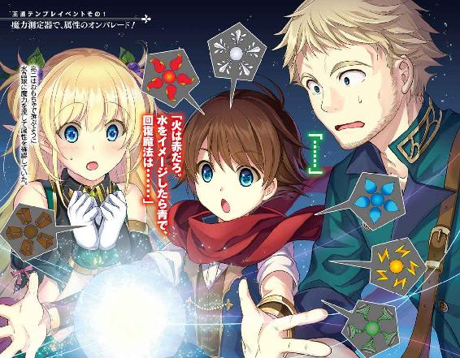
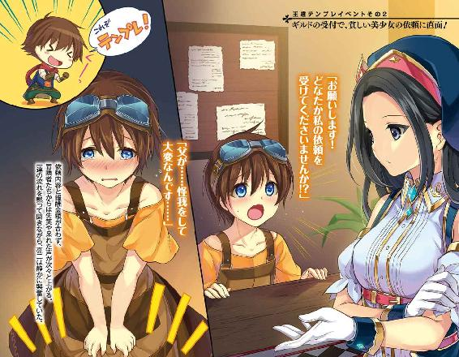
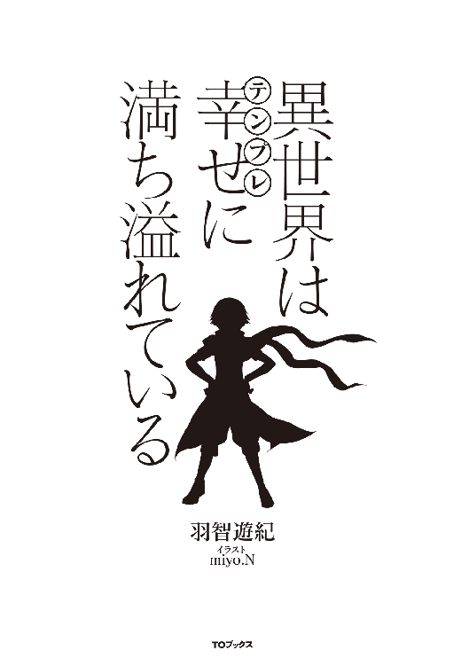
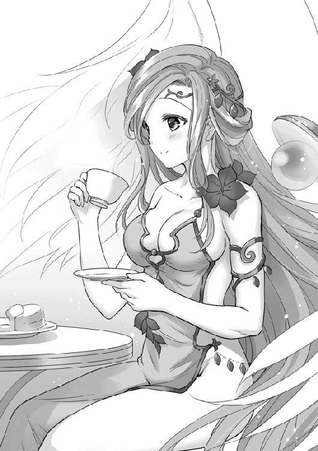
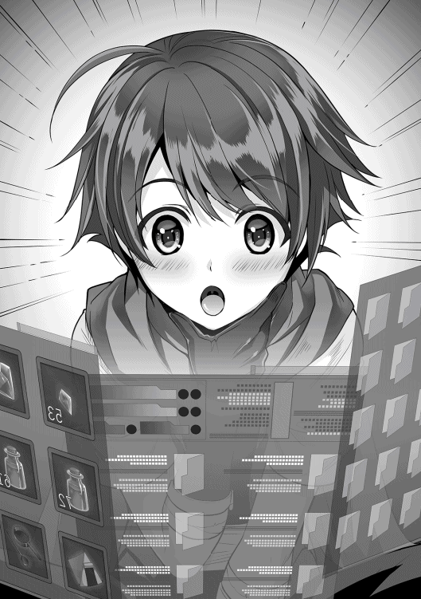
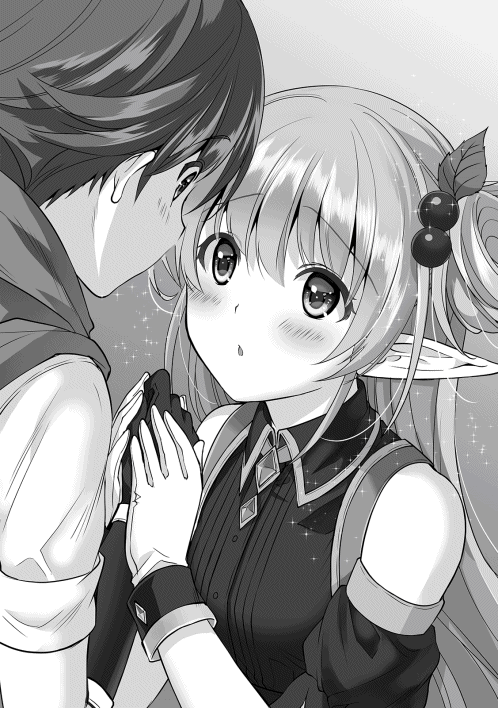
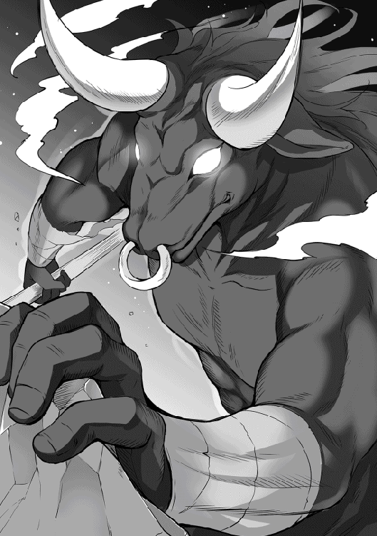
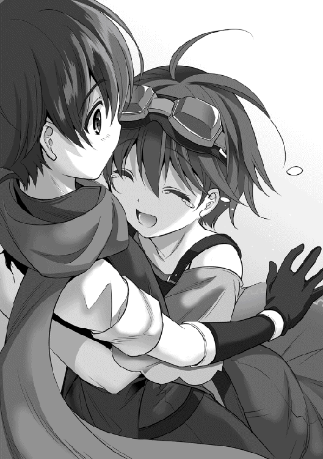
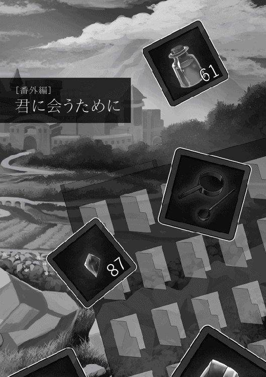

| 異世界は幸せ(テンプレ)に満ち溢れている | |
| 羽智遊紀 | |
| TOブックス (2016) | |
大好きだった女の子にこっぴどく振られて絶望していた亮二（26歳リーマン）は、ある日道端で出会った女神様によって、強制的に子供の姿で異世界に飛ばされてしまう。そこはまさに異世界ファンタジーもののテンプレ展開の塊！ 初めての冒険者ギルドで絡まれたり、魔力の測定器を破壊したり、食の革命を起こしたり、無詠唱魔法を会得したりなどの王道的イベントに心を馳せた亮二は、女神様を巧みに言いくるめてゴネ得したチート能力や、持ち前のテンプレ知識を駆使して、縦横無尽に異世界を堪能していく。――ご都合主義はほめ言葉だ！
イラスト：miyo.N
デザイン：木村デザイン・ラボ



「恋人じゃないけど？」
内野亮二は大学に入って初めて出来た彼女の言葉を呆然と聞いていた。付き合って一年目の記念日に呼び出したはずの女性は、亮二を見ると吐き捨てるように言葉を紡ぎだしてきた。
「えっ？ で、でも......」
「確かに食事に行ったり、映画に行ったりして、勘違いさせたのは悪かったかもしれないけど、私の事を彼女って言われると困るんだよね」
混乱している亮二に女性はため息を吐くと、勘違していると伝えながら机の上に置かれたプレゼントを手に取った。
「えっ？ なに？ ひょっとして指輪？ 安物みたいだけど、普段使いのアクセサリーとしてなら使ってあげてもいいかな？ 話はそれだけ？ じゃあ、彼氏を待たせてるから行くよ。それと用事があったら私から連絡するから、メールや電話はしてこないでね」
「えっ？ あっ！ ちょっと......」
亮二が止める間もなく席を立った女性は、喫茶店を出た所で待っていた男性に満面の笑みを向けて腕を組むと、イチャつきながらどこかに消えていった。
唖然とした表情で固まっていた亮二だったが、周りの席にいたカップルの嘲笑や、サラリーマンからの哀れみが混じった視線に気付くと、慌てて伝票を掴んで支払いを済ませて喫茶店から飛び出した。
「嫌な事を思い出したな」
寝覚め悪く起きた亮二はソファから起き上がると、冷蔵庫からビールを取り出して半分ほど飲み干した。吹っ切れたつもりの苦い思い出が蘇ったのは、高校時代からの腐れ縁である友人との飲み会が原因だった。
共に独身貴族を謳歌していたはずの友人から、彼女が出来たと報告されたのである。先月までいないと言っていたのに、今月に入って出来たらしく自慢話を散々されてしまったのである。
「なにが『お前も彼女を持てば人生が変わる』だよ！ 俺は悪い意味で人生が変わったわ！ こっちも好きで独身貴族を謳歌している訳じゃないんだよ！ 彼女が出来るならとっくに作っているわ！」
大学時代の悲しいイベントが原因で、灰色の大学生活を送った事を思い出した亮二は、心の傷を癒そうとビールの残りを飲み干して、もう一本飲もうと冷蔵庫を開けたが、中にビールが一本もない事に気付く。ため息を吐きながらジャケットを羽織って亮二は近くのコンビニに買いに行くことにした。
コンビニでビールや焼酎などを買い込んで家路を急いでいた亮二を突然のゲリラ豪雨が襲った。雨の勢いが衰えない事にゲンナリしながらコンビニの喫煙所に避難すると、亮二はタバコを吸いながらスマートフォンで、ネット小説のサイトを閲覧し始めた。
「おっ！ 更新されてるじゃん」
亮二はお気に入りに登録してるネット小説を読みながら時間を潰す事にした。高校生の時に読んだファンタジー小説からライトノベルにハマり、社会人になってからも書籍やネットで息抜きがてら読んでいるのである。
「ああ。やっぱり主人公に惚れるよな。これだからテンプレってのは安心出来るんだよ。主人公は幸せになって欲しいからな」
周りに聞かれると恥ずかしい事を口に出してしまった。慌てて周りを見渡すが、誰もいない事に安堵し、雨の様子を確認する。
しかし、降り続けている豪雨は亮二を嘲笑うかのように勢いをさらに増し、一向に止む気配は無かった。
「傘でも買って帰るか」
諦め顔で再びコンビニに入って傘を購入し、家路を急いでいた亮二の足がふと止まった。
「あれ？ こんな所に道なんてあったか？」
脇道を見付けた亮二は、普段なら素通りするはずが、なにかに引き寄せられるようにその脇道に入って行った。
ゲリラ豪雨が役割を終えたかのように弱まった事にも気付かず歩みを進めていると、夜分にもかかわらず明るさを増しだした周りの景色が闇夜の存在感を打ち消し始めた。
先ほどとは違う空気を感じながらも、引き返す事など考えずに歩みを進めていた亮二だが、ついに足を止めた。
「なんだ。行き止まりか」
苦笑を浮かべ、来た道に戻ろうと振り返った亮二は唖然として硬直してしまった。今まで歩いていた道が無くなっており、慌てて周りを見渡すと扉のない白い部屋になっていたからである。
「貴方は選ばれました」
背後から掛けられた声に驚いて振り返ると、今までなにも無かった場所にテーブルや椅子が設置され、一人の女性が紅茶やスコーンを楽しんでいた。亮二が警戒しながら近付くと、紅茶を眺めていた女性は亮二に視線を向けて対面の椅子に座るように勧めてくる。
「選ばれた？」
「そうです。貴方は私達の世界に選ばれました。無理やり、こちらの世界に来てもらう事が決まりましたとの表現の方が正しいのかもしれませんね」
首を傾げ、用心しながら椅子に座った亮二が疑問を口にすると、女性は笑みを深めてティーカップに口を付けた。
「無理やり、こちらの世界に来てもらう？ こちらの世界？」
「失礼しました、亮二さん。説明の前に自己紹介ですよね。私は幸福の神イオルスと申します」
椅子に腰掛けながら女性の回答が理解出来ずに再度質問した亮二に、女性は紅茶を注いで手渡すと自己紹介を始めた。自分の質問に答えずマイペースに話を進めるイオルスと名乗る女性に対して、亮二は苛つきながら口調を強めて確認を行った。
「私の質問に答えて頂けますか？ イオルスさんでしたっけ？ それに幸福の神？ 宗教勧誘の方ですか？」
亮二の強い口調を気にする事なく、イオルスは紅茶を一口飲むと改めて話し始めた。
「神の存在が疑問視されてる亮二さんの世界ですから、宗教勧誘と思われても仕方ありません。ですが、私は亮二さんの住んでいる世界の神とは違う神であり、亮二さんに私達の世界へ来てもらう為に現れました。強制で申し訳ありませんが、私達の世界で自由気ままに生きて頂けませんか？ そのために疑問に思われている事にはお答えしますし、出来る限りの要望にお応えするつもりです」
「要するに、私に貴方の世界で自由気ままに生きて欲しい。その為に必要な物は便宜を計ってくれる。という事ですか？」
「そうです。もちろん、出来ない事もありますが......」
亮二は胡散臭そうな顔をしながら目の前に座っているイオルスの説明に対して考え始めた。
（まずは質問だよな？ なんで俺なんだよ？ こちらの世界ってどこだよ？ 自由気ままに生きて欲しいってざっくりし過ぎてて意味が分からないし、便宜を図るってなにを？ どれだけ？ それにこの女性ってイオルスだっけ？ 本当に神様なのか？ お願いを拒否したらどうなるんだ？ 他にも疑問に思う事が......）
「す、すいません。質問は一つずつお願い出来ますか？ 一気に言われたらどれから返事すればいいのか分からなくなるので」

申し訳なさそうな表情で答えたイオルスに思わず謝罪した亮二だったが、声を出していない事に気付いた。
「おい！ 俺は声に出してないぞ？」
思わずタメ口になった亮二の様子に気にする事なくイオルスは話し続けた。
「亮二さんが考えている事が分かるのは、私が神である事と、この部屋に特徴があるからですね」
「は？ 神の力？ 部屋に特徴？ な、なにを言ってるんだ？」
混乱してタメ口状態のままの亮二に、イオルスは微笑みかけながら詳細な説明を始めた。
「まず最初に疑問に思われた『なぜ自分なのか？』についてですが、亮二さんの魂が私の世界と同じ構造をしているからです。亮二さんの魂を見てビックリしましたよ。私の世界の住人がこっちに間違って来たんじゃないのかって。ですので亮二さんを見かけた時は嬉しかったです。本来は二年掛かる魂の研磨作業の必要がなくて、すぐに来て頂けますからね。それと心の声が私に聞こえたのは、この部屋が精神世界に近いので肉体との境界線があやふやになって思考が外に漏れやすいのと、私がセーフィリアを治める全知全能の神なので思考を読むのは造作ないことが理由です」
「はぁ。全く訳が分からない事が分かりました。取り敢えず話だけは聞きますよ」
ドヤ顔で説明をしているイオルスに理解が出来ない事を伝えた亮二は、仕方なく話を促した。
「まずは、私が治める世界のセーフィリアですが、亮二さんの世界には存在しない魔法や魔物が出てくる世界です。亮二さんは、その世界で自由気ままに暮らして頂ければと思います。ただ向こうで悪い事ばかりされると、亮二さんに天罰を落とさないといけなくなるので注意して下さいね」
話し終わって満足気に紅茶を飲んでいるイオルスに、亮二は首を傾げて質問をした。
「頭の中で考えていた疑問に大体答えてもらいましたが、まだ全部は答えてもらえてませんよね？」
「申し訳ありませんが、先程もお伝えした通りお願いの拒否は不可能だと思ってください。亮二さんが入ってこられた部屋は、入られた瞬間に元の世界への道は閉じてますので」
申し訳無さそうに答えるイオルスを見ながら、選択の余地がない事を理解せざるを得なかった亮二は、軽く嘆息して現状を受け入れるとイオルスに向かって答えた。
「分かりました。そちらの世界に行きましょう。だけど援助はお願いしますよ。ちなみに援助ってどのくらいして頂けるのですか？」
「ありがとうございます！ 援助や願い事については基本的に制限はありません。世界中の人を奴隷にする魔法とか、虐殺三昧するための凶悪な武器とか、世界を壊滅させる強力な魔法とか、世界を混乱や消滅、破滅させるようなお願いじゃなければ叶えますよ」
「なんでそんなにバイオレンスな考えになるの？ ひょっとしてそっちの世界って、かなりヤバい？」
イオルスの台詞に完全に引き気味になっている亮二に、慌ててイオルスはフォローを始めた。
「いえいえ！ 大丈夫ですよ？ 問題ないですよ？ 海賊王や山賊王、破壊王や魔王なんかがあちこちにいるだけですから！ ダイジョウブダヨセーフィリアハコワクナイヨ！ コッチニオイデヨ！」
「全然大丈夫じゃないじゃん！ なんだよ海賊王とか破壊王って！ しかも大丈夫って言葉の後が疑問形だし！ 最後は片言の日本語じゃねえかよ！」
「ひょっとして、山賊王や魔王は大丈夫系ですか？」
「大丈夫なわけないじゃん！ それになんだよ大丈夫系って！ お前がサラッと海賊王とか言ったから他の奴らは思わず聞き流しちまったよ！」
「亮二さん」
「な、なんだよ？」
イオルスに真剣な声で名前を呼ばれた亮二は思わずどもりながら返事をしてしまった。
「キャラがぶれてますよ？」
「お、お前が言うなぁぁぁ！」
広い部屋に亮二の叫び声が響き渡るのだった。
亮二が思いっきり叫んでから五分ほど経った。全力で叫んだ後に紅茶を勢いよく飲み干し、グッタリした身体を労わるように深く腰を掛けた亮二は、その状態で考え込んでいた。
（どうあがいても異世界に行くのは決定事項だもんな。それだったら思う存分援助をしてもらってやる。まずは異世界で生きていく上で必要な強靭な肉体と魔力をもらおう。そんな事出来るのか聞いとくか）
「イオルスさん」
「はい。決まりました？」
紅茶を飲みながらクッキーやスコーンを楽しんでいたイオルスは、心の中で質問してきた亮二に嬉しそうな顔で尋ねてきた。
「援助って、内容に制限はないんだよな？」
「実は、別世界から私の世界に来て頂くのは亮二さんが初めてなんですよ。だから、私も亮二さんにどのくらいの援助をすればいいのか分かってないんです」
「じゃあ、俺が試金石になるって事か。だったら遠慮無く一個目のお願いをするわ」
亮二が気楽な感じで、願いを伝えようとすると、イオルスも軽い感じで返事をしてきた。
「はい。なににしますか？」
「俺が異世界でトラブルに巻き込まれても対応出来る身体能力」
「おぉ。物凄く抽象的ですね。仰っている意味は分かりましたので安心して下さい」
要望が通った事にホッとしていると、その様子を見ていたイオルスが具体的な質問をしてきた。
「つまり、いきなり英雄クラスでスタートって感じですか？」
「さすがにそんなチート状態でスタートはやりすぎだろう。そっちの世界はレベルがどのくらいあればベテランって呼ばれるんだ？」
「そうですね。私の世界にはレベルという概念がないので難しいですが、こっちのゲームで言うと、レベル二〇もあれば一人前さんじゃないですかね？」
「結構低いんだな」
「六〇もあれば英雄さんですからね。レベルが六〇あってもソロだと倒せないのが魔王なんですけどね」
「魔王どんだけ強いんだよ。ちなみに魔王は倒さなくてもいいんだよな？」
「倒したいのなら倒してもいいですよ。ただ、今の魔王は世界征服を目指していないようですので、そっとしといてもらっていいですけどね」
「世界征服を企まない魔王って。思いっきりテンプレだな」
「さすが亮二さん。異世界モノに詳しいですね」
「異世界ってジャンルで書籍があるくらいだからな......。って、なんで俺が異世界モノに詳しいのを知っている？ 確かに俺の趣味は読書で異世界系は好きだけど。あぁ、イオルスは心が読めるんだったよな。でもなんで心が読めるだけで俺が異世界モノに詳しいって話になるんだ？」
亮二が首を傾げながら問い掛けるような視線を投げると、満面の笑みを浮かべたイオルスが胸を張って自慢気に説明を始めた。
「ふっふっふ。私に隠し事なんて出来ないんですよ！ 相手に触らなくても、意識を相手に向けるだけで記憶もバッチリ覗けるんですからね」
「物凄いドヤ顔だな。あまり心を読まれるのは嬉しくないからサクッといくな。俺のレベルは二〇スタートで、ステータスは通常の二倍程度。体力や魔力もレベル二〇の二倍くらいになるようにしといてくれ」
「なるほど、そのレベルなら一人前さんですもんね。今気付いたんですが、話し方変わりました？」
「当たり前だろ。あれだけ叫んだ上に、考えも読まれてるなら社会人モードで話をしても意味ないじゃん。連れと話している時はこんな感じだしな。問題ないだろ？」
「もちろんです。私も話しやすくていいですよ。心の声と、出てくる言葉が違うと違和感しかありませんから」
「そんなもんか？」
「そうですよ。だから腹黒さんでも、無口さんでも、恥ずかしがり屋さんでも、私にかかれば全て丸っとお見通しです」
「心が読めるのが嬉しそうだな」
にこにこしながら紅茶を飲むイオルスに呆れながら、話が全く進んでいない事に気付いた亮二は話を続けた。
「で、二つ目いいか？」
「もちろんです」
「オンラインゲームのようなインタフェースが出るようにしてくれ」
「ステータスを見たり、ヘルプ参照が出来るようにしたいって事ですか？」
「それもある。それと、ステータスアップやスキル取得にポイントを割り振るように出来ると最高だよな」
「その辺りはやった事ないんで、どんな感じになるか分かりませんが、それでもいいですか？」
「無茶を言っているのは分かっているから出来なくてもいいよ。使い勝手が悪かったら利用を諦めるから」
イオルスが少し考えて出した答えに亮二は気にする事なく、次のお願いをする。
「じゃあ、次の援助についてだけど、ストレージを持ちたい」
「ストレージってアイテムボックスとは違うんですか？」
（やっぱり、ストレージだけじゃあ伝わりにくいか。イオルスは記憶や考えが読めるからどんな感じかイメージしたら分かってくれるかな？ パソコンのフォルダみたいに、多階層に出来て、検索機能やドラッグ＆ドロップを使って整理整頓出来れば最高だよな。それに、異世界モノでよくある物を入れても時間が進まないようにして、温かい物や冷たい物をいつでも出せるようにしたいな。あと、出し入れをイメージで出来るようにすると、間違って出し入れするかもしれないから、一工夫が欲しいところだな。それにしても小説の主人公達はイメージだけで上手く使いこなしているよな。俺だったら『腹減った。スープ飲みたい』って思わずイメージして熱々のスープで火傷しそうだ。形状はやっぱり布袋タイプか？ イオルスはアイテムボックスって言ったけど、セーフィリアの世界にあるアイテムボックスはどんな感じなんだ？ どれくらいまで入る？ 大きい物は入れられる？ アイテムボックスは誰でも持てるのか？ もし、ストレージとして持てるなら同じ種類だったら九九個とか括りたいな。それに......）
「ス、ストップ。ちょっと待って亮二さん！ 一気に喋りすぎです！」
イオルスは考え込んでいる亮二を慌てて止めると、セーフィリアでのアイテムボックスについて説明を始めた。
「基本的にアイテムボックスは冒険者や商人が持っている道具です。アイテムの出し入れにはキーワードが必要ですし、入れる時には所有権が本人にある事が明確でないと収納出来ません。もちろん出し入れは本人しか出来ません。アイテムボックスの説明としては、こんな感じですね」
「なるほど。アイテムボックスについては分かったけど、俺がイメージしたストレージ風にする事は出来るか？」
亮二の質問に「どうだろう？ 出来るかな？」と小首を傾げながらしばらく考え込んでいたイオルスが答えを返してきた。
「分かりました！ かなりチートなアイテムボックスですが良しとしましょう！ ただし、生物は入れられませんよ。生肉とかは入るようにしますが」
「なんで生肉を例に出した？」
「ＢＢＱとかしたいじゃないですか！」
「お前がする訳じゃないだろ......」
「きっと役に立ちますって」
「まあ確かにな。じゃあ俺がいつも読んでる小説と同じ感じで頼む」
「小説と同じ感じって言われた！ かなり難しい事を言ってるんですよ！ 亮二さんは。セーフィリアの神である私だから出来るんです！ その辺は分かってますか？」
頬を大きくふくらませながら胸を張ってドヤ顔をしているイオルスに、苦笑いをしながら感謝すると、次の援助について考えるのだった。
「ちなみにセーフィリアの貨幣ってどんな感じなんだ？ やっぱり金貨とか出てくるのか？」
漠然と考えながら質問した内容にイオルスが答えた。
「そうですね。亮二さんがイメージされている通り金貨、銀貨、銅貨、賤貨って感じです。一〇〇賤貨で一銅貨、一〇銅貨で一銀貨って感じになります。ちなみに魔道具を除いた物価は全体的に安いんで超お得ですよ！ 大量の金貨は重くて持ち運べないので、その際は宝石に換えられますね」
「宝石に換えるって大丈夫なのか？ 価値が分かりにくいから信用出来ないだろ？」
大学時代に付き合っていたと思っていた彼女に指輪をプレゼントした際『え？ こんなに小さいの？ もらえる物はもらってあげるけど』と言われた事を思い出したのだ。亮二にとって、宝石は絶望的なトラウマを思い出さすアイテムでしかなかった。
宝石に対して懐疑的になっている亮二にイオルスが心の底から頷きながら慰めてきた。
「うん。うん。分かりますよ、亮二さん。そんな涙ナシでは語れない過去があったら宝石に対して嫌悪感を持ちますよね」
「心を読んでも口に出すなよ。人の古傷を抉らないでくれ」
見るからに落ち込んだ亮二に慌ててイオルスはフォローを入れた。
「大丈夫です！ そんな懐疑的な目しか持てない亮二さんに朗報です！ セーフィリアにはギルドに鑑定士がいますから安心してください。鑑定士が出した値段はギルドが責任を持って貨幣に換えてくれますよ。金貨一〇〇枚で宝石一個って感じです。宝石の大きさで価値は変わりますが、基本金貨一〇〇枚単位と思ってください」
「残念な人扱いするなよ。宝石の価値が保証されてるなら問題ない。じゃあ三つ目の援助として当面は働かなくても大丈夫なくらいの資金をストレージに入れといてくれ」
「え？ 異世界ライフのスタートがニートって。つまり働きたくないでござ......」
「そんな訳ないだろ！」
イオルスの台詞の途中でツッコミを入れた亮二は、生活の資金が欲しい理由の説明を始めた。
「いきなり、異世界に放り込まれても無一文じゃなにも出来ないだろ。セーフィリアでなにをするかを決める時間も欲しいし、遊んで暮らせる金じゃなくても当座の資金は欲しいんだよ」
「金額はどうされます？ ストレージなら数量を気にする事なく入りますよ？ 金貨×九九を一〇個とか」
「それでいいか。金貨があり過ぎても困らないもんな。じゃあ、そんな感じで金貨や銀貨なんかも入れといてくれ」
「さり気なく銀貨も追加した」
「うるせえよ。市場で買い物する時に金貨をいきなり出したら相手が困るかもしれないだろ？」
細かいツッコミを入れるイオルスにゲンナリしながらも亮二は答えるのだった。
「もう、これくらいで大丈夫ですかね？」
満足げな顔をしているイオルスに亮二は最後の援助を頼んだ。
「じゃあ最後のお願いを頼む。最初のサービスって事で、イオルスがセーフィリアで必要だと思う物をストレージに適当に入れといてくれよ。あっ！ 資金とは別にな」
「え？ そんな無茶振りするんですか。お金の件だけでも十分にお願いを聞いていると思うんですけど。それ以外ってなにを渡したら良いんですか？」
「まっ！ そこは初回特典って事で適当に」
「さっきまでのお願いだけでも亮二さんはセーフィリアで無双出来ますよ。素敵なスタートを切るには十分じゃないですか？」
気楽な感じで両手を合わせてお願いしている亮二に苦笑いしながらイオルスが答えた。
「でもさ、イオルスも俺に長生きしてセーフィリアで暮らして欲しいんだろ？ 世界中を旅する事も考えないといけないしさ。だから、ちょっとだけ気持ちを込めてくれよ。神様の慈悲ってやつでさ」
「そんな所だけ神様扱いして！ 分かりました。それでは幸福の神イオルスの名において、亮二さんが私の世界で我がもの顔で生活出来るような物をストレージに充実させておきます！」
「おぉ、幸福の神は太っ腹だね！」
イオルスの宣言に満足げに合いの手を入れた亮二は、本当に最後の質問を投げかけた。
「で、ぶっちゃけどうやってセーフィリアに行けばいいんだ？ 神の力で転送とかか？」
「それはですね、あちらの扉から行ってください！」
「扉？ うぉ！ いつの間にか扉が現れている」
イオルスが部屋の奥をハイテンションで指差すと、今までなにも無かった部屋に扉が現れていた。
「亮二さんの気持ちがセーフィリアに向いたので、あちらの世界も受け入れ態勢になったんですよ」
「なるほどね。了解！」
いきなり現れた扉に驚きながらもノブに手をかけて軽い調子で答えると、亮二はイオルスの方を向いた。
「これで、契約成立だな。短い間だったけど楽しかったぞ。神様だからもう会う事もないだろうけど、あっちに行って神殿でも見かけたら拝んどくよ」
「もちろんです！ 無理やり行ってもらうのは申し訳ないですが、初めてのパターンだからって事で、かなり援助をしてるんですからね！ 私の神殿を見かけたら、たっぷりの寄付をした上で拝み倒してください」
亮二の調子に合わせて軽く返事した後でイオルスは笑顔で爆弾を落とした。
「ちなみに最初に到着する場所についてですが、私もどこに出るのか分からないんですよ。ごめんなさい！ てへぺろっ。魔物にいきなり襲われる事はないとは思いますが、十分に気を付けてくださいね！ これってある意味テンプレですか？ それともフラグ？」
「ちょ、おまっ！ ふざけんなよ！ せめて安全なと......」
最後までイオルスに苦情を言えずに、亮二は扉に吸い込まれていった。亮二がいなくなった部屋は先ほどまでの喧騒が嘘のように静寂に包まれた。しばらく扉を見つめていたイオルスは小さく呟くと紅茶を飲み始めるのだった。
「亮二さんとセーフィリアの未来が幸せに満ち溢れますように」
「ふざけんなよ！ 最後までしっかりと面倒見ろよ。なにが『これってある意味テンプレ？ それともフラグ？』だよ。『てへぺろ』じゃねぇよ。いきなり魔物の群れの中とかだったら始まる事なく、終わっちまうじゃないか」
吸い込まれる様にセーフィリアへ続く扉をくぐった亮二は、引っ張られる感覚に身を任せながら毒づいていた。何気なく体を触っていると、腰に皮袋が括りつけられている事に気付いた。よく見ると服装も変わっており、ゆったりとした旅人風の服とブーツになっていた。
「セーフィリアに行くのにジャージじゃ駄目だろうからって事でイオルスのプレゼントなんだろうな。ちなみに、この皮袋がストレージか？ あっちの世界に行くまでどのくらいかかるか分からないけど、せっかくだから中身の確認をしとくか。イオルスはなにを入れてくれたんだ？」
ワクワクしながら呟いていたが、引っ張られる感覚のままだとストレージの中身をまき散らしそうで、代わりにインタフェースを起動して中身を確認しようとした亮二はある事に気付いた。
「あれ？ どうやって使うんだ？」
イオルスからインタフェース起動の仕方を聞いていない事を思い出すと、亮二はため息を吐きながら呆れるように呟いた。
「あ、あれか？ イオルスのドジっ娘属性か？ やだなイオルスさん。そんな属性持ちだなんて。惚れ直してしまうわ。そもそも惚れてないけど。まあ、聞いてない俺も悪いけどな」
亮二は独りでノリツッコミをしながら、異世界モノに書かれていたインタフェース起動方法を思い出そうとしていた。
「確か、イメージが大切なんだよな。オンラインゲームを思い出すのが、分かりやすいとかだったよな」
仕事が忙しくログインしていないオンラインゲームのインタフェース画面を思い出しながら亮二はイメージを固めていった。
「おっ！ 出た！」
亮二の目の前に見慣れた画面が表示された。目の前三〇センチにメニュー画面があり、画面には様々な文字が羅列されていた。皮袋を手に持って検索のイメージをするとイオルスさんの幸福な皮袋と書かれた項目が表示された。そのネーミングセンスにゲンナリしながらクリックすると画面に説明が表示された。
イオルスさんの幸福な皮袋
幸福の神イオルスが認めた人間の為だけに作成された、イオルス神の加護が与えられた皮袋である。階層構造を利用してアイテムを保存する事が出来る上に、通常のアイテムボックスに比べて容量や収容可能サイズが比較にならないほど巨大である。また、同一アイテムをまとめて保存する事が出来る。
「さすがイオルス。ちゃんと仕事してくれたんだな。フレーバーテキストにここまで書かれているなんてな。ネーミングセンスはアレだけどな」
亮二はインタフェースに書かれている内容を確認しようとした瞬間に、突然上空からイオルスの声が降ってきた。
「ぴんぽんぱんぽぉぉん！ 当機は間もなく目的地に到着しまぁす。膝の上のお荷物などお忘れのないようにお降り下さい！」
「なんの乗り物を参考にしているんだよ！」
ふざけた内容に青筋を立てながら叫ぶ亮二に対して、さらに人を食ったような声が響き渡った。
「いま、『なにを参考にしてるんだよ』と叫んだ貴方！ この音声は自動音声です。そして、別になにも参考にしてませんよ。残念でした。ぷぷぷ」
「ふざけんな！」
亮二は激怒したが、イオルスの自動音声は説明を続けていた。
「冗談はさておき、もうすぐ扉が三枚現れます。どの扉を選んでも到着する時代は同じですが、一つ目の扉は『生まれた時から始めます！ でも、生まれる場所は選べません』です。場合によったらなにも出来ずにいきなり人生が終わるかも。二つ目の扉は『一三才でスタート』です。セーフィリアの成人式に合わせました！ 微妙に子ども扱いされるのが玉に瑕かも。成人式をしたのに子供扱いってどっちなんだよ！ って感じです。三つ目は『今の年齢のままでＧＯ！』です。ただし、それなりの年齢のオッサンが突然現れて、セーフィリアで無双を始めることになるので、世界各国から目を付けられて狙われるかも！」
「口調はともかく、思ったよりも悩む内容だな。それにしてもデメリットを強調して説明するのはなんでだ？ 一つ目なんて異世界モノならよくある設定なのに赤ちゃん状態は危険って言われると二の足を踏むわ！ 三つ目も世界各国から目を付けられる状態なんて、ビビって無双なんて出来るかよ！ どう考えても二つ目を推奨しているよな」
亮二の呟きを聞いていたのか、絶妙のタイミングでイオルスの声が再び響いた。
「今、一つだけ用意しといたらいいじゃんと思った貴方！ 正解です！ ノリで三つ考えたから、もったいないんで用意してみました。転生する件については今後のアンケート内容で改善されていきます。アンケートなんてないんですけどね」
「だったら言うなよ！」
思わずツッコミを入れてみたが反応がないところを見ると、最後まで自動音声のようであった。手が込んでいるのか、いないのか判断に苦しむような状態に思考能力が止まりそうになった亮二は、頭を強く振ると扉に到着するまで必死に考え続けた。
「よし！ イオルスの思惑に乗るのは癪だけど、どう考えても二番目の扉だよな」
亮二は二番目の扉に手をかけて思い切り押してみた。
「ん？ 開かないぞ？」
「ぷぷぷ。実はこの扉は引き戸なんですよね」
「おまっ、今度会ったら本当にしばくからな！」
思わず叫びながら扉を引いた亮二の周りを白い光が包み始めた。目が開けられなくなるほど眩しくなり、亮二は思わず目を閉じて蹲ってしまった。しばらくすると光が収まり始め、恐る恐る目を開けると、目の前には大きな木がそびえ立っていた。
「イオルスがあんな事を言うからビビっちまったじゃないか。そういえば結局、ストレージの中身も調べてないじゃん」
イオルスのフラグ発言が唐突に浮かんだ亮二は、慌てて立ち上がった。周りを見回してなにもいない事を確認すると安堵のため息を吐く。安全を確認した亮二はイメージを固めながらインタフェースを起動して、索敵モードをオンにすると、索敵半径を一キロメートルにして調べ始めた。
「この青い点はなにか魔物か動物なんだろうな。青って事は敵として認識してないって事だろうから、しばらくは大丈夫か。じゃあ安心してストレージの中身を確認出来るな」
亮二は呟きながらインタフェースを起動させて、イオルスさんの幸福の皮袋をクリックすると中身の確認を始めた。
イオルスさんの幸福の皮袋
《お財布袋》
・金貨×九九
・銀貨×九九
・銀貨×九九
・銀貨×九九
・銅貨×九九
・銅貨×九九
・銅貨×九九
《へそくり―ご利用は計画的に―》
・宝石《小》×九九
・宝石《中》×九九
・宝石《大》×九九
《癒し部屋》
・ポーション×九九
・ポーション×九九
・マナポーション×九九
・マナポーション×九九
《日用道具》
・テント
・寝袋
・炊飯グッズ
・衣服
・ランタン
《食料品》
・パン
・飲み物
・生肉
・野菜
・調味料各種
・マシュマロ
《そんな装備で大丈夫？》
《問題ない》
・ショートソード
・ロングソード
・杖
・皮鎧
・バックラー
《いいのをくれ》
・ミスリルの剣
・ミスリルの服
・ミスリルの腕輪
・不可視の盾形ガントレット
《ひ・み・つ》
・閲覧不可能
「おぉ！ 胸張ってドヤ顔してただけあって充実してるな。階層にもなってるし、武器防具も充実してるな。お！ 金もたっぷり入ってるじゃん。安心してしばらくはニートが出来るな。やるじゃんイオルス。ところでこの《ひ・み・つ》ってなんだ？ クリックしても閲覧不可能としか出ないんだけど？」

しばらく《ひ・み・つ》をクリックしていたが反応がないので諦めて後日調べる事にすると、インタフェースを表示させた状態で色々とアイテムを出し始めた。
「硬貨ってこんな感じなんだな。思ったより小さいな。でか過ぎるよりいいけどな」
貨幣を何枚か出していじりながら感想を呟いていた亮二の顔が険しくなった。
「ん？ 敵が迫っているな。敵の数は三か。やっぱりフラグになっちまったじゃないか」
ゲンナリしながら索敵モードを確認すると、赤い点が自分に向かって来るのがはっきりと映っていた。亮二はストレージの《いいのをくれ》フォルダからミスリルの武器防具を急いで取り出すと慌てて身に着けていく。
索敵モードでは大きさや強さまでは分からないが、赤い点が自分に対して敵意を持っている状態を示している事は分かった。亮二はストレージから取り出した武器防具を装備して、それぞれの状態を確認し始めた。
「それにしても初めての戦いが複数とはね。相手によっては素早く逃げないとな」
そう呟きながら、逃げる事を視野に入れて戦う事を決めた。初めて握るミスリルの剣の長さや重さを確認しながら、相手が向かってくる方向に意識を向けて腰を落として剣を構えた。
「へっ？ キノコ？」
敵意を振りかざして亮二に向かってくるのはキノコのお化けだった。どの角度から確認しようと巨大なシイタケに手足の様な触手が生えているだけである。大きさは一〇〇センチほどであり、動きも緩慢で連携も取れていないようであった。
亮二が非現実的な状況に呆然としていると、突出していた一体から触手が伸びてきた。亮二は軽くステップをして躱すと、全力でミスリルの剣を横に薙ぎ払った。剣は亮二の手に抵抗感を与える事なく、キノコを上下に綺麗に斬り裂いて動かなくなったのを確認して、キノコのお化けを倒した事を確信する。
「思ったよりも抵抗なく殺せたな。見た目がキノコってのが良かった。これが人型や動物だったりしたらあふれる血を見て駄目だったかもな」
誰がいる訳でもないのに口に出したのは興奮しているからであろう。亮二は遅れてきた二体のキノコに向かって駆け出すと、上段から鋭く振り下ろした。一体目に対して圧勝したのが油断につながったか、ミスリルの剣はキノコのお化けを軽く真っ二つに切り裂くと、勢い止まらず地面に突き刺さった。
地面に埋まっていた大岩に刺さってしまったようで、大きな音が辺り一面に響き渡った。戦いに慣れた人物なら剣を手放して三体目と距離を取ったであろうが、初めての戦闘でテンションが上がり過ぎて判断力が鈍った亮二は、剣を手放すのではなく引き抜く事を選択してしまった。
「くっ！」
大岩が思ったよりも固く、ミスリルの剣を引き抜く動作が一瞬遅れてしまった。戦いにおいての一瞬は致命的である。引き抜いて体勢を崩しながらも慌てて剣を構えようとしたが、左から飛んできた触手を避ける事が出来ずに、反射的に防ごうとして上げた左手に力を入れた。
襲ってくるはずの痛みに耐えようと思わず目をつぶった亮二だったが、いつまで経っても衝撃も痛みも襲ってこない。恐る恐る目を開けると、うっすらと青い盾のようななにかが触手を防いでいた。
不可視の盾型ガントレットが亮二を守ってくれたらしい。ホッと一息を吐くと、攻撃動作に入ろうとしていたキノコのお化けに、亮二はミスリルの剣を上段から振り下ろした。
「はぁはぁはぁ。うえっ！ つ、疲れたぁ。戦いってこんなに疲れるんだな。それにしても初戦から複数相手でよく勝てたな。なんで逃げる選択肢を選ばなかったんだろう？」
戦闘開始から数分後には三体とも動かなくなり、周りに魔物がいない事を確認した亮二は、五体満足で無事に魔物を倒せた事に安堵すると力が抜けたようにへたり込んだ。自分で思っていたよりも興奮していたらしく、息が荒れて整わないのである。
初めての戦闘で逃げる事を思い付かなかったのは、異世界に来て考える事が多すぎたのと、密かに戦闘を楽しみにしていた事が大きかったのだろう。亮二にとって異世界とは本の中の世界であって、忙しさの中知らず知らずに溜まっていく日頃のストレスを発散させる為の清涼剤だった。
それが突然、目の前に現れ本当に異世界に来てしまった。表面上は冷静に受け入れているように見えても、心の中では、自分は選ばれた主人公キャラじゃないかと思ってしまったのである。微妙とはいえ神様にまで会って異世界行きを頼まれたのだから。
「そうだよな。はたから見たらどう見ても異世界モノの主人公だよな俺って。間違いなくテンションも上がるよな」
ストレージに水が入っている事を思い出して取り出して飲もうとしたが、水筒を取り出して蓋を外す時に指が震えている事に気付いた。がぶ飲みしながら何とか呼吸を整える。
「いつの間にかインタフェースも消えてるな」
インタフェースを出したままでは戦えないようである。最初に出す時も集中力が必要だったので、戦闘中に自動的に解除されたのであろう。キノコのお化けが気になった亮二は、インタフェースを起動するとキノコのお化けに手を当てて検索を始めた。
キノコのお化け
セーフィリアに広く生息する魔物である。知性は無く、動くものを見つけると麻痺性の毒を触手から出して攻撃してくる。麻痺で動けなくなった獲物に菌糸を埋め込んで仲間を増やしていく。人間にとっては麻痺性の毒は動きにくく痺れるくらいなため、一般人でも二〜三人いれば討伐は可能である。倒した後はキノコと同じなので、乾燥させて保存食としても活用されている。触手は舌が痺れる為、食べる際には注意が必要。討伐対象ランクＨ。
「キノコのお化けって、名前からしてそのまんまかよ！ ひょっとして俺って主人公キャラかもとか思ってたけど、一般人でも討伐可能って書いてあるんだからめちゃめちゃ弱いじゃん」
武器として最高クラスのミスリルの剣を使って、実は弱かったキノコのお化けを倒して自信満々になっていた亮二は、誰もいないにもかかわらず恥ずかしさで赤面しつつ、倒した三体をストレージに収納するために近付いた。
「せっかく倒した初魔物だから、テストも兼ねてストレージに保存してみるか。保存食にもなるらしいしな。そう言えばストレージにどうやって入れるんだっけ？」
亮二は動かなくなったキノコのお化けを前にして考え込んでいた。装備やアイテムを出す時はインタフェース越しにアイテム欄をクリックして武器防具を出したので、特に気にならなかった。試しにフォルダにあるアイテムの金貨をクリックすると目の前に金貨が現れた。
「インタフェースを利用してアイテムを取り出すのは簡単だな。でも街中で突然、なにもない所からアイテムや貨幣を出したら目立つよな。やっぱり街中でストレージ越しでアイテムを出すようにしよう。確か、あの部屋でイオルスに聞いたアイテムボックスからアイテムを取り出す方法は『オープン』と唱えるんだったよな？」
イオルスと会った白い部屋で聞いたストレージであり皮袋の姿をしたアイテムボックスの使い方を思い出しながら、皮袋に左手を添えて金貨をイメージして声を出してみた。
「オープン！」
なにも変化がない状態に亮二は戸惑いながら「オープン！ オープン？ オープーン！」と連呼したが亮二の声が森に虚しく吸い込まれるだけで金貨は現れなかった。
「やり方が間違ってるのか？ そんな難しい事はないと思うんだけど......」
首を傾げながらインタフェースを起動してイオルスさんの幸福な皮袋が表示されているのを確認すると、その利用方法について調べ始めた。
イオルスさんの幸福な皮袋
取り出し方
皮袋に左手を添えて「イオルスさん素敵！」と大きな声で何回も言いましょう。とてもすっきりとした幸福感に包まれます。
取り出し方は二種類です。インタフェースを起動して該当アイテムをクリックします。または、皮袋に手を入れてから『オープン！』と唱えます。
しまい方
皮袋に左手を添えて「イオルスさん頑張って！」とセーフィリアに響き渡る声で言いましょう。嬉しさのあまり小躍りしてはしゃいでいる事でしょう。
しまい方も二種類です。インタフェースを起動して該当アイテムを触りながら入れたいフォルダを触りましょう。同じアイテムの場合はまとめられます。もしくは、アイテムを皮袋に入れてから「クローズ！」と唱えます。
「利用方法はイオルスが好き勝手に書いているみたいだな。やり方さえ分かればいいんだけどさ。とりあえずキノコのお化けの大きさだとそのまんまでは入らないよな。小さく切るのもめんどくさいし、やっぱりインタフェースからしまうか」
イオルスの説明文に呆れながらインタフェースを起動するとキノコのお化けを収納しようとして、ふと気が付いた。
「あっ！ そうだ。どうせだったら新規フォルダを作ってみるか。フォルダの右上にある新規作成ってボタンみたいなやつだよな？ 名前は《倒した魔物》にしとくか」
新規作成と書かれているボタンをクリックすると《新しいフォルダ》と表示されたので《倒した魔物》に名前を変更し、キノコのお化けを右手で触りながら左手でフォルダを触ると一瞬で消え、「倒した魔物」フォルダにキノコのお化けが表示された。同じ手順で残りの二体を触るとキノコのお化け×三となるのだった。
「数が分かるっていいよな。時間がある時に干して保存食にしておくか」
亮二は初めての戦闘で思ったよりも無難に勝てたが、ミスリルの剣に不可視の盾形ガントレットが無かったらキノコのお化けの獲物となっていた事を考えると、ドヤ顔のイオルスを思い出しながら心の中で彼女に感謝をするのだった。
「どうしてこうなった？」
げんなりした顔で亮二は襲い掛かってくるキノコのお化けにミスリルの剣を振るっていた。キノコのお化け三体を収納した後、インタフェースで地図を呼び出して最寄りの街を検索したところ、歩いて二時間と出たので街に向かって歩き始めたのだが、日本では魔物に遭う事が無かった亮二は気楽な感じで歩いていた。
インタフェースを起動して油断していたのもあるのだろう。街まで徒歩で一時間を切り、休憩を取ろうと広場に入った。しかしそこで、持っていた拳大の石を、広場の中心に向かって何気なく投げたのが間違いだった。
「インタフェースでは赤い点なんて出てなかったのに！」
亮二が足を踏み入れた場所はキノコのお化けの巣だったらしい。亮二が投げた石が運悪く休眠中のキノコのお化けに当たった為に、目覚めたキノコのお化けが仲間を増やそうと亮二を襲って来たのである。
広場に入るまでに数回戦闘をしていた亮二は二〜三体なら簡単に対処出来るようになっていたが、土中から目覚めたキノコのお化けは数えるのも馬鹿らしくなるほどに溢れてきており、亮二は休む間もなく捌き続けた。
戦闘開始から三〇分ほどが経ち、周りに動く物体がいなくなった事と、インタフェースの索敵モードで敵意がある物体が半径一キロメートル以内にはいない事を確認した亮二はようやく剣を収めた。
「さすがに戦闘に慣れたけど飽きた。どんだけ湧いてくるんだよ。明日は間違いなく筋肉痛だわ」
倒したキノコのお化けをボヤキながらストレージの《倒した魔物》フォルダに入れていった。全て収納したのを確認して、ふと気になった亮二はフォルダを表示させ、その数を見て愕然となった。
《倒した魔物》
・キノコのお化け×九九
・キノコのお化け×三六
「どんだけ倒してるんだよ。しばらくはキノコ料理には困らないな」
亮二は疲れた表情をしながら呟くと街に向かって歩き始めた。
「やっと着いた！ 誰だよ、最寄りの街まで二時間って言ったのは。あれからキノコのお化けばっかり襲ってきやがって！ 他にも魔物がいてもいいんじゃね？ 疲れただけじゃん！ 最初の二つ名はキノコマスターで決まりだな！ 大体、イオルスがあんな場所に転移させなければ......」
門番の耳に届いたのは子供っぽい高い声だった。何事かと声の方に意識を向けると、ぶつぶつとうつむき加減で独り言を呟きながら、小さな人影が疲れきった表情でこちらに向かって歩いてくる。この辺りでは見かけた事のない子供だった。
腰に剣を差していている以外は旅をしているようには見えない程の軽装で、旅人にしては汚れ一つ付いていなかった。そのアンバランスさに違和感を覚えた門番は、少し警戒しながら子供に話しかけた。
「君、どこから来たんだい？ ここから最寄りの街までは馬車で三日はかかるんだよ？ かなり身綺麗だけど、馬車からはぐれてしまったのかな？ 家族はどうしたんだい？ 一人って事はないだろ？」
門番から話しかけられている事に気付いた亮二は、人がいる場所に辿り着いた事が分かると、安堵のため息を吐きながら独り言を止めて、門番の質問に答えた。
「私ですか？ 私は遠い国から一人旅をしている最中です。旅の目的は特になく、着の身着のままで世界を回って見聞を広めています。私も若いとは言われる方ですが、門番さんから見てそんなに若く見えますかね？ 親に連れられて旅をしないといけないような年齢でもないんですが」
どこから見ても一〇才程度にしか見えない子供に苦笑されながら敬語で答えられた門番は軽く混乱しながらも質問を重ねた。
「丁寧な回答をありがとう。でもね、君の姿はどう見ても子供にしか見えなくてね。ひょっとしてエルフかなにかなのかい？ 見た目に対して年齢を重ねているとか？ そう言えば名前もまだ聞いてな......」
「エルフ！ エルフがいるんですか！ そうか！ そうだよな！ 異世界だもんな！ エルフがいてもおかしくないよな。門番さん！ もしかしてドワーフもいたりするんですか？」
「あ、あぁ。いるよ。なにをそんなに興奮しているかは分からないが、エルフもドワーフも獣族も妖精族だっているよ。そんなの当たり前だろ？ なにか話を誤魔化そうとしてるようだが、君の名前と街に来た目的を教えてくれるかな？ 誤魔化すなら取り調べを厳しくする必要があるからね！」
怒涛の勢いでエルフ達について質問する亮二に戸惑いながらも、彼を怪しい相手と認識した門番は強く尋ねた。
「失礼しました。私の名前はリョージ・ウチノです。この街に来た目的は特に無くてですね。たまたま森の近くに来たので寄らせてもらった次第です。それと冒険者ギルドはありますか？ あるなら登録したいと思っているのですが」
「やっと答えてくれたね。余りにも挙動が怪しいから尋問所に連れて行こうかと思っていたところだよ。それにしても言葉遣いが丁寧だね。どこかの貴族のご子息かな？」
「いえ、貴族ではありません。初対面の方には丁寧に話すように教育されていますので」
気が付けば亮二の後ろには長蛇の列が出来ていた。門番は軽くため息を吐くと、詰め所にいた別の門番に声をかけ、結局は亮二を尋問所に連れて行くことにした。
尋問所に連れてこられた亮二は椅子に座るように指示をされると、右手に水晶を持った門番から再度この街に来た理由の説明を尋ねられた。亮二は門番が持っている水晶が気になりながらも、再度説明を始める。
「祖国を出て西に向かって旅をしていたのですが、たまたま通りがかった道に興味を覚えて入ってみると光り輝きだして、気付けば森の中にいたんです。そして見た事もない景色に戸惑っているとキノコが襲ってきたので撃退しながら進んでいたら、この街に到着した次第なんですよ。エルフやドワーフは私の国では本の中でしか見た事がないので思わず興奮した訳です」
門番の質問に答えた亮二の言葉に嘘が無い事を水晶を通して確認すると、最後に年齢について尋ねた。
「二六才です」
「え？ 本当に二六才なの？ 実はハーフエルフとかは言わないよね？ もう一度聞くけど本当に二六才？」
真面目な顔をして二六才と言い切った亮二の言葉に思わず門番は苦笑をもらしたが、水晶球を見て眉を顰めた。嘘を吐くと赤く反応するはずの水晶球が全く反応していないのである。
どこからどう見ても一〇才くらいにしか見えない子供が二六才と言い切ったからである。しかし水晶球の反応を見ると嘘は吐いておらず、目の前の子供は一〇才くらいに見える二六才か、自分を二六才だと信じ込んでいる子供のどちらかになる。困惑している門番の反応に首を傾げながら亮二は考えていた。
「（ん？ この門番さんはなんで俺の年齢をしつこく聞くんだ？ 日本人ってやっぱり若く見られるからかな？）ちなみに門番さんは何才なんですか？」
「ん？ 俺も二六才だよ。君からすると同じ年かな？ 俺の方がかなり年配に見えるけどね」
あまりにも門番が困惑するので、話を変えようと門番に質問した亮二だったが、彼からは自分と同じ年ではないと言わんばかりの答えが返ってきた。不安になってきた亮二は、思わずインタフェースを起動して自分自身のステータスを確認する。
名前：リョージ・ウチノ
年齢：一一
職業：無職
レベル：二〇
備考：ステータスや体力・魔力については職業が無職のため非表示
「そっか、門をくぐる時に一三才になる扉を選んだよな。でも年齢が一一才になってますけど？ なんで一一才？ イオルスは扉をくぐったら一三才になるって言ったよな？ ひょっとして『本来は二年掛かる魂の研磨作業が必要なくて、すぐに来て頂ける事になりました』ってイオルスが言ってたやつか？ そのせいで二年差が出ているのか？ そりゃあ一一才の子供が『私は二六才です』って言ったら困惑するよな。どうすんだよこれ？ 『てへぺろ』って言ったら許してくれるかな？」
ステータスをこっそりと確認して年齢が一一となっている事に気付いた亮二が、ブツブツと呟きながら言い訳を考えていると門番から再度質問があった。
「リョージ君と言ったよね？ もう一回年齢を言ってくれるかい？」
「二六才です。でも本当は一一才です......」
「あれ？ 二六才と言ったら水晶の色が赤色になったけど、一一才と訂正したら青になった？ なんで急に年齢の訂正を？」
「自分は二六才だと信じてるんです！ だって二六才って大人ですから！」
自分でも暴論だと思いながらも言い切った亮二に、門番はむしろすっきりした顔をしているのに気付いた。
「まあ、水晶球も思い込んでいる事までは見抜けないか。嘘じゃないのは分かったから年齢の件は別にいいよ。で、これからどうするつもりだい？ 街に入るのは許可するけど、街に入るには税金が必要だよ？」
門番があっさりと許可した事に拍子抜けしながらも、入場税が必要と聞かされた亮二は金額を確認した。
「どのくらい必要ですか？ 余りお金は持っていないのですが」
「外から来た人には銅貨五枚を払ってもらってるよ」
「安っ！ し、失礼しました。銅貨五枚ですね」
亮二は皮袋に手を突っ込みながら銅貨五枚を取り出すと門番に税金を手渡した。
「あれ？ お金に余裕ないって言った割にはあっさりと支払ったね？」
お金を受け取りながら門番は改めて亮二の全身を眺めた。それほど安いはずのない税金を疑いもせずに支払っており、旅慣れているようには見えなかった。腰に差している剣以外は旅をするつもりもない軽装であり、話し方も貴族のようである。怪しさ全開の目の前にいる人物から、さらなる情報を得るために門番は話しかけた。
「そうだ。リョージ君は知っているかもしれないが、冒険者になるための登録料は金貨三枚は必要だけど大丈夫かい？ 登録する時に冒険者証と証明書を渡すんだが、冒険者証が魔道具になっているから高額なんだよ」
「金貨三枚ですね。そのくらいなら手持ちでありますので大丈夫ですよ。ちなみに冒険者証及び証明書を紛失した際の再発行手数料はどのくらいかかるのでしょうか？」
亮二の子供らしからぬ返事に、しばらく付き添って怪しい人物か調べる必要があると判断した門番は、亮二に街の案内をする事を決めて笑顔で話し掛けた。
「（ほら、これだ。普通の人間は金貨三枚を手持ちで持っているなんて気軽には言わない。旅の目的もないような事を言ってたが、間違いなく怪しいよな）......よし！ 私がギルドへの案内と、今の質問について説明しよう。仕事も交代の時間だからね」
「え？ そんなの悪いですよ。場所さえ教えて頂ければ自分で行きますので」
遠慮気味に言った亮二を見て、門番はニヤリと笑いながら説得を始めた。
「どうせだったら冒険者になる為の情報ってのを知りたくないか？ 俺だったら色々と教えてやれるぞ。こう見えてもＢランク冒険者だからな」
「え？ Ｂランク冒険者ですか！ 門番さんって兵士じゃないのですか？ それに、さっきと話し方が随分と違うようですが？」
「仕事は終わったって言ったろ。普段の生活であんな喋り方をしてたら疲れちまうよ。お前だってそうだろ？ 一人で旅をするんだったら、喋り方はざっくりのほうがいいぞ。貴族様じゃないんだろ？」
敬語で喋るのは不自然だと気さくな感じで言われた亮二は、門番が歩み寄ってくれているのを感じ、メリットが大きいと判断して同じように気さくな感じで答えた。
「じゃあ、友人と話している感じでいいですか？ 門番さんは年上だけど本当に気にしない？ 俺って結構、口悪いよ？」
「子供にタメ口聞かれたくらいで怒るほど落ちぶれちゃいねぇよ」
「分かった。じゃあ、よろしく。そう言えば名前を聞いてなかったな。これからお世話になるのに門番さんじゃ駄目だよな？ 名前を教えてもらってもいい？」
「そうそう、その感じで話してくれるとこっちも気楽に喋りやすい。そうか、まだ自己紹介してなかったな。俺の名前はマルコだ。今はこの街で門番をしているが、最近まではＢランク冒険者として活動してた。今は開店休業中だから副業として門番をしているのさ」
そう言いながら右手を差し出して来たマルコに亮二が握り返すと、人の悪い顔で笑いかけてきた。
「ただし、ギルドまでの案内と冒険に必要な情報料としてエール一杯くらいは奢ってもらおうか」
「改めてリョージだよ。エールくらいなら浴びるほど飲んでくれ」
「そんな事を言って、後悔しないといいけどな」
ニヤッと笑いながらマルコは亮二をギルドに案内する為に大通りを歩きながら、金銭感覚がない事などの説明を始めた。
「いいか。リョージ。まず、お前は色々と常識がないと認識する必要がある」
「へっ？ 常識がない？ まだなにもしてないぞ。金銭感覚って言ったけど、さっきマルコに銅貨五枚払っただけじゃん」
「いや。お前が金に対して無頓着、もしくは価値を分かってない事はさっきの会話で十分に分かった。金貨三枚と言われて『それくらいなら手持ちがある』なんて、普通の人間は大きな声では言わないんだよ。門前で金貨を持ってるなんて話を聞かれてたら生きた状態で俺に再会出来ないぞ」
「またまた。そんな冗談ばっかり。金貨三枚くらいで大げさ......本気で？」
亮二はマルコの説明を笑い飛ばそうとしたが、真剣な顔になったマルコに若干の怯えを含ませながら確認すると真面目な顔で返された。
「ああ、本気だ。一般市民が普通に働いて得られる賃金は一か月で大体銀貨一〇枚、金貨にすると一枚もあればいい。この街の治安は良い方だが、金のために軽く人を襲ったりする奴がいるかもしれないぞ？ お前は剣を持っているから大丈夫と思っているかもしれないが、子供ってだけで襲われる場合もある」
マルコの表情に冗談ではないと感じた亮二は真剣な顔で頷くと、他にも気を付ける点がないか質問をした。
「取り敢えずは金銭感覚を気を付けてれば大丈夫だろ。キノコのお化けを倒したってブツブツと言ってたくらいだから少しは戦えるんだろ？ キノコのお化けを初めて見たように言っていたが、どのくらい倒したんだ？」
「たぶん六〇〇匹」
マルコの問いかけに、亮二は小さな声で答えた。
「は？ すまん。もう一回言ってくれ」
「だから！ 六〇〇匹！ 始めに三匹倒したと思ったら、ここに来るまでの間に巣みたいな場所に三回くらい突っ込んじゃって、途中で数えるの止めちゃったよ！」
気まずそうな感じでキレ気味に話す亮二にマルコは開いた口が塞がらなかった。キノコのお化けの討伐対象ランクがＨだったとしても、一一才の子供が倒せる数ではなかったからである。
「お前、ひょっとして上級職の聖騎士か狂戦士か？」
「無職っす」
「え？」
「だから無職ですよ！ 職業はまだないんです！ だから冒険者ギルドに行って職業に就きたいんです。働きたいんですよ！ ニートは嫌でござる」
マルコが何気に聞いた職業に亮二は能面のような顔になると、一気にまくし立てるように無職である事を宣言した。
「お、おぉ。す、すまん。にぃと？ ござる？ にぃとの意味も分からんが、ますますもって意味が分からない奴だなお前は。職業なしでキノコのお化けを六〇〇匹も狩るなよな。使っている剣がよっぽど業物なんだろうな。ちょっと見せてもらっていいか？」
「いいぞ」
無造作に手渡された剣を引き抜いてマルコは固まってしまった。その剣は鉄でも鋼でもなく、きらびやかな銀色であり、光の加減で虹色に輝くのである。剣の大きさに比べて軽量でありながらも質量は感じられ、リョージの体格でも問題なく振れる事も分かる。試しに軽く魔力を込めると虹色の光沢がさらに強まった。
「おい、リョージ。この剣って......」
「ん？ ああ、ミスリルの剣だよ。そんなに有名？」
「お、お前、なに気楽に言ってんだよ。ミスリルの剣なんて、この街なんかで見れるようなもんじゃないぞ！ 王都でも見れるかどうか分からん」
「ちなみに着てる服も腕輪もミスリルなんっすよ！ マルコさん」
「いや、ちょっと黙れリョージ。考えがまとまらん」
しばらく剣を握ったまま固まっていたマルコは、やっとミスリルの剣を鞘に納めると亮二に返した。
「つまり、お前はミスリル装備で身を固めてるから六〇〇匹もキノコのお化けを討伐出来たって事だよな？」
「そうだよ。今日一日で倒したぞ」
「軽く言うなよ。一日で六〇〇匹も倒した冒険者なんていないんだぞ」
亮二からの軽い返事に、マルコは目眩を起こしそうになりながら呆れ顔で説明すると、亮二から戸惑ったような声が返ってっきた。
「え？ でも一般人でも狩れる魔物なんでしょ？」
「ああ、複数人だったらな。単独で六〇〇匹なんて聞いた事もねえよ。なんか証拠とかあるのか？」
「証拠って言っても、キノコのお化けの証明部位ってどこよ？」
「魔石だな。人間でいう額部分にあるぞ」
「魔石！」
興奮した感じの亮二がインタフェースを起動してキノコのお化けを一〇体ほど取り出すと、キノコのお化けの額部分を次々と穿りだした。
「お？ これが魔石か！ やっぱり異世界モノのテンプレっていえば魔石だよな！ テンションあがるわ！ キノコのお化けで枝豆くらいの大きさの魔石なんだったら、他の魔物はどんな感じになるんだ？ 大きさが変わる？ それとも輝度が変わる？ 他の魔物も狩って検証する必要があるな」
「おい、リョージ。どっからキノコのお化けを一〇体も取り出した？」
「ん？ あぁ。えぇと、あれだよ！ あれ。イリュージョン？」
マルコから発せられた驚愕の声に、アイテムボックスの常識ではありえない事をしたのに気付いた亮二は頑張って言い訳を考えたが、結局なにも思い付かなかった。
「いりゅうじょん？ そんな事より、今の出し方はアイテムボックスじゃ無理だろ！」
「あ、アイテムボックスだよ。マルコもＢランク冒険者だったらアイテムボックスくらい持ってるだろ？」
「俺が持っているアイテムボックスは、そんな巨大な物を大量に取り出す事なんて出来ねえよ！」
無理のある誤魔化しに騙される事なく冷静にツッコむマルコ。その顔を見ながら、亮二は考え込んでいた。
「どうすっかな？ マルコが物凄く値踏みしている顔になってるよ。レアなアイテムボックスを持ってる人間には、今の内に唾を付けておこうって感じだよな。そう言えば、さっきから貴族って連発してたよな。その路線で無理やり行くか」
亮二はマルコに聞こえないような小さな声で呟きながら考えていたが、思い切って常識を振りきった内容で煙に巻こうと覚悟を決めた。
「実は、俺ってニホン国の子爵なんだよ」
「ニホン国？ 聞いた事もない国だな。だが、やっぱり貴族様か。道理で金銭感覚もおかしいし、ミスリルの剣なんて業物を持っているなんて変だと思ったんだよ。そんな人間が一人旅するか？ 父親はどうしたんだよ？」
亮二の誤魔化しをマルコは全面的に信じた。ミスリル装備で身を固め、金貨三枚を手持ちレベルと言い切る金銭感覚の持ち主であり、アーティファクトといっていいアイテムボックスを持っており、話し言葉にも気品が感じられる。
この年まで屋敷で何不自由なく暮らしていた亮二なら金銭感覚がおかしくても納得が出来る。そう思いながら父親の事を聞いたマルコに対して、亮二は伏目がちに答えた。
「両親は俺が小さい時に......」
「そ、そうか嫌な事を思い出させちまったな」
「いや。小さい時だったから、あまり覚えてないから大丈夫だよ」
「俺でよかったらなんでも言ってくれ」
両親との思い出を振り切れた「フリ」をしながら、実は振り切れていない「フリ」をしている亮二は、この場面をなんとか乗り切ろうとしていた。
両親との思い出を引きずっているように見える亮二に悪いと思いながらも、その気持ちの隙を突いて今後の関係で主導権を握ろうとマルコは考えていた。
亮二としてはニホン国の子爵であるとマルコに納得してもらって、色々なツッコミをなんとか乗り切りたい。マルコは見知らぬ国とはいえ、子爵である亮二との繋がりを確実にしておきたい。お互いの利害が一致した瞬間であった。
「よし。世間知らずは分かったから、次はそのアーティファクトについて説明してもらおうか？」
「あっ、やっぱり説明はいる？」
「当たり前だろ、レアアイテムボックスなんて代物じゃないからな、リョージが持っているのは」
「なんて言ったらいいかな。これは神様からもらったって聞いてるんだよ。どうやってもらったかは知らない。先祖代々受け継がれて来た家宝のようなものだからな」
あまりな内容に驚愕の表情を浮かべているマルコを見ながら亮二は質問をした。
「マルコはイオルスって神様を知ってる？」
「当然だろ。創造神イオルスを知らない奴なんていないだろ。大地母神、慈悲の女神、幸福の神とも言われているな。それがどうかしたのか？」
「そのイオルスからもらったんだよ」
「は？ ちょっと待て。イオルス神からもらったのか、そのアーティファクトをか？ どうやって？」
あまりにも簡単に神様にもらったと言い切った亮二の言葉に、今日何度目かになる困惑を感じながら、マルコは亮二の腰にある革袋を穴が空くほど見つめた。
「イオルスは面白い姉ちゃんだったと言われてるよ」
「創造神を軽々しく姉ちゃんなんて言うなよ。教会関係者に聞かれたら査問会議に呼ばれるぞ。つまりはイオルス神の加護が込められているアイテムボックスって事だな」
「ちなみに、これの名前はイオルスさんの幸福の皮袋だ」
「なんだ、その残念すぎる名前は」
アイテムボックスの名前を聞いたマルコの微妙な顔を見て、自分の感性は間違ってなかったと思いながら亮二は、使い方について虚実を交えて説明を始めた。
「イオルスさんの幸福の革袋はウチノ家の家宝と言ったけど、所有者はウチノ家の血族である必要があるんだよ。収納については大きさの制限はないけど、数はそれほど多く収納出来ない。それと、所有者が死亡すると、一旦消滅して五年後にウチノ家の後継者の前に突然現れるんだよ」
大きい物は入れられるが、数は少ないと話をしたのは、異世界モノのテンプレの一つである戦争に利用される可能性があるからである。話を聴き終わったマルコは亮二と会ってから何度目かも分からないため息を盛大に吐きながら、亮二に注意し始めた。
「使い方は分かったが、それは誰にも言うなよ。お前の説明を聞いて利用しようとする奴や、貴重品を運ぶためにお前自身が狙われるかもしれないからな」
「マルコみたいに？」
「だったらどうする？」
ジト目で眺めていた亮二の視線に気付いたマルコが表情を消して問い掛けてきた。突然、表情が変わったマルコに驚いた表情を浮かべた亮二だったが、ニヤリと笑うと爽やかに言い放った。
「さっさと逃げだして次の国に行くよ」
「分かった分かった。もうなにも言わねえよ」
職業に就いていないにもかかわらず、キノコのお化けを六〇〇匹も狩れる能力がある亮二なら取り押さえようとしても逃げる事が可能だと思われた。
ギルドに案内して冒険者になってもらい、活動拠点をこの街にしてもらった方が長い目で見て街のためになると思ったマルコは冗談として話を強制的に終わらせた。
「よし！ この話はもう終わりだ。リョージもこれからは気を付けろよ」
軽い感じで話を終わらせると、亮二をギルドに連れて行きながら一般市民の常識や、金銭感覚、暮らしていくために必要な所持品や注意事項等を説明するのだった。
マルコに案内された亮二がギルドの扉を開けると、そこは酒場や雑貨屋、町役場がごった煮になったような場所だった。
酒場スペースでは昼間から酒を飲んでいる冒険者や、掲示板の前で依頼を見ている者などがいたが、亮二が入ってくると値踏みをするような視線を投げかけてきた。
「おぉ！ この視線ってひょっとして『ここはお子様の来るところじゃねえよ。家に帰って牛乳でも飲んでな！』と言われて周りが爆笑する場面か？ それとも『ガキがなにしにここに来やがった。生意気に帯剣なんてしてるが冒険者にでもなるつもりか？ 子供の遊び場じゃねえんだぞ！』のパターンか？」
亮二が自分に投げかけられている視線について感想を呟いていると、酒瓶を片手に持った冒険者らしき男性が亮二を睨み付けて近づいてきた。
「おい！ ガキがなにしにここに来やがった。生意気に帯剣なんてしてるが、冒険者にでもなるつもりか？ ここは子供の遊び場じゃ......」
「俺の知り合いだバルトロメイン。なにか文句でもあるのか？」
「い、いや、マルコの連れなら特に文句はねえ。邪魔して済まなかったな」
マルコに睨みつけられたバルトロメインはそう呟くと、自分の席に戻って何事もなかったかのように酒を飲み始めた。マルコはバルトロメインを気にする事無く亮二を受付に連れて行こうとして、残念そうな顔をした亮二にジト目を向けながら尋ねた。
「おい。念の為に聞いとくが、バルトロメインに絡まれなかったのを残念に思ってないよな？」
「え？ やっぱり分かる？ だってギルドに入って来た冒険者の卵に、レベルの低い冒険者が絡んで来るなんてテンプレ王道的イベントじゃん！」
「てんぷれおうどうてきいべんとの意味は分からんが、あんまりバルトロメインをからかうなよ。物凄い目で睨みつけてるぞ」
マルコの言葉にバルトロメインを見ると、亮二が言った言葉の意味は分からなかったが、馬鹿にされていると感じたのか、殺気立った目で射抜くかのように亮二を睨みつけていた。
亮二は慌てて目を逸らすと、大仰に一礼をしてマルコに続いて受付に向かった。しかし、その所為でバルトロメインの怒りをさらに買ってしまった事を背を向けた亮二は気付かなかった。
「冒険者への登録を頼んでいいか？ こいつの名前はリョージって言うんだが、いい所の坊っちゃんなんで融通を利かせてもらえると助かる」
バルトロメインの視線に気付いていない二人は、受付に座っている女性に近付いた。
書類作成をしていた女性は手を止めて顔を上げて、自分に話し掛けたのがマルコである事に気付くと微笑みながら返事をした。
「マルコのお願いだから目を掛けるのは大丈夫よ。それにしても可愛いらしい子ね。でも、融通はしないわよ。受付が贔屓をしちゃダメでしょ？ では説明しますのでリョージくん座って下さい」
「目を掛けてくれるだけでいいわ。おいリョージ、まずは座って話を聞け。おい！ 座れって言ってるだろ！ どうした？ リョージ？」
亮二は目の前に座っている受付の女性に釘付けになっていた。ギルドの制服であろう胸元を強調するデザインの服にもかかわらず胸元を強調されないスレンダーな身体。亮二に対して椅子に座るように差し伸ばされた細い腕、こちらを見つめるコバルトブルーの瞳。なによりも金と翠が混じったストレートの長い髪から覗く細長い耳。
「えっ？ エルフ？ エルフさんですよね！ 凄い！ やっぱりテンプレ展開って素晴らしいよな！ あっ！ 初めまして！ リョージです！ 元気です！ お名前を教えてください！」
「カレナリエンです。元気な子だね。でも、ちょっとがっつき過ぎかな？ それと手を離してもらっていい？ 物凄く痛いんだけど」
カレナリエンの困惑した表情と困った声に気付いた亮二は慌てて力を少し緩めた。
彼女はその隙に亮二の手を振り払うと受付の奥に逃げ込み、壁から顔だけを出してこちらを覗いた。
「スイマセン。カレナリエンさんを困らせるつもりではなかったんです。貴女の余りの美しさに気が動転してしまいました。それにしてもカレナリエンとはあたたかい日差しのような素敵な名前ですね。壁から顔だけを出して、こっちを見ているカレナリエンさんも素敵です！ ちなみに今日のお仕事は何時までですか？ もし良ければこの後に食事にでも！」
壁から顔だけをちょこんと出している自分を見て目を輝かせている亮二に若干引きながら、カレナリエンはマルコに向かって問いかけた。
「どうしたの？ この子？」
「すまん。こいつの国には人族しかいないらしくてな。初めてエルフを見たから興奮しておかしくなったんだと思う。悪い奴じゃないのは俺が保証するから面倒を見てやってくれ」
「分かったわ」
呆れ顔のカレナリエンにマルコが苦笑してフォローすると、カレナリエンも苦笑しながら面倒を見る事を了承した。すると、亮二の目がさらに輝き始める。
「ありがとうございます！ その苦笑もご褒美です！ サポートレベルはギルド限定ではなく、私の生涯のパートナーとして、セーフィリア全土を旅しながらってのはどうでしょう！ 生涯ハネムーンなんて素敵だと思いま......」
「いいから黙って座れ、リョージ」
再びテンション高くカウンターから身を乗り出して、奥にいるカレナリエンの元ににじり寄ろうとする亮二を強引に捕まえて椅子に座らせると、マルコはカレナリエンに話を始めるように促した。
「おい。さっさとリョージに話をしてやってくれ。俺が押さえといてやるから」
「本当に大丈夫？ マルコの紹介でも不安になってきたんだけど」
マルコに抑えられジタバタしている亮二を五分ほど眺めていたカレナリエンだったが、やっと落ち着いた様子に呆れ顔を向けると、ようやくギルドと冒険者についての説明を始めた。
「冒険者として登録するには銀貨三枚が必要です。その後に職業適性検査場で試験を行って職業を決定します。そして、冒険者ランクはＨからスタートです。最高ランクはＳランクですので、リョージくんもＳランクを目指して頑張って下さいね」
「もちろんっすよ！ カレナリエンさんに応援してもらったら五分でＳランクになりましょう！」
カレナリエンの説明と応援に、再び鼻息を荒くして立ち上がろうとした亮二をマルコが押さえ付けるのを見て、カレナリエンは苦笑しながらも続きを説明した。
「無事に職業が決まって登録が終われば晴れて冒険者です。あちらの掲示板に貼られている依頼を受ける事が出来ます。ですが、現時点のランクより一つ上までしか依頼は受ける事は出来ませんのでご注意下さい。それと、受けた依頼をキャンセルした場合は罰則があります。もちろん、依頼主都合でのキャンセルは別ですのでご安心下さい。あっ！ それとギルド内での迷惑行為は禁止ですよ。説明は終わりですが質問はありますか？」
カレナリエンから説明の終わりを告げられた亮二は、やっと興奮から冷めたのか疑問に思った事をカレナリエンに伝えてみた。
「登録料って銀貨三枚なの？」
「すまんな！ お前を試すために金貨三枚って言ったんだ。本当は銀貨三枚なんだよ」
凝視してきた亮二に、人の悪そうな笑顔を浮かべたマルコから答えが返ってきた。
「まじか。思いっきり担がれたって事か。それと、ギルドの入り口で男の人に絡まれたのは迷惑行為にはならないの？」
「アレくらいなら問題ないですね。武器を抜いて斬り合ったり、魔術をぶっ放したり、魔道具を解放するなどして重傷者がでた場合はギルドから制裁が下されます」
「そんな恐ろしい状態にならないと迷惑行為にならないの？」
あまりの回答に唖然とした亮二だったが、カレナリエンは当然と言わんばかりの笑顔で返答した。
「ここはギルドで、冒険者がいるんですよ？ それくらいで丁度いいんです。他に質問が無ければ、職業適性検査場に移動してリョージくんの職業を確認しましょう」
カレナリエンは軽く答えると、二人を連れて職業適性検査場に向かうのだった。
カレナリエンに連れられて到着した職業適性検査場は訓練場も兼ねており、亮二が想像していたよりも大きな建物だった。剣を振っている者や、座禅を組んでいる者などがおり、模擬戦闘を行っているパーティーなどもあった。
「こちらが検査場です。リョージくんの適性を順番に確認していくので、試したい職業はありますか？」
「じゃあ、やっぱり王道としては魔術系の適性があるか確認したいですね。間違いなく膨大な魔力があるのは分かってるんで」
「なんですか、その自信は？ じゃあ、早速やってみましょうか。こちらの魔力測定器に手を置いて魔力を流してもらえますか？ 自分で『膨大な魔力がある』と言ってるくらいだから魔力の流し方は分かりますよね？」
「もちろん！ 身体中に魔力を駆け巡らせて全身を包み込むような感じで、右手から魔力測定器に対して魔力を注ぎ込む感じですよね？ じゃあ、早速やってみますが王道テンプレとして全力でやっても大丈夫ですか？」
「おうどうてんぷれ？ 魔力の流し方は人それぞれですし、イメージが出来ればいいと思いますよ。膨大な魔力と言っても全力でやっちゃって大丈夫なんで頑張ってくださいね」
「よし！ カレナリエンさんから全力で大丈夫との許可が出たぞ。テンプレ王道的に魔力測定器が割れるくらいに全力でやってやる！」
亮二は魔力が全身を駆け巡り、それが全て右手に集まるようにイメージし、さらに右手に集まった魔力を回転させるイメージを固めてから魔力測定器に一気に注ぎ込んだ。
「なっ！」
「え？」
「おぉ！」
魔力測定器から大きく乾いた音がした後に亀裂が走った。カレナリエンとマルコから困惑と驚愕の声が、この街では有名人である二人が連れて来たリョージに対して興味を持った冒険者達からは、驚きの声が上がった。
「えっ？ えっ！ えぇ！ リョージくん！ ちょっと待った！ 駄目！ やめて！ 止めて！ それ以上は駄目！ 壊れる！ 壊れるから！」
カレナリエンの必死の顔を見て、満足気な表情で魔力を打ち消した亮二は、マルコとカレナリエンに向かって胸を張りながら腕を振り上げると大きくガッツポーズを行った。
「よっしゃ！」
「なんでそんなに嬉しそうなんだよ。そんな膨大な魔力があるって知ってるなら真面目にそう言っとけよ。魔力測定器は魔道具だから物凄く高いんだぞ。弁償出来るのかお前？」
「え？ 『全力でやっちゃって大丈夫なんで頑張ってくださいね！』とカレナリエンさんが言ってくれたんじゃん！ 請求するなら彼女にでしょ？ モチロン俺が立替えてもいいよ。返済は分割払いにして回数は一二〇〇回でも大丈夫！」
「一〇〇年払いか。確かにエルフのカレナリエンなら返せるな。ちなみに金貨三〇〇枚はするが払えるのか？」
「大丈夫！ カレナリエンさんの為なら金貨三〇〇枚なんて端金でしょ。適当にユックリと返してもらって大丈夫ですよ。あれ？ どうしたんですか？ カレナリエンさん」
「なんで、二人ともそんなに軽いんですか！」
「壊れたのは仕方ないだろ？」
「ねぇ」
割れた魔力測定器を掲げながらパニックになっていたカレナリエンは、亮二とマルコの漫才に涙目でツッコミを入れると魔力測定器を抱えながらブツブツと言い始めた。
「確かに『全力でも大丈夫なんで頑張ってくださいね』とは言ったけど、測定器が割れるほどの魔力ってなに？ 大体、測定器って割れる物なの？ 新作のアクセの予約もしているのにどうするのよ。そう言えばリョージくんはイイトコの坊ちゃんで、金貨三〇〇枚は払えるって言ったよね。間違いなく資産家だろうし、上手に甘えて払ってもらえたら破損届けで済むかもしれない！」
潤んだ目で下から覗き込むように亮二の手を取ると、カレナリエンは甘えた声でお願いした。
「金貨三〇〇枚貸してください。一〇〇年かかって返しますので」

「いいのかそれで？ 弁償って言った俺が言うのもなんだが、始末書出せば済む問題だろ？」
「マルコは黙ってなさい！ 金貨三〇〇枚の始末書なんて出せるわけないじゃない！ リョージくんが貸してくれるならありがたく借りるわよ。一〇〇年払い続けるなんて私にしたら問題ないもん！」
「なんか、いつものカレナリエンちゃんと違う」
きっぱりとお金を借りると言い切った彼女に、マルコは苦笑を浮かべた。周りの冒険者はいつもと様子の違う彼女に唖然としつつも、膨大な魔力を持つ亮二に興味を示し、自分のパーティーに入れるかどうかを検討するのだった。
カレナリエンと亮二との話し合いの結果、亮二が金貨三〇〇枚を用意、カレナリエンは破損届けをギルドに提出。支払いに関しては適性検査が終わってから金銭貸借契約書を作成する事が決まった。
「で、結局のところはどうなの？ 俺って魔法使いになれる？」
「魔力量が膨大だとは分かりましたので、今度はこの水晶でリョージくんが持っている属性を確かめます。軽く魔力を流すと属性が分かりますので軽く！ 絶対に！ 必ず！ 軽く魔力を流してくださいね！」
「え？ 全力でやれって意味？」
「違います！ 絶対に全力でやっちゃダメだからね！ 壊さないでくださいよ！ 魔力を流して水晶の色が赤になったら火属性、青なら水属性、ピンクなら回復属性って感じですからね」
カレナリエンの説明を聞いた亮二は、水晶に手を置くと金魚鉢に水を静かに入れるようなイメージで魔力を注ぎ始めた。亮二の魔力に反応して、水晶は赤青黄など様々な色を発色しながら最後は無色透明で落ち着いた。
「ん？ 無色透明になっちゃったけど、これってどうなの？」
問いかけにカレナリエンやマルコから返事がないので周りを見渡したが、誰もが驚愕した表情で水晶を見ている光景が亮二の目に映し出されただけだ。
「カレナリエンさん？ マルコもなんで固まってるの？ 説明してくれないと分からないじゃん！ これってどうなの？ 無色透明って凄いの？」
再び質問したが周りから返事がないため、亮二は肩を竦めると周りを無視して、水晶に再び魔力を注ぎ込んで色々と試し始めた。
「えっと、火をイメージしたら赤だろ。水をイメージしたら青で、回復は傷が塞がるイメージをしたら、おっ！ ピンクになった。じゃあ氷をイメージしたら白になるのはデフォとして、雷の金色はやっぱりそうだよな。口から雷を吐き出す魔物も漫画じゃ金色だったもんな。土なら茶色ってベタだな、風だと銀色で渦を巻くんだ。あと、なにかイメージ出来るのあるかな？」
おもちゃで遊ぶように水晶球に魔力を流して属性を確認していた亮二に、マルコがぎこちない動きで近付くと質問してきた。
「ちょ、ちょっと待てリョージ。お前と出会ってから驚き過ぎて感覚が麻痺してたんだが、これは格別だ。すまんが水晶に対してなにをしているかを教えてくれないか？」
「え？ 別に水晶に魔力を注ぎ込んだら、どんな色になるか試しただけだぞ？」
軽く試したら出来ましたとの亮二の説明にマルコは頭をガシガシと掻きながら、なにが起こっているのかを亮二に説明を始めた。
「いいか、リョージ。お前がやった事は、王立魔術学院出の天才レベルでも出来るかどうかって内容なんだよ。普通は一色から二色しか出せないんだよ。無色透明なんてどうなっているのか、俺ではなにも分からん。たぶん、ここにいる奴らも分かってないが、凄い事が起こっている事だけは分かった。だから、みんな硬直してるんだよ」
「ひょっとしてやり過ぎ？」
周りを見ながら尋ねた亮二に対して全員が一斉に頷いた。
「リョージくん、他の試験はどうされますか？ もう魔術師での登録でいいんじゃないですかね？」
グッタリとしながら話しかけてきたカレナリエンに亮二は少し不満気な顔をすると、確認したい事があるとマルコの方を向いて話し始めた。
「上級職があるんだよね？ ギルドへの案内途中で聖騎士とか狂戦士とか言ってたよね？」
「あぁ、あん時は冗談で言ったが、お前だったらなれるかもな。きのこのお化けを狩ったのは剣を使ってだろう？」
「そうだよ。だって、魔法の使い方知らないもん。ちなみに上級職って魔法戦士とかもあるの？」
魔法が使えないと軽く言った亮二に目眩を感じながらマルコは辛抱強く説明を続けた。
「数は少ないが、職業としてはあるぞ。魔法戦士を目指すのか？」
「そうだね。今日の測定で魔力があるから。魔法戦士になれるのは分かったし」
「いやいや、さっきの魔力が凄くて属性がたくさんあるからといって、そんな簡単に魔法戦士になれる訳じゃないぞ。まずは戦士として登録してから冒険者ランクをＢまで上げて、そこから魔法の修行を始めるのが通常だな。お前なら魔法が使える要素はあるから五年もすればなれるんじゃないか」
マルコから魔法戦士の説明を聞いた亮二は渋い顔をしながら考え込んだ。
「魔法戦士になるのに五年もかかるのかよ。まずは戦士で登録してランクを上げながら魔法も使えるようにして転職って感じか。じゃあ、カレナリエンさん。まずは戦士でランクをバンバン上げるので適性があるか試させてください」
「分かりました。戦士の適正があるかは現役の冒険者と模擬戦をして頂きます。死んじゃったら意味がないので木剣を使ってやりますし、モチロン治癒術師も待機させますよ。今から担当になりそうな冒険者をギルドで探してきますね」
「ここにいる人たちじゃダメなの？」
亮二の問いかけにカレナリエンは首を振った。試験官を務めた者はしばらく期間を空ける事になっており、ここにいるメンバーは試験担当をした者ばかりらしい。そう告げると彼女はギルドへと冒険者を探しに行った。
「そう言えばマルコ。ここで適性が確認出来る職業って後はなにがあるの？」
「これから受ける戦士だろ。それに盗賊、狩人、聖職者だな。王都に行けば上級職の適性も測れるがな」
カレナリエンがいない間にマルコの説明を聞いた亮二は、今後のプランについて考え始めた。
「まずは戦士として登録だろ。魔法も並行で使えるようになって、冒険者としてソロで名声を得て名前を上げて、ギルドマスターに『お前の実力を確かめてやる』とか言われるだろ。それから依頼を受けてランクアップと資金確保するだろ。やっぱテンプレ的には上級職を目指すために王都に行くイベントも必須だろ」
木剣の長さ、重さやバランスを確認し素振りを始めていた亮二だったが、数分もしない内にカレナリエンが一人の男性を連れて戻ってきた。
「それとストレージとインタフェースも使い方を習熟しておかない困るよな。......おいおい。ビックリするくらい王道展開なんじゃね？」
カレナリエンが連れてきた男性を見て亮二が思わず呟くと、バルトロメインが睨みつけてきた。
「おい！ 今、ため息を吐いただろ！ ふざけんじゃねえぞ！ 先輩冒険者を舐めるんじゃねぇ！」
青筋を立てながら怒鳴ってきたのはギルドの入り口で絡んできたバルトロメインだった。
「おい、カレナリエン。なんでバルトロメインなんだよ？ あいつはさっきリョージと揉めかけたじゃないか。お前も見てたろ？」
亮二に戦士の適性があるのを知っているのは、亮二本人と話を聞いたマルコだけである。そのマルコにしても亮二から『キノコのお化けを六〇〇体倒した』と話を聞いただけなので実際に適性があるかは分からなかった。
カレナリエンに文句を言ったマルコだったが、試験官がバルトロメインなのは亮二の実力を判断する上で丁度いい相手であった。冒険者ランク自体はＦであるが、大きな身体に似合わず俊敏性に優れ、武器の扱いにも長けており、今後期待の新人だからである。
「だって、ギルドに戻ったら丁度いい相手が他にいなかったし、それにあっちから声を掛けてきて『その相手、俺がやってやるよ』って言ってくれたんだもの」
マルコから苦情を受けたカレナリエンは、口を尖らせながら反論してきた。だが、模擬戦で負けて戦士の適性がないと判断されたら、亮二から金が借りられなくなると気付くと、慌ててバルトロメインに駆け寄り注意を始めた。
「いい、バルトロメイン。これはリョージくんの戦士の適性を確認するための模擬戦なんですからね。間違ってもさっきの揉め事の憂さ晴らしでやっちゃダメよ！」
「分かってるって。素人の子供相手に本気になるかっての。安心しろよ。ちょっと自信過剰気味の坊ちゃんに世間の厳しさを教えてやるだけだからな」
少し離れた所で木剣の確認をしている亮二を眺めると、バルトロメインはニヤリと笑いながらカレナリエンに模擬戦を始めるように促した。
「さっきは魔法の才能で無双を見せ付けたから、今度は戦士としてだな。じゃあ、バルトロメインには俺の身体がどこまで動くかの試金石になってもらおう。さっきから『生意気な口を利いたクソガキに世間の厳しさを教えてやる』って顔してるから問題ないよな」
バルトロメインから格下を見ているような視線を感じつつ、亮二は軽く木剣を振りながら身体能力の高さを感じていた。街に来るまでの二時間で、六百匹のキノコのお化けと戦い続けても疲れる事のない持久力や動体視力。重さや長さが変わっても気にする事無く扱える剣の技術。
「キノコのお化け相手だと問題なかったが、人間相手だとどうだろうな」
バルトロメイン相手に負ける気はさらさらなかったが、今回の相手は触手を振りかざして突っ込んでくるだけのキノコのお化けとは違って、戦士の適性を持った冒険者である。模擬戦とは言え、初めての対人戦闘のため、亮二は若干緊張しながら開始の声がかかるのを待つ。
「いいですか？ これは適性検査です。お互いやり過ぎないように注意してください。特にバルトロメインは試験官として行動するように」
カレナリエンは他にも、魔法や魔道具の使用禁止などを注意事項として両者に伝えると、適性検査の開始を告げて手を振り下ろすのだった。
亮二の見かけが子供である事もあって、バルトロメインは様子見とばかりに木剣を肩に担いだ状態で、にやけながら手招きを行った。バルトロメインの態度に目を細めて眉を軽くしかめた亮二は、軽く木剣を握り直して一足飛びで間合いに入ると横薙ぎの一閃を放った。
「なっ！」
想像以上のスピードで近付いてくる木剣に慌てながら、なんとか避けたバルトロメインの目に入ってきたのは、上段から打ち下ろされてくる木剣だった。横から来ていたはずの剣筋が上段になっている事を考える間もなく、なんとか歯を食いしばって踏ん張ると叫ぶような悲鳴を上げた。
「ガキの力や技術じゃないだろ！ なんて攻撃をしてくるんだよ！」
金持ちの息子だと思い込んで、世間の厳しさを教えてやろうと思っていたバルトロメインは思わず叫んでしまった。
腕に伝わってくる衝撃は今まで体験した事もない威力であり、何とか腰を落として反撃しようとしたが、攻撃の先を読まれたかのように亮二からの連続攻撃に晒され、防戦一方になってしまった。
「くっ！ ふ、ふざけんじゃねぇ！」
横薙ぎの一閃後からの上段からの打ち下ろし、返す刀で逆袈裟斬り、亮二からの攻撃をバックステップで躱すたびに間合いが詰まり、上下左右に剣を振るいながらもバルトロメインは徐々に追い詰められていった。
バルトロメインの顔が驚愕から困惑、焦りに変わり始める。それを感じた亮二は、再び横薙ぎの一閃を放った後にわざと大きな隙を作った。
「そこだぁ！」
バルトロメインは亮二に出来た大きな隙に、今までの劣勢を挽回するつもりで雄叫びを上げる。そして一気に間合いを詰めると袈裟斬りを行ったが、手に伝わってきた衝撃とともに空中に跳ね飛ばされた木剣を呆然と眺める事となった。
模擬戦は開始早々から圧倒的に亮二優勢だった。亮二の実力を過小評価していたバルトロメインに対して、横薙ぎの一閃を放った後は反撃の暇さえ与えない一方的な展開となり、最後は亮二が作った隙に誘われ、空中高く木剣を跳ね上げられていた。
空中に上がった木剣を息を乱す事も無く右手で受け取った亮二は、自分の木剣をバルトロメインの喉元に突き付けると軽く首を傾げながらカレナリエンの判定を待った。
先ほどの魔力検査と同じように辺りを静寂が包みこんだ。見学していた冒険者達の目に映っているのは、なにが起こったのかを理解出来ずに戦意を完全に失っているバルトロメインと、その喉元に木剣を突き付け、無邪気な笑顔で目を輝かせながらカレナリエンを見つめる亮二の姿だった。亮二から目線で結果を求められていることに気付いたカレナリエンは、慌てて模擬戦終了を告げた。
「それまでとします！ リョージくんに戦士の適性があるのは分かりましたので戦士適性検査は終了します。バルトロメインもありがとうございました」
「よし！ 魔法戦士の道が開けたって事だよね！」
「そうですね。魔法戦士になるには戦士から始めて、冒険者ランクをＢにまで上げる必要があります。ちなみに、他にも盗賊や狩人やポーターなどの適性検査もありますがどうされますか？」
カレナリエンから他の職業の適性検査を行うかを聞かれた亮二は、これ以上目立つのは良くないと考えて断る事にした。冒険者たちからはすでに目を付けられているのだが、自覚がない亮二は別の日に受験する事にし、カレナリエンに断る旨を伝えた。
「適性検査はもういいです。魔法戦士を目指したいので、まずは戦士で登録をお願いします。ちなみに別の日に他の適性検査を受ける事も出来るんですよね？」
「それは問題ありません。基本的に冒険者志願の方はどの職業に就くかを決めてから来られますし、普通は一日で一職業の検査しか受けられません。受ける体力と気力が持たないですからね」
貴方が非常識なんですと笑顔で言われてしまった亮二がマルコに近付き、やり過ぎたのかどうかを確認しようとすると、盛大なため息と共に拳が亮二の頭に炸裂した。
「目立ち過ぎだ！ 今日はこれくらいにしておけ！」
模擬戦の結果を受け止められずに呆然としているバルトロメインと、自分のパーティーに加えようと考え始めている冒険者達を尻目に、マルコは亮二とカレナリエンを連れて職業適性検査場を後にした。
「では、改めてお疲れ様でした。これから職業登録をしてきますので、リョージくんのタグをお借りしますね。登録作業が終わりましたら、今後の活動方針やランクの上げ方など、冒険者にとって必要な内容について説明します」
「始末書を作る時間もいるからな」
「うるさい！ 始末書じゃなくて破損届けだって言ってるでしょ！ リョージくんから金貨三〇〇枚を借りて、お金の力を使って破損届けで済ますんだから！」
マルコのツッコミに対してキレ気味に返答すると、亮二からタグを受け取ったカレナリエンは奥に消えていった。待ち時間が発生した亮二は、セーフィリアに来てから疑問に思っていた事をマルコに尋ねてみた。
「質問があるんだけど」
「なんだ？ 今後の冒険についてか？」
「それも聞きたいんだけど、素材の使い道について教えてもらえないかなって」
亮二の質問がキノコのお化けの使い道の事だと気付いたマルコは説明を始めた。
「キノコのお化けは乾燥させて持っとけば良いんじゃないか？ 料理と一緒に煮込むと美味いからな。魔石は魔道具の材料になるからギルドに売れば小遣い稼ぎになるんじゃないか？」
「じゃあ、あんまり大量に売ると供給過多になって駆け出し冒険者の小遣い稼ぎが出来なくなるな。ギルドの買い控えが発生するだろうしな」
「相変わらず難しい言葉を知っているな」
亮二の話によると、アイテムボックスの中には六〇〇匹以上のキノコのお化けが入っているらしい。いくらギルドで依頼なしで買い取りを実施している魔物とはいえ、一度に六〇〇匹以上の買い取りは買取金額の減額、または一週間程度の買取制限が発生する可能性があった。
低ランクの冒険者にとってキノコのお化けの魔石は数少ない収入源となるので、買い取り制限が発生すると死活問題になり恨みを買う恐れがあるので避けた方がいいに違いない。
「商会で買い取ってもらったらどうだ？ あそこなら王都に転売の選択肢もあるからな。カレナリエン！ 手続きが終わるのにどのくらいかかる？」
「え？ どっか行くの？ じゃあ一時間くらいしたら戻ってきてくれる？ それまでに渡せるようにしておくから。カルカーノ商会に連れて行くんでしょ？」
「あぁ。リョージがここに来るまでに魔物を討伐してるらしくてな。ギルドで買い取りをするよりはいいだろ？」
「分かったわ。でも、一時間で戻ってきてね。他にも色々と手続きがあるんだから」
「分かってるって。遅れると、始末書が増えてカレナリエンがクビになるからな」
マルコがカレナリエンをからかっていると、奥から怒りの声と共にインクの入った瓶が飛んできた。マルコは笑ってインクの瓶を受け取ると、亮二を連れて商会に向かった。
アウレリオ＝カルカーノ
ドリュグルの街で職人の子供として生まれる。幼少の頃より計算能力に優れ、父親から『職人としてより、商人として育てたい』と、私塾で商人になるための教育を受ける。一〇才の時に、商人に才能を見込まれ養子として迎え入れられると、その才覚をいかんなく発揮して五年後には支店を任されるまでになる。さらに五年後には売り上げ比率が逆転した本店を吸収し、さらなる規模拡大のため王都に商域を広げようと活動し始めた。ドリュグルの街で有名な人物であることはもとより、王都にも彼の名を冠したカルカーノ商会は知られ始めている。
道ながら説明を受けていた亮二は、マルコの方を勢い良く振り向くと驚いた顔をしながら叫んだ。
「この街ってドリュグルって名前なの！」
「そっちかよ！ 確かに俺は街の名前を言ってなかったけどよ！ お前の考え方の斜め上の行きっぷりには呆れるわ！」
「冗談に決まってるだろ。アウレリオさんってのは、かなりのやり手って事だよね？」
マルコのツッコミに対して嬉しそうな顔をした亮二は、歩きながら自分の考えに没頭し始めた。
「テンプレ通りのツッコミをしてくれたマルコは完璧として、アウレリオって人は切れ者って話だよな。俺で太刀打ち出来るのか？ マルコみたいに見た目が子供だからって遠慮はしないだろうし」
「おい！ リョージ、着いたぞ」
マルコから声を掛けられたが、亮二は気付かずに独り言を続けていた。
「でも、今の内からツテは持っておきたい。金はイオルスにもらった分が十分にあるけど、異世界モノって言えば商売が必須で、切っても切れない話が多いしな」
「おい！ リョージ！ 返事くらいしろよ！」
耳元で大声を上げながらマルコが拳を頭部に落としてきた。亮二は頭を押さえて涙目になりながら、申し訳無さそうに答えた。
「え？ なに？ 聞いてなかった」
「着いたって言ってるだろ」
マルコの呆れた声に亮二が建物に目を向けると、ギルトと同じくらい大きな建物が立っていた。中に入ってみると様々な商品が陳列されているデパートのような場所であった。
品物はコーナーごとで纏められており、訪れた人は欲しい物を必要な数だけ取って、奥にいる商人の所に持っていくスタイルのようであり、夕刻の為か一〇人ほどの行列が出来ていた。
「惜しいな」
「なにが惜しいんですか？ それとも欲しいっておっしゃいましたか？」
客の行列を見て亮二が残念そうに呟くと、横から声が聞こえてきた。声の方に意識を向けると、若い商人が笑顔でこちらへやって来た。
「初めまして。アウレリオさん。いいお店ですね」
「おや？ 私とは初対面のはずですが？」
「その若さでそれだけの貫禄があれば分かりますよ。改めましてリョージ・ウチノと申します。貴方と良い縁が得られればと思い、友人のマルコにここまで案内して頂きました。以後お見知り置きを」
亮二の丁寧な挨拶にアウレリオは目を見開いたが、一瞬で元の顔に戻ると笑顔で右手を差し出してきた。亮二が差し出された手を握り返すと、お互いに目線を合わせてニヤリと笑い合った。
「おぉ。アウレリオが自ら手を差し出すなんて凄いじゃないか。初めて会ったリョージがそんなに気に入ったのか？」
「えぇ、そうですね。私が自ら手を差し出したのはマルコを入れて五人目ですよ。彼にはその価値があると思いましたから」
アウレリオはマルコに向かって笑顔でそう言うと、さっきの『惜しい』と呟いた亮二の台詞の内容を尋ねた。
「あぁ。さっき『惜しい』と言ったのは、この店には改善点があるって事です」
「改善点ですか？」
亮二の台詞に面白そうだという顔をしながら、アウレリオは話の続きを促してきた。
「ええ、せっかく店はいい感じなのに、支払いの段階でお客様が行列を作ってますよね？ なぜレジを増やさないのですか？」
「れじ？ もしかしてお金を払う場所の事ですか？ お金を払う場所ですから、待つのは当たり前では？」
不思議そうな顔をするアウレリオを見て亮二は軽くため息を吐いた。
「やっぱり、アウレリオみたいな出来る商人でも、この世界の常識からは外れられないんだな」
「どうかされましたか？」
亮二は小さく呟くと、今後の取引の為にもカルカーノ商店を発展させる事も決めると、アウレリオの目を見ながら質問した。
「アウレリオさん、貴方はもっと店を大きくしたいですか？」
「もちろんですよ。商人なら店を大きくするのは命題と言っても過言ではないですからね。急にどうされたのですか？ ひょっとして、リョージ様は店を大きくする方法をご存じなのですか？」
亮二の問い掛けを面白そうに聞くアウレリオを見て、亮二は一気に改善点を話し始めた。
「まずはお金を払える場所を増やしましょう。店の中を眺めていると、レジに並んでいる人の多さを見て帰った人がいました。それにレジの場所も良くないですね。レジの場所は店の奥ではなく、入口近くに置くべきです。見て下さい。帰る客と買い物客の動線が重なっているので、動きにくそうにしているでしょう？ それに商品を手で持たせるのは絶対に駄目です。手は二つしか無いんですよ？ お客様の為に買い物カゴを用意しましょう！ それと女性客が『今日は袋を忘れたから、また今度にしましょう』と帰っていました。機会損失を避けるために、買い物袋をこちらで販売してはどうでしょうか？ カルカーノ商会専用袋を作って販売するのもいいかもしれませんね。『袋を買うなんて』と思うお客への対策としては、袋持参の人は銅貨一枚を割引、カルカーノ商会専用袋を持ってきた人には銅貨二枚割引なんてどうでしょうか？ これは出来ればですが、専用袋を作る際は高級感を出しつつ、お客様が喜んで持ちたくなるようなデザインにしましょう。それ以外にも......」
「ちょ、ちょっと待ってください！ 君！ 今すぐ多めの紙と筆記道具の用意と、側近をすぐに呼んでくれ！ それに人数分の飲み物を私の部屋に頼む。リョージ様とマルコは、私の部屋に来てもらえませんか？」
目を輝かせて一気呵成に亮二から出てきた改善案の多さに、アウレリオは目を白黒させて亮二の喋りを慌てて遮ると、二人を執務室に連れて行くことにした。
「お茶でも飲んで落ち着きましょう」
執務室に案内された亮二はアウレリオからそう熱いお茶を勧められ、初めて自分がかなりの興奮状態で話し続けていた事に気付いた。苦笑を浮かべ少し熱めのお茶を飲んで一息つくと、少し落ち着くために周りを眺めた。
アウレリオの執務室は、必要な物だけが厳選して置かれており、豪華過ぎないところにセンスの良さや質実剛健さが感じられた。
「いい部屋ですね」
「ありがとうございます。自慢の部屋なんですが、同業からは『もっと部屋に金を使え！』と言われてます。お金は店のために使うべきだと思いますけどね」
感心する亮二を見て、アウレリオは嬉しそうに答えた。
「そんなもんなんですかね。あれ？ マルコは？」
気が付けばマルコの姿が見えなくなっていた。その疑問に対し、書記としてアウレリオに呼ばれた側近である四〇代くらいの男性が答えてくれた。
「マルコ様でしたら『リョージとアウレリオが違う世界に旅立ったとカレナリエンに伝えてくる』と仰って、ギルドに戻られましたよ」
「え？ 違う世界？ そんなに話し込んだつもりはないんだけど？」
首を軽く傾げた亮二に、男性は苦笑しながら、話し始めてから三時間以上は経過していると亮二に伝えてきた。
「えっ？ 三時間以上？ ヤバい！ 一時間後には戻って来いってカレナリエンさんに言われてたんだ！ アウレリオさん、今日はここまでにしましょう！ 実に有意義な時間でした。また時間が取れるなら、お話しをさせてもらってもいいですか？」
慌ただしく別れの挨拶を始めた亮二に対して、アウレリオは嬉しそうに笑みを浮かべて頷くと、亮二に対して提案をしてきた。
「もし、リョージ様さえよろしければ、こちらから時間を取りますので話の続きをしてもらってもいいでしょうか？ リョージ様と話すと経営に対するアイデアが止めどなく湧き出てきます。カルカーノ商会の経営指南役になってもらえませんか？」
笑いながらも真剣な目で提案してきたアウレリオに対して、亮二は差し出された右手を力強く握った。喜んで経営指南役を引き受けると、慌ただしくギルドに向かって走りだした。
「さて、リョージ様との話の中で出てきたアイデアを実施してみようか。まずは買い物カゴの用意だな。それと支払場所を入口近くに移設して数を二つに増やしてみよう。どのくらいで出来そうです？」
「明日の昼には対応可能かと。それにしても、私も長らく商人として働いてきましたが、店の改善案で、これほど刺激のある案をもらったのは初めてですよ。店の売上がどのくらい上がるのか、今から楽しみですね」
アウレリオの問い掛けに、書記を務めていた側近は力強く回答を返した。アウレリオは側近の話に満足気に頷くと、亮二との会話を思い出していた。
「商人でもないのに経営に詳しい事については余計な詮索は無しにしよう。彼をカルカーノ商店で確保しとかないとな。他に彼の考えが渡ると思うと恐ろしい。経営指南役なんて適当に作ってみたが、彼は乗り気だったし、給与も多めに設定してカルカーノ商会のさらなる飛躍のために一肌脱いでもらおう」
「そうですね。それにしても不思議な少年ですね、リョージ様は」
側近の言葉に、アウレリオは側近から紙を受け取りながら、書かれた内容を満足気に眺めるのだった。アウレリオが愛おしそうに撫でる紙の表紙には『カルカーノ商会売上改善案』と書かれてあった。
リョージは全力疾走でギルドに向かっていた。言い訳を考えつつ、勢いを落とさずにギルドの扉を乱暴に開くと、受付にいたマルコとカレナリエンに向かって大きな声で叫んだ。
「ごめんなさい！ ちょっぴり遅れました！」
「ちょっぴりの定義についてリョージくんと小一時間は語り合いたい気もするんですが、今日は時間がないので止めときましょう。ちなみにマルコから物凄い数のキノコのお化けを討伐したと聞いたんですが、カルカーノ商会に行って証明部位の魔石は取る事が出来ましたか？」
カレナリエンからジト目と呆れ顔のコラボレーションと、ため息混じりの確認に対して微妙に視線を逸らしながら「まあまあかな？」と答えた。
「なにが、『まあまあかな？』ですか！ マルコからアウレリオと経営の話で盛り上がって、買い取りなんてしてないって聞いてますよ！」
「なっ！ マルコ裏切るなよ！」
「うるせえ！ アウレリオと訳の分からん話で盛り上がりやがって！ 俺がどれだけ暇だったと思ってるんだよ」
亮二に負けない大声で叫び返したマルコは亮二を軽く睨みつけた。二人が顔を突き合わせて睨み合っていると、カレナリエンは呆れ顔で二人を引き離して説明を始めた。
「はいはい。喧嘩はそこまでです。冒険者と職業の登録作業は完了しています。Ｈランクからのスタートとなりますので証明書を確認くださいね」
カレナリエンから受け取ったタグと証明書を眺めると、タグには名前と職業が、証明書には名前と職業の他にランクや討伐ポイントや賞罰などが記載されていた。
証明書
名前：リョージ・ウチノ
職業：戦士
ランク：Ｈ
討伐：ポイントなし
賞罰：なし
亮二はタグや証明書の裏側を見てみたが、レベルに関しては載っておらず、イオルスが言っていた『この世界にはレベルってないですからね』の台詞を思い出していた。記載がないのは仕方ないとして、ステータスがどうなっているのかを調べる為にインタフェースを起動した。
ステータス
名前：リョージ・ウチノ
年齢：一一
職業：戦士
レベル：二〇
ランク：Ｈ
筋力：九〇
魔力：六〇
俊敏：六〇
器用：六〇
スキル：なし
備考：ボーナススキルポイント一五〇（初回特典五〇含む）
「おっ！ ステータスがバッチリ見れるようになってるな。数値は意味が分からないから置いとくとして、ボーナススキルポイントってなんだ？ 宿を取ってからゆっくり調べてみるか。その前に...... やった！ ちゃんと職業が戦士になってる！ これって魔法戦士に向けての大きな一歩だよね！」
あからさまな演技が入った亮二の喜びようを胡散臭げに見つめていたカレナリエンだったが、あまり気にしないように決め、冒険者に必要な心得などの説明をすることにした。
カレナリエンから冒険者としての心構えやギルドの利用について説明を受けながら、亮二はインタフェースを起動してステータスの確認を行っていた。
「ＨＰやＭＰが数値じゃなくてバーで表示されてるな。バーだと、減り具合が分かりにくいんだよな。後で調べる項目として追加しとくか」
「リョージくん？ 説明は以上ですが、どうかされましたか？」
説明が終わった後も考え込んでいる亮二に、カレナリエンが問いかけてきた。首を振って何も問題ない事を伝えると、説明が終了するのを待ちわびていたマルコが亮二の肩を大きくたたいて笑顔で語りかけてきた。
「これで終わりだな！ よし、飲みに行くぞ！ いくらお前が未成年でも酒は奢ってもらうからな！」
「分かってるって。今日は本当に世話になったからな。カレナリエンさんやアウレリオさんとも知り合いになれたのはマルコのお陰だし、好きなだけエールを飲んでくれよ。それ以外の酒でも大丈夫だぞ」
「よし！ じゃあ今から酒場に行こうぜ！ と言っても酒場はギルドの中にあるんだけどな！ 掲示板について飲みながら教えてやるよ！」
満面の笑顔のマルコと亮二がギルドの酒場コーナーに移動しようとすると、カレナリエンが鋭い声で二人を呼び止めた。
「リョージくん！ 私との用事を忘れないでくださいよ！ きんかをさんびゃくまいかしてください！」
「おぉ！ すっかり忘れてた。これでいいですか？ 小さい宝石ですが金貨一〇〇枚の価値はあると聞いてますので、五個もあれば足りると思うのですが」
金貨を九九枚しか持っていないのを思い出した亮二は、ストレージから宝石小を五個取り出すとカレナリエンに無造作に手渡した。
ダイヤモンドを丸くした感じの宝石を亮二から無造作に手渡されたカレナリエンは、宝石を穴が空くほど見つめて硬直した。カレナリエンとしては金貨三〇〇枚はすぐに用意出来る大金ではないため、日を改めて用意してもらうつもりだった。
「ちょっと待って！ 宝石ってこんな簡単な感じで手渡しするもんだっけ？ それに小さい宝石って言ったよね？ どう見ても金貨二〇〇枚以上の価値はある大きさだよ？ しかも五個も渡されたよ？ 彼って一体なに者なの？ マルコは『イイトコのボンボン』って言ったけど、こんな大金を持ち歩くなんて王侯一族？ 第一この宝石って本物なの？ えっ？ 本物だよね？」
子供に飴玉をあげる感覚で渡された宝石を見ながら小さな声で呟いているカレナリエンを見て、数が足りないと感じた亮二はストレージから宝石小をさらに五個取り出すとカレナリエンの手のひらに置いた。
「だぁ！ 違う！ 違うんですよリョージくん！ 多過ぎますって！ この宝石って一個金貨二〇〇枚くらいの価値はあると思うんですよ！ なんでこんな大きな宝石を一〇個も持ってるんですか！」
「え？ そんなに価値があるんですか？ もらった時は金貨一〇〇枚くらいって説明されたんですが？」
キョトンとした顔をしている亮二を見て、カレナリエンはマルコが戦犯であるかのように睨みつけた。疑われたマルコは大きく頭を振りながら否定すると、亮二の首を掴みながら周りに見えない位置に移動して小さく叫んだ。
「カレナリエンは宝石をすぐにしまえ！ リョージ！ お前の金銭感覚は狂ってると言ったのを忘れたのか！ そんな大金を大勢の前で絶対に出すなよ。この街で安全に歩けなくなるぞ。それに俺も聞きたい。こんな大金どうやって手に入れた？ いくら貴族だと言っても持ち歩く金額じゃないぞ！」
「やっぱり、リョージくんは貴族だったんですね」
マルコの剣幕に苦笑しながら頷いた亮二は、カレナリエンにニホン国の子爵である作り話を語り出すのだった。
ニホン国の子爵であり、かなり裕福な貴族である事を理解したカレナリエンは、壊れた魔力測定器の修繕費用の金銭賃借契約についての説明を始めた。
「では、リョージくんはこちらに署名をお願いします。書かれている内容の意味は分かりますか？」
カレナリエンの問い掛けに金銭貸借契約書を見た亮二は、書かれている内容ではなく言語に驚いてしまった。
「大丈夫ですよ。問題なく分かります。特に問題はないので署名しますね。......これって日本語だよな？ ひょっとして自動翻訳してくれてる？ イオルスに頼んだ異世界で問題なく生きていくための身体ってこんな所にも及んでいるのか？」
亮二が独り言を呟きながら署名をしたのを確認したカレナリエンは、その下に自分の署名を書くと囁くように金銭貸借契約書に語りかけた。
「おぉ！」
カレナリエンの語りかけに反応するように契約書が淡く光り始め、亮二とカレナリエンを包み込み、その光が消えると契約書も消え去った。
「はい、これで契約完了です。これでお借りした金貨三〇〇枚を一〇〇年以内で返却します。もちろん、リョージくんが亡くなるまでに返しますので安心くださいね」
「あれ？ 毎月の返却金額が銀貨八枚になってますけど、ギルドの受付ってそんなに高給なんですか？ 普通に働いても銀貨一〇枚くらいってマルコから聞きましたけど？」
「一般家庭なら月に銀貨が一〇枚もあれば安心して生活が出来ますね。でも！ 私は美少女売れっ子ギルド受付嬢でありながら冒険者でもあるので稼ぎは多いのです。えっへん！」
「おぉ。自分で美少女売れっ子って言ったよ、この人。しかも『えっへん！』付きで。美少女なのは良いとして、カレナリエンさんって冒険者だったんだ。やっぱり精霊使いってやつかな？ 一緒にパーティー組んでくれたら美少女と実力者を一挙獲得で一石二鳥じゃん」
カレナリエンから期間を短縮して返済出来る根拠を聞きながら、彼女とパーティを組めば今後の冒険稼業も楽しくなると思い、試しにカレナリエンの手を握ると熱い口調で語りかけた。
「カレナリエンさん。俺と一緒にパーティーを組みませんか？」
「いいですよ。よろしくお願いしますね」
「軽っ！ 誘っといて言うのもなんですけど、そんな簡単にＯＫ出していいの？」
冗談交じりで誘った亮二の勧誘に、余りにも気楽な感じで了承が返ってきたので亮二の方が軽く混乱してしまった。そんな様子を楽しそうに眺めていたカレナリエンだったが、マルコの方に視線を向けながら説明を始めた。
「私達からリョージくんを誘うつもりだったんですよ。ねぇ、マルコ？」
「ああ。ちょうど戦士が一人欠けて困っていたところだからな。リョージが入ってくれると助かるんだよ」
二人から誘いを受けた亮二は嬉しそうにしながらも、マルコが過去形で喋った事が気になり、もう少し突っ込んで尋ねてみた。
「二人ってパーティー組んでるの？ でも、パーティーランクもＢなんでしょ？ 俺はＨランクだから釣り合わないでしょ？ それに戦士が一人欠けたのって、その人死んじゃったとか？」
「死んだ訳じゃないんだが、冒険に出れなくなってな。無理やりに引退させたんだよ」
歯切れの悪い話し方に、これ以上は聞けない話だと感じた亮二は話を変えてみる事にした。
「せっかくの誘いは嬉しいけど、やっぱり最初はソロで頑張ってみるよ。Ｈランクの俺がマルコのパーティーに混じったら、他からのやっかみが出るだろうしね。俺のランクがＣまで上がったら改めて勧誘してよ。俺から誘ったのにゴメンね」
「分かったよ。俺達は開店休業中だから、いけると思った時点で声を掛けてくれたらいいぞ」
マルコの言葉に亮二は力強く頷いた。すると、話は終わったとばかりにマルコが亮二の肩に手を回して酒場へ連れて行った。
ギルドに併設されている酒場は夕方を回っている事もあり冒険者達で溢れていた。亮二はマルコと酒場にやって来た時から、自分に向いている不躾な値踏みの視線や声を感じ取っていた。
聞き耳を立てると、その多くはカレナリエンと親しく話していた亮二に対してのやっかみの声だった。そんな視線や声が集まる中で、マルコは酒場のカウンター辺りで大きな声で冒険者達に対して話し始めた。
「よし！ 主だった奴はいるな。さっき検査場にいた奴は知っていると思うが、こいつは、今日から戦士として登録したリョージだ。一一才とは思えない腕前と、魔法使いとしての潜在能力を持っているバケモンみたいな奴だ。それと、リョージは当面はソロで活動するが、将来的には俺達と組むから、お前たちは手を出すなよ！」
亮二の紹介をしたマルコの話を静かに聞いていた冒険者達から「ふざけんな！」「俺達も目を付けてたんだぞ！」「なんで、マルコばっかり人に恵まれてるんだよ！」「カレナリエンちゃんをパーティーから解放しろ！」「マルコもげろ！」などのブーイングが起こった。
意外と自分が冒険者達から評価されている事に気分を良くした亮二は、椅子の上に立ち上がって大声で叫んだ。
「改めてリョージ・ウチノだ。マルコが言ったように当面はソロ活動で稼がせてもらうつもりだ。それにパーティーを組むのも、俺が頼んだ事だからマルコを怒るのは勘弁して欲しい！ 代わりと言ってはなんだが 今日の酒場の代金は俺が全部支払う！ これからもよろしくな！」
亮二の挨拶を聞いた冒険者達は大歓声を上げ、エールの入ったジョッキを掲げて「リョージ！ リョージ！」と叫び始めた。
「おい、良かったのか？ お前なら飲み代くらいなら簡単に払えると思うが、間違っても宝石なんて出すなよ。ただでさえ目を付けられてるんだからな」
酒場中から乾杯や注文の声が響き渡る中、冒険者達に視線を彷徨わせると、目が合ったそばから「よろしくな！」「臨時でもいいからパーティー組もうぜ！」「カレナリエンは俺の嫁になる予定なんだからな！」などと声がかかるのだった。冒険者達から様々な言葉をもらいながら亮二は嬉しそうにしながらマルコに笑いかけた。
「酒を飲んで楽しんで仲良く出来るならいいんじゃん。 毎日はしないけど、皆で騒ぐのは楽しいもんな」
「そんなもんかね？ リョージが問題ないって言うなら、俺も気にしないようにするわ。じゃあ、俺も子守はこのくらいにして、吐くまで飲んでくから後の事は頼むぞ！ カレナリエン！」
「程々にしなさいよ！」
マルコの宣言に渋い顔で注意をするカレナリエンを尻目に、冒険者たちの歓喜の渦に飛び込むんだマルコは揉みくちゃにされながらエールを飲み始めるのだった。亮二主催による歓迎会は明け方近くまで続き、酒場の歴代最高売上を大幅に更新するのだった。
夕方から始まった宴会は、日付が変わる時間になっても終わる事は無く喧騒に包まれていた。あまりの盛況ぶりに、ギルド内の酒場だけでは酒や食材が足りなくなり、近所の飲食店からも急遽調達して対応しているほどである。
そんな喧騒の中、さすがに疲れが出て眠くなった亮二はカレナリエンに金貨を一〇枚ほど手渡して支払いを依頼すると、近くにいた比較的酔いが回ってなさそうな冒険者を捕まえて宿屋の場所を聞いて移動した。
「おっ！ ここかな？ すいません。まだ宿泊は出来ますか？」
冒険者に教えてもらった宿屋はギルドから歩いて五分ほどの場所にあり、夜中にもかかわらずロビーには主人がいて部屋を取る事が出来た。
宿は一泊二食付きで銅貨三枚との事で、夜分遅く来た詫びの分も含めて一ヶ月分の代金である金貨一枚を先払いで渡した。その日の宿泊分を毎日払うのが常識であるらしく、一括で支払った亮二を上客だと認識したのか宿屋の店主は、一番いい部屋に自ら案内してくれた。
「それにしても、この街は冒険者がたくさんいるんだな。一〇〇人近くはいたと思うぞ」
亮二は誰もいない部屋で呟きながら酒場の状態を思い出していた。ギルドに併設されている酒場は、打ち合わせや買い取り待ちなどの休憩で利用されるため、広いスペースを取っていた。
それが先ほどの宴会では座る場所もない程に人が溢れ返っており、一〇〇人はいると亮二が思っても不思議ではなかった。実際の所は噂を聞きつけた近所の一般市民が、かなりの数混じっていただけなのだが。
「取り敢えず、インタフェースで表示されている体力と魔力のバーを確認しとかないとな。明日から依頼を受けてランクアップをしていく必要があるし、体力や魔力をゲージじゃなくて数値的に分かるようにしておかないとな」
亮二はインタフェースを起動させながら体力と魔力のバーを眺めながら考えていた。何度見ても数値表示はされておらず、体力と魔力の残量がどれだけあるのかが分からないのである。
ゲージの減り具合を確認するためには壁を殴るなどして体力を減らすか、魔法を使って魔力を減らす必要があったが、亮二は魔力を減らす事を選んだ。壁を殴るのは自分的にも宿屋的にも問題がありそうだったからである。
「痛いのは嫌だから魔力を減らす事にしよう。でも、魔力を減らすのはどうするんだ？ 魔法をぶっ放せるわけでもないしな。ストレージの中になにか使えそうな物は入ってないかな？」
亮二はイオルスからもらったアイテムをストレージから全て出すと一つずつ確認を始めた。
「あれ？ そういえば、ミスリルの腕輪はどう使うんだ？ 単なる装飾具って事はないだろうしな」
ミスリルの腕輪を眺めながら考えていたが、答えは出なかったのでインタフェースを起動してミスリルの腕輪を検索すると、出てきたフレーバーテキストを読み始めた。
ミスリルの腕輪
幸福の神イオルスがミスリルだけを使用して作成した腕輪である。魔法を使う際の発動体として優れており、一人前とされる魔術師が持つ杖に比べても五倍以上の性能を誇っている。さらに杖との併用も可能である。それ以外にも自身の魔力を充填する事が出来、充填量は使用者の魔力二日分となる。現在〇／一〇〇。魔法使いを目指すそこの君！ 魔法無双が出来るように頑張って作ったんだから、魔法を連発するたびに私の事を思い出して感謝するように！
「......最後の一言は、転生した人間しかインタフェースを開けないのを分かっているイオルスのお茶目だろうな。それは置いとくとして、ミスリルの腕輪って素晴らしいアーティファクトじゃないか。今の内に魔力を充填しといたら、戦いの時に無尽蔵に魔法を撃てるって事だから、相手にしたら超嫌だろうな。魔力ゲージのチェックにもなるし、ちょっとやってみるか」
亮二はミスリルの腕輪を握り締めながら、ギルドの適性検査で使った測定器にしたのと同じ要領で魔力を注ぎ始めた。魔力測定器と同じように壊すのが怖いので少しずつ魔力を注ぎ込んでいたが、充填率はパーセント表示されているのに対して、魔力はバー表示なので移行量がやはり分かりづらい。
「やっぱり体力と魔力の表示をパーセントにした方が分かりやすよな。インタフェースに変更オプションとかないのか？」
亮二はインタフェースに表示されている魔力バーを確認すると、全体の三割ほどが黒くなっており、魔力は七割程度残っているように見えた。
ミスリルの腕輪には一四／一〇〇と表示されており、腕輪と同じように体力と魔力をパーセント表示にする事が出来れば分かりやすいと考えた亮二は、オンラインゲームのオプションを起動するイメージを浮かべてみた。
「ん？ これがオプション表示ボタンか？」
インタフェースを起動させながら、しばらくオプションを表示するイメージを試していると、突然ボタンが現れた。亮二がボタンを押してみると大量の項目が表示され、それぞれにオンオフのチェックボックスが付いていた。それがオプション項目だと分かった亮二は『バーの数値をパーセントで表示』の項目を見付けだして有効化してみた。
「おぉ！ バーが消えてパーセント表示になった！ 今の魔力残量は六七パーセントか。やっぱり見やすいな。よし！ このままもう少し魔力を注いでみるか。おぉ！ 魔力のパーセントが減っていくぞ！ これは分かりやすい！ 取り敢えずギリギリまで魔力を注いでみるか」
亮二は気合を入れると、魔力のパーセントをチェックしながらミスリルの腕輪に魔力を注ぎ続けた。
「ふぁぁ、眠い」
宿からギルドに向かう途中で亮二は大きな欠伸をしながら身体を伸ばしていた。インタフェースを起動して体力と魔力を確認すると、両方共一〇〇パーセントを表示しており、数値上は完全に回復している事は確認出来た。ただ、気分的にはまったくスッキリとしておらず、数値上は回復しても気分は回復しない事がよく分かった。
寝る前に行っていたミスリルの腕輪に対しての魔力充填は、魔力の残量が五パーセントになるまで注いでいたのは覚えていたが、五パーセントになった瞬間に意識が途切れ、気が付いた時には床の上で朝を迎えていたのである。
「五パーセントで意識が途切れるなんて携帯電話のバッテリーかっての。今後は一〇パーセントを切った時点で魔法を使うのは止めておこう」
ミスリルの腕輪を握りしめたままの状態で、床の上で気絶するように寝ていた事を考えると、亮二の判断は当然だった。気分はスッキリとしていないが、宿に併設されている食堂で食べた異世界での本格的な食事は満足のいくものだった。
「異世界の食事は大丈夫そうだな。異世界シリーズのラノベだと、半々くらいで料理の味が分かれるからな。こっちの世界は美味い方で良かった」
食堂で出された朝食は麦芽パンに野菜スープ、なにか分からない肉の塊とコーヒーのような飲み物だった。サラダがないのは衛生的な面もあって生食の習慣がないとの事なので仕方ないとして、料理全体としては味付けはシッカリとしており、パンは固めだったが、野菜スープに浸して食べると程よくスープを吸って美味しく食べられた。
肉に関しても基本は塩ベースだったが、焼き加減が絶妙で肉汁が溢れる状態で提供され、朝食から肉が出たにもかかわらず、美味しく満足して食べる事が出来た。
「あの宿屋で香辛料や味噌、醤油なんかの調味料を用意して飯を作ってもらおう。イオルスも『世界を回って下さい』って言ってたくらいだから、食生活の向上も俺に期待してるんだろう。ストレージにこっちの世界には無さそうな調味料を入れてるくらいだしな」
ストレージの《食料品》フォルダにある各種調味料を確認して、亮二は自分の世界にある様々な料理を思い出しながらギルドに向かった。
「お早うございます。昨日はご馳走様でした」
亮二はこの日、何回目かになる感謝の言葉をギルドの受付嬢から聞かされ首を傾げた。ギルドに着くまでの間に、多くの一般市民から宴会の礼を言われていたからである。ギルドの受付嬢からも言われると、流石に違和感と共に疑問が出てくるのだった。
「おはようございます。今日は宿からギルドに来る途中に、多くの方からお礼を言われるんですけど、それって昨日の宴会の事ですねよ？ なぜ一般市民の方や受付の貴方からもお礼を言われるんですかね？」
「昨日の宴会は、冒険者だけじゃなくて、騒ぎを聞きつけた近所の方々も参加されたからですよ。騒ぎに気付いてギルドを覗きに来た人を見て、マルコさん達が参加許可を出したんですよ。そして誰でも参加が出来ると噂になったんです。ギルド職員も手が空いた人から順番に参加させてもらってました。もちろん私は先陣を切って参加しましたけどね」
目を引くような豊満な胸を張って自慢気にしている受付嬢を見ながら、亮二は一般市民からも礼を言われた理由がやっと納得出来た。
「道理で数が多いと思ったんですよ。冒険者限定でやったつもりだったから、この街には冒険者が一〇〇人以上はいると思ってましたよ」
「流石に一〇〇人はいませんね」
大人数の理由が分かりスッキリした顔になっている亮二に受付嬢は小さな袋を手渡した。
「なんですか？ これ？」
「昨日の宴会の残りですよ。金貨七枚は残ってるんじゃないですかね？」
「結構残りましたね。足りないかと思ってたんですが」
亮二の台詞に受付嬢が呆れた声で答えてくれた。
「どんなパーティーをするつもりだったんですか？ 上級貴族でも一晩で金貨一〇枚を使うようなパーティーなんてしないですよ。昨日もこの近所だけでなくて、別の場所からもお酒や食べ物を掻き集めたそうですが、そこまでは掛からなかったそうですからね」
マルコから金銭感覚を身に付けるよう言われた事を思い出した亮二は、慌てて話題を変える事にして、目の前の受付嬢の名前を聞いていなかった事を思い出して尋ねた。
「皆さんが楽しめたのなら良いです。それで、これだけお話しといて名前を聞いていない事に気付きました。今更ですがお名前を教えて頂けますか？」
「失礼しました。私の名前はメルタ＝レーンと言います。メルタって呼んで下さいね」
「こちらこそ、よろしくお願いします。メルタさん」
話題を変える事に成功した亮二がメルタから笑顔で自己紹介を受けていると、こちらの様子を伺っていた冒険者達から「カレナリエンちゃんだけでなくて、メルタさんとも仲良くなってやがる」「やっぱり世の中は金持ってる奴が勝つんだよな」「マルコに続いてリョージも独身男の敵と認定だな」との怨嗟の声が聞こえてきた。
亮二は改めてメルタを眺めた。髪は黒のストレートで、身長はカレナリエンより高く、カレナリエンを可憐と表現すると、メルタは知的美人との表現がよく似合っていた。眼鏡を掛けた上で叱られたら、友人が涙を流して大喜びするだろうなと、亮二は日本の友人の事を思い出して苦笑を浮かべた。
「どうかされましたか？」
ギルドの看板娘なんだろうなと思いながらメルタから金貨が残った袋を受け取ると、冒険者達にメルタと世間話をしている所を見せつけてから掲示板に向かった。
ギルドの掲示板の前で亮二は途方に暮れていた。上下右左くまなく確認したが、亮二の冒険者ランクで受けられる討伐系の依頼が全くないのである。ランクＨで受領出来る依頼は庭の掃除や迷子の猫捜し、ゴミ屋敷の片付けに始まり、犬の散歩や鉱石運搬など雑用系の依頼しかないのである。
「ランクＨは駆け出しだから討伐系の依頼がないって事だよな。異世界モノなら死蔵された依頼とかがあるんじゃなかったけ？ メルタさんに聞いてみるか」
デビュー戦は討伐系依頼をバシッと決めたかった亮二からすると、肩透かし以外の何物でもなかった。
亮二が掲示板に貼られている依頼を諦めて、メルタに死蔵依頼があるかを聞きに行こうとした時に一人の少女がギルド依頼受付所で職員と揉めているのが目に入った。
「依頼をする時は報酬や冒険者ランクは依頼者が自由に決められるはずでしょ！」
少女の抗議の声を受けた受付の男性は困った表情で説明を始めた。
「確かに、ランクや報酬については基本的に依頼者にお任せしております。ただ、登録されようとしている依頼は、ランクの低い冒険者では危険が多くて達成が困難ですし、間違って受諾する冒険者がいたら困ります。失敗するだけならまだしも、生きて帰って来れないとなればギルドの責任問題になりますので」
受付男性から正論で諭され、反論出来なくなった少女は、騒動に興味を持って集まった冒険者達に気付くと、ギルドの受付男性との会話を止めて必死の表情で訴え始めた。
「お願いします！ どなたか私の依頼を受けてくださいませんか？ 父が怪我をして大変なんです。報酬はあまり払えませんが、依頼を達成して頂いたらなんでもしますので！」
「こらこら。『なんでもする』なんて発言は感心しませんね。いったい何事ですか？」
騒動に気付いたメルタが受付から出て来ると、少女とギルドの受付男性に問い正した。
「この子がランクの低い冒険者に依頼を出したいと言ってるんです。ただ無理な内容なので見直す様にアドバイスをしていたんですよ」
「そんなに難しい依頼なんですか？」
「薬草を採ってくる内容です。ただ、薬草が生えているのは『試練の洞窟』ですのでソロならＣは必要ですね」
「試練の洞窟に生える薬草採取の依頼ですか。確かに低ランクでは話になりませんね」
受付男性から困り切った顔で状況を説明されたメルタも納得していた。少女は受付男性とメルタのやり取りを途中まで聞いていたが、ギルドでの受付では依頼が不可能だと感じると冒険者達に依頼を受けてもらう為に再び訴え始めた。
「ちなみに、嬢ちゃんは幾ら報酬を用意したんだい？」
興味を持った野次馬の冒険者の一人が少女に報酬を確認すると、消え去りそうな声で銀貨一枚との声が返ってきた。報酬額を聞いた冒険者たちからは失笑や呆れた声が次々と上がり、少女に報酬額を聞いた冒険者が諭すように話し始めた。
「嬢ちゃん。幾らなんでもその金額は無理だ。親父さんが大変なのは同情するし、必死さも理解するが、その依頼なら金貨二枚は欲しいところだな」
「金貨二枚！ 分かりました！ 依頼を達成して頂いたら私を金貨二枚分まで使って頂いて構いません！ どうかお願い出来ませんか？」
「嬢ちゃんみたいな子供を金貨二枚分まで使うとなったら、どれだけ時間がかかるんだよ？ それにそんな依頼を受けたら、ギルドから警告か辺境伯から呼び出しを受けるわ」
少女がギルドの受付男性や冒険者とやりとりしている一連の流れを黙って聞きながら、亮二は静かに興奮していた。
少女が父親を救うためにギルドへやってきたが、依頼内容と報酬金額が合わなくて受付の職員とトラブルが発生。冒険者に直談判をするも危険度の高い割に報酬が少ないと失笑を受け、自らを金貨二枚分として提供してでも依頼を受けて欲しいと懇願する健気な少女。
「な、なんて素晴らしい王道テンプレ的な展開なんだ！ 俺のために用意された強制イベントに間違いないよな！ この流れにはなんの関係もないけどドリュグルって辺境伯が治めてる街だったんだな！ 奥さん！ 辺境ですよ！ 辺境！」
いきなりガッツポーズしながら叫びだした亮二だが、理解出来ない人物を見るような視線が周りから集中しているのに気付き、我に返った。
「ひょっとして、今のって声に出してました？」
若干、バツの悪そうな顔で周りを見回しながら亮二が誰となく尋ねると、打ち合わせたかのように全員が一斉に頷いた。
「リョージ君？ ひょっとして彼女の依頼を受けるつもりなの？」
メルタの問いかけに亮二は力強く頷いた。
「ええ、私がその依頼を受諾します。掲示板に載せる前なら報酬は依頼人と直接やり取りしてもいいんですよね？」
「それは掲示板に載っている依頼じゃなくて指定依頼の場合よ。第一、薬草が試練の洞窟に生えていると分かって言ってるの？」
メルタの問いかけに亮二は問題ないと伝えながら力強く頷くと、少女の方を向いて笑顔で話し掛けた。
「お嬢さん。私が貴方の依頼を受けさせて頂きますので大船に乗ったつもりで待っていて下さい。そう言えば、お名前を聞いてませんでしたね。私の名前はリョージ・ウチノと申します。よろしければお名前をお聞かせ願えますか？」
「え、えーと。リョージ君......でいいんだよね？ 依頼を受けてくれるのは嬉しいけど大丈夫なの？ 私と同い年くらいだと思うけど？ イキナリ叫んだりしてたけど大丈夫？」
「間違いなく大丈夫だし、問題ないから安心して。それに俺は剣も魔法も使えるから、普通の冒険者とは違うから。さっき俺と同い年くらいって言ったけど俺は一一才だよ？ それに、そろそろ名前も教えて欲しいな」
亮二の雄叫び直後のバカ丁寧な挨拶にかなり引きながらも、剣も魔法も使えると聞いた少女は目を輝かせながら自己紹介を始めた。
「シーヴ＝ルンディン。一三才だよ」
「一三才って年上かよ！」
大事な依頼主に聞こえないように小さく叫んだ亮二だったが、気を取り直して依頼の話をするために酒場の方にシーヴを連れて行こうとすると、慌てたメルタに再度止められた。
「ちょっと待ちなさい、リョージ君！ さっきから私を無視して話を進めないでくれるかな。薬草が生えている場所は試練の洞窟って言ったでしょ？ ソロなら最低Ｃランクは必要だから、君のＨランクじゃ依頼を受ける事は出来ないわよ」
メルタはシーヴを酒場に連れて行こうとする亮二を引き止めると、呆れた様にため息を吐きながら話し始めた。
「もう一度言うけど、君は昨日登録したばかりのＨランクの冒険者なの！ まだ、正式に掲示板に載せていない依頼とはいえ、駆け出しの冒険者に試練の洞窟への薬草採取なんてギルドとして許可する事は出来ないわ」
「メルタさんは職業適性検査の様子を知らないんですよね？」
亮二からの唐突な質問に、知らないと首を傾げたメルタに対して、野次馬として集まっていた冒険者達の中からバルトロメインを引っ張りだして説明を始めた。
「メルタさんは、この人を知ってる？」
「バルトロメインさんでしょ。冒険者ランクＦの期待の新人さんで、今度のランクアップ試験でＥランクに挑戦するんですよね？ その彼がとうしたって言うの？」
「俺は彼と戦って圧勝したんですよ。ねえ、バルトロメインさん」
亮二のドヤ顔で同意を求められたバルトロメインは、引き攣った顔をしながらもメルタに亮二の実力なら試練の洞窟は大丈夫だと告げた。
メルタはバルトロメインの話を聞いて、野次馬として集まっていた冒険者達に視線を向けると、Ｃランク以上の冒険者達が「昨日の実力を見ると、ランクは十分にあると思うぜ」「魔法も使えるみたいだしな」「カレナリエンちゃんと仲がいいのは万死に値するけどな」と口々に話しだした。
実力的には問題無しと周りに言われたメルタはしばらく考えると、野次馬の冒険者達に解散するよう伝えて、亮二とシーヴを連れて応接室に連れて行くことにした。
応接室に通された亮二とシーヴが、「しばらく待っていなさい」とメルタに言われてから三〇分ほどが経過していた。その時間で亮二はなぜ薬草が必要なのかなどシーヴから詳しい状況を確認するために話し掛けていた。
「ねえ。なんで薬草が必要なのか理由を教えてよ。依頼を受けるにしても事情が分からないと受ける事も出来ないしね」
「私のお父さんは武器を作って売ってるんだけど、有名だったおじいちゃんと違って、今はあまり売れてないんだよ。だからお父さんは『貴重な金属で凄い武器を作って親父を超える』って鉱山に入ったんだけど、魔物に襲われて怪我をしちゃったんだ。なんとか帰ってきたんだけど、今までみたいに鎚を振るう事が出来なくなって......。だから！ だから私が！ 落ち込んでるお父さんを元気付けようと思って！」
亮二に事情を説明する内に、最後は嗚咽混じりになると机に突っ伏して泣き出してしまった。
「おぉ、物凄いテンプレ展開だな。それにしても薬草ってそんなに効果があるのか？ ストレージの中にポーションがあるけど、それじゃあダメなのか？」
亮二はシーヴの話を聞きながら、インタフェースを起動してポーションについて検索を始めた。
ポーション
セーフィリアで一般的に流通している体力回復薬である。創薬のスキルを持つと作成可能となる。飲めば回復力が普段の二倍になる。でも！ 神様である私が作ったポーションはそんなチンケなモノではないのです！ 一気に飲んでしまえば直近で一番元気だった頃に戻れるのです！ びっくりデスね！ 用法用量を守ってご利用下さいね。
相変わらずのイオルス解説に笑いそうになりながら、同じポーションでもストレージに入っている物と、この世界で流通している物は全く違うらしい事が分かった亮二は、薬草なら別の効果があるのではと思いシーヴに軽く確認してみた。
「薬草ってポーションと違って凄い効果があるんだね。それにしても凄いねシーヴは。そんな薬草の事を知ってるんだから」
「近所のおばちゃんに聞いただけだよ？」
「え？ 近所のおばちゃん？ 情報ってそれだけ？」
「それだけじゃダメなの？ お父さんが大変だから頑張ろうと思っただけだもん」
あまりの回答に亮二は軽く頭を抱えた。苦悩している亮二を見て、シーヴは不思議そうな顔をした。
亮二がシーヴから色々な事情を聞いていると、メルタがカレナリエンとマルコを連れて応接室に入ってきた。亮二の姿を見かけたマルコは盛大にため息を吐くと、呆れたように話しかけてきた。
「今度はなにをしたんだよ？」
「酷いなマルコ！ まだなにもしてないよ！ これからしようとしたところだよ！」
「開き直るなよ！ お前がなにかしようとしたから俺が呼ばれたんだよ。メルタから事情も聞いたし、『リョージ君の為に行ってあげて下さい』って頼まれてるから安心しろ。俺達が付いて行ってやるから、その子には通常の依頼として登録してもらえ」
「えっ！ ひょっとしてメルタさんのデレ期到来？」
「でれきとうらいってなんだよ？ 相変わらずお前の言っている事は意味が分からん」
亮二とマルコの掛け合い漫才を聞いていたカレナリエンとメルタだったが、メルタが二人の間に入って強制的に話を終了させた。
「はいはい、二人とも掛け合い漫才は終了ですよ。シーヴさんの依頼については通常依頼で受領させて頂きます。リョージ君は依頼を受けて下さい。報奨金は銀貨一枚。期間は三日以内とさせて頂きます」
「はい！ メルタさんに質問です！ 試練の洞窟まではどの位かかりますか？」
「ドリュグルの街から馬の足なら半日ほどですね。洞窟の前には駐屯地がありますので、そこで馬を預けて下さい。探索に必要な道具なども販売している道具屋もありますよ」
亮二の質問にメルタは答えつつ、心配そうな眼差しで亮二を見つめてきた。
「いいですか、リョージ君。貴方は久しぶりにドリュグルの街から発掘された有望な冒険者の原石なんですよ。さっきカレナリエンから昨日の職業適性検査の内容を全て聞きました。貴方は自分がいかに優れた冒険者になる資質を持っているかを分かってますか？ これからＡランクも狙える人物とギルド側でも期待しているんですよ」
真剣な表情で話を神妙に聞いていた亮二にメルタは続きを話し始めた。
「それにリョージ君はお金持ちとの噂が出ていますし、異国の子爵とも聞いています。将来有望株の貴方の事を狙っている女子は多いみたいですよ。ですよね？ カレナリエン？」
「最後のは関係ないよね？ 一一才の子供を狙うってどうなんだよ！」
突然話が変わった事に亮二が鋭くツッコミを入れたが、メルタとカレナリエンは満面の笑みを浮かべながら応えた。
「でも、後二年でリョージ君は成人ですよね？」
「顔も可愛いし、今後に期待だよ！」
肉食動物の様な獰猛な笑顔でメルタとカレナリエンは亮二を見つめるのだった。
「そ、それでリョージ君が依頼を受けてくれるって事でいいんだよね？」
おずおずと会話に参加してきたシーヴに対して二人は亮二から視線を外すと、改めて今回の依頼についての詳細を話し始めた。
「リョージ君にはマルコとカレナリエンと一時的にパーティを組んでもらい、Ｂランクパーティとして依頼を受けてもらいます。ただ、駐屯地までの道のりでリョージ君の実力を確認して無理そうなら、その時点で依頼は取り消しとします。あくまでも、今回の件は特例処置であり、失敗した場合は違約金として金貨一〇枚をリョージ君に請求します。それでも受領しますか？」
「金貨一〇枚！ リョージ君！ やっぱりいいよ。私の依頼の為にそこまでしてくれなくても、私が自分で頑張って採りに......」
「でも、お父さんの傷を治したいんだよね？ それに、シーヴじゃ試練の洞窟に辿り着く事も出来ないよ。だったら俺に任せてくれたらいいんだよ。安心してお父さんの面倒を見ながら三日後を待っててくれ」
シーヴの話を途中で遮った亮二は、笑顔でシーヴを見つめて言い切った。その様子を最初は微笑ましそうに見ていたカレナリエンとメルタだったが、徐々に顔を赤くしてモジモジとするシーヴに危機感を覚えたのか、慌てて二人を引き剥がし始めた。
亮二、マルコ、カレナリエンは馬上で昼を迎えていた。あの後すぐに準備を整えた三人はドリュグルの街を出発し、試練の洞窟まで後一時間という場所まで来ていた。
「リョージは馬にも問題なく乗れるんだな」
「俺がやって出来ない事なんてないんだよ。素晴らしいほどにハイスペックだからな」
亮二はストレージを起動させ、索敵モードを半径五〇〇メートルで設定しており、特に反応がないのでマルコの軽口に対して気楽に返事をしていた。昼食を兼ねた最後の休憩をしていた亮二だったが、索敵範囲ギリギリの場所に赤い点が五つこちらに向かって来るのを確認すると、ミスリルの剣を抜き放ちながら二人に向かって叫んだ。
「マルコ、カレナリエン！ 前方五〇〇メートルから敵意を持ったなにかが五体ほど、こちらに向かってきてるぞ」
「え？ なんで分かるんですか？」
亮二が当たり前のように敵襲を告げた事にカレナリエンが不思議そうな顔をするが、亮二の視線の先を見て索敵魔法を唱えると、驚き顔になりながら叫んだ。
「マルコ！ 本当に五体の緑狼がこっちに向かって来てるよ」
「それは丁度いいな。リョージ！ これから試練の洞窟に入れるかどうかの試験を行う。俺達は試験官として、本当に危ないと判断するまでは手を出さないからな」
亮二はマルコの言葉に笑顔で返事を返すとミスリルの剣を握り直して答えた。
「分かってるって！ こんなテンプレな展開で俺が遅れを取るわけないじゃん。あれ？ そう言えばミスリルの剣の効果を確認してなかったな」
亮二はマルコに答えた後に小さく呟くと、インタフェースを解除する前にミスリルの剣についてフレーバーテキストの確認を行った。
ミスリルの剣
ミスリルを使って作られた剣である。ミスリルはセーフィリアの世界でも珍しいレアアイテムとなっており、大きさ次第では原石のままで国宝として保管される場合もある。剣として加工した場合は驚くほど軽く、切れ味も通常の武器とは比べ物にならないほど鋭い。さらに属性を付与した際には切れ味が倍増される。武器としてより造形の美しさから美術品としても価値は高い。
やっぱり剣士の最高峰といえばミスリルの剣だよね！ 魔剣や聖剣なんかと比べると、少し物哀しい感じがするけど、魔力を纏わせたら魔王と勝負は出来る武器だから頑張って！ 色々なゲームで終盤まで利用出来る逸品だから、しっかりと活用するように！
「......安定のイオルスさん説明だな。後半はいつもの事だから置いとくとして、剣に魔力を纏わせる事で魔法剣に変わるのか。せっかく五匹も相手にするんだから属性を付けて戦ってみるか」
亮二は自分に向かって来る緑狼に視線を向けながら、ミスリルの剣に水をイメージして魔力を纏わせると刀身が青く輝きだした。緑狼は連携など取らずに勢い良く突っ込んできた。亮二は突っ込んできた先頭の緑狼に向かって軽く、そして鋭くミスリルの剣を横薙ぎに振り抜いた。
マルコとカレナリエンの目に映っているのは職業適性検査でバルトロメインと戦っていた以上の動きで緑狼を蹂躙する亮二の姿だった。
「凄い」
思わずカレナリエンが呟くほど、亮二の剣技は冴え渡っており、ミスリルの剣に青色の魔力を纏わせると同時に先頭の緑狼を横薙ぎに振り抜き、さらに突っ込んできた二匹に対しては、兜割り一撃と、もう一匹は前足を切り落として行動力を奪っていた。
残りの二頭は先頭を走っていた二頭が絶命し、一頭が行動不能になったのを見て逃げ出そうと慌てて踵を返したが、亮二はその隙を逃さずミスリルの剣の刀身を青色から金色に変更させて緑狼二頭の命を刈り取るのだった。
「完全勝利！」
行動不能にした緑狼に止めを刺した亮二は、ミスリルの剣を掲げて勝利宣言を行いながら涼しい顔をしてマルコとカレナリエンの元に戻ってきた。
時間にすれば五分も経過しておらず、倒した緑狼を確認すると、三頭は全身ずぶ濡れで、残りの二頭は全ての毛が逆立った状態で絶命していた。
「リョージに実力があるのは分かっていたが、これ程とはな。五頭相手に余裕で倒してしまうとはな」
「そうね。バルトロメインとの戦い以上に軽やかだったし、あの剣ってミスリルの剣よね？ あんなに綺麗に魔力を纏っている剣を初めて見たわ。ミスリルの剣自体を見るのも初めてなんだけどね」
マルコとカレナリエンが亮二の鮮やか過ぎる戦いに感心するような、呆れるような表情と声で感想を言い合っていると、亮二がマルコに対して問いかけてきた。
「これで試練の洞窟に入る為の試験は合格って事でいいよな？」
「緑狼五匹相手に完勝されると、文句のつけようもないわ。ちなみにミスリルの剣に魔力を纏わせて戦っていたが、途中で色が変わったよな？」
亮二の質問に、戦闘中に感じた疑問をマルコは口にした。亮二はマルコの問いかけに対して、満面の笑みを浮かべながらも残念そうな顔をして答えた。
「ああ、最初は五種類の属性を一匹ずつ試そうとしたんだけど、キノコのお化け以外との初めての戦闘だったから緊張したみたい。水属性を付与して最初の一頭を倒した勢いで二頭も倒しちゃって、慌てて雷属性に切り替えたけど間合いが近すぎて、そのまま残りの二頭とも倒しちゃったよ」
マルコは唖然としながら亮二に対して何回目かになる常識についての説明を始めた。
「いいか、リョージ。分かっていないお前の為に説明するが、普通は魔法使いが戦士の剣に魔力を纏わせて戦うんだぞ。しかも戦闘が終わるまでは一種類しか纏わせる事は出来ないんだ。それを一人でやった上に、戦闘の途中で属性を切り替える芸当なんてどうやってやったら出来るんだよ？」
マルコからの質問に対して亮二は首を傾げしばらく考えていたが「ノリと勢い？」と真剣に答えたのだが、マルコには全く伝わっておらず微妙な顔をされてしまった。
「実力があってお金もあるなんて、やっぱりリョージくんは超優良物件だね」
亮二の非常識さに頭を抱えているマルコの隣で、カレナリエンが真剣な顔で呟いていた。それぞれに会話が噛み合わないまま、亮二達は倒した緑狼をストレージに収納すると、試練の洞窟に向けて馬を進めるのだった。
「意外と魔物と遭遇したな」
駐屯地に着くまでの三〇分ほどで、緑狼一二匹にキノコのお化け九体、豚人を三匹討伐していた。試練の洞窟に入るための試験自体は終了していたが、もう少し亮二の戦闘を見たいと思ったマルコの思惑で全てを亮二が討伐することになり、倒した後は練習も兼ねて魔物を解体して魔石の取り出しも試していた。
「魔石って千差万別なんだな」
取り出した魔石に関しては、緑狼の魔石は大きさは枝豆サイズで色は少し透き通った感じであり、豚人についてはオハジキのような平べったい形で色は白色だった。それぞれの魔石を珍しそうに眺めながら呟いた亮二は、ストレージに新規作成した《魔石フォルダ》に収納するのだった。
無事に駐屯地に到着した一行は馬を担当の兵士に渡していた。亮二が馬を預けている様子を眺めながらマルコは先ほどの戦いを順番に思い出す。
緑狼との戦いは、本人曰く『初めての戦闘で緊張した』との事だったが、信じられないくらいに軽やかで熟練した冒険者の動きだった。しかも戦闘中に属性付与を切り替えるという、神話でも聞いた事がない戦い方をしたのである。
本人は自分がどれだけ凄い事をしているかの自覚もなく二種類しか試せなかったと不満気に語っていたが、次の戦闘では緑狼よりも討伐ランクの高い豚人にもかかわらず、一匹ずつ違う属性で倒していた。
「戦闘で使った属性は水・雷・氷・風だったな。古の歴史の中で五属性以上を使える魔法使いは存在したし、戦士で属性付与が出来る冒険者もいる。それにしても戦士としての強さと、五属性を苦にする事なく切り替えながら戦える冒険者か」
馬を預けた後に駐屯軍の訓練の様子を興味深く眺めている亮二の姿を遠目に見ながらマルコが呟いていると、カレナリエンが話しかけてきた。
「ねえ、どうするのマルコ？ リョージ君の事をユーハンに伝えるの？」
「そうだな。この依頼が終わったらユーハンには俺から伝えとくわ」
マルコとカレナリエンは亮二の規格外の強さを辺境伯であるユーハン＝ストークマンに推薦する事を決めた。マルコは今までも自分が認めた冒険者をユーハンに推薦していたが、冒険者として登録してから一週間も経っていないＨランクの冒険者を推薦するのは初めての事だった。
マルコとカレナリエンから高評価をされているとは気付いていない亮二は、馬を駐屯地の受付に預けた後は、様々な場所を見学しつつ、最後は駐屯地軍の訓練を眺めていた。
「それにしても、あの二人はなにを話してるんだ？ 『リョージ君から目が離せないの！』とかカレナリエンが言ってたりして。どうすんだよ？ ハーレムルートの始まりか？ お父さん困っちゃうな！ それは置いといて、個人的に試したい事があるんだよね」
マルコとカレナリエンが話しているのを遠目に見つつ、二人からの評価が鰻登りになっており、妄想が意外にも的を得ているとは気付かずに模擬戦闘をしている兵士達に近付くと、休憩中だった兵士の一人に話しかけた。
「ねえ。おじさん」
「ん、どうした坊主？ 俺はおじさんじゃねえぞ、お兄さんだぞ。そんな事より、なんでこんな場所いるんだ？ 迷子ってわけじゃないだろ？ お父さんとお母さんはどこに行った？」
「別にいいじゃん。それよりも俺と模擬戦をしてよ。おじさん達はＣランク冒険者くらいの強さはあるんでしょ？」
兵士からの問いかけを無視して戦闘を希望する亮二の台詞に、一瞬きょとんとした顔をすると爆笑しながら木剣を亮二に向かって放り投げてきた。
「いいぜ坊主。稽古をつけてやるよ」
手招きをしながら亮二が攻撃して来るのを待ち受けた男は、駐屯地で一〇年近く勤務しており、試練の洞窟で定期的に軍事的示威活動を行う主力メンバーの一人であった。
「じゃあ、俺から行くね」
亮二は軽くそう言うと、兵士に向かって勢いよく上段から木剣を打ち下ろした。亮二の目算通り、冒険者ランクＣ以上の腕前はあり強さも問題はなさそうだった。子供の相手もしてくれる気さくさも持っていたが、今回は兵士の気さくさが不幸を招いたと言えるかもしれない。
兵士は亮二からの一撃を軽く受け止めながら防御を中心に対応するつもりだったが、強力な一撃に対応出来ずに木剣を取り落としてしまった。
「なっ！」
兵士は取り落とした木剣を慌てて拾い直し、今度は正式な型で構え直すと、油断なく剣を担いで真剣な表情でこちらを見ている亮二に向き合った。
「真剣だったら死んでたよ？ 油断するからそんな事になるんだよ」
「忠告ありがとうな坊主。そういえば名前を聞いてなかったな。俺の名前はディーノだ」
「リョージ・ウチノだよ。Ｈランク冒険者で魔法戦士を目指してるんだ」
ディーノは油断していた事を謝罪すると、木剣を構え直して今度は自ら間合いを詰めて横薙ぎの一撃を放った。亮二は横からの攻撃を読んでいたかのようにバックステップで躱すと、下からすくい上げるように剣を走らせ、再び剣を跳ね飛ばそうとした。
「今度は油断無しの力比べだ！」
ディーノはそう叫ぶと、下から襲ってくる強烈な一撃を受け止め、鍔迫り合いに持ち込んだ。さらにディーノは一気に間合いを取ると、身長差を活かしながら連続した斬撃を亮二に打ち込み続けた。
「うぉ！ やるね！」
ディーノからの連続攻撃を躱しながら亮二は感心していた。最初は子供だからと油断していたので一瞬で勝負は付いたが、今は自分のスペックを活かして反撃の機会を与えないように打ち続けていた。
適性検査で模擬戦をしたバルトロメインとは違って、一〇年に渡って実戦を経験しているディーノには勢いと迫力があった。打ち合いを続けながら、今後の実戦で活かすために一挙手一投足を見逃さないようにしながら亮二は戦いを続けていた。
「そろそろ終わりにさせてもらうよ！ ディーノさん！」
開始から五分ほどが経過し、そろそろ決着を付けるために亮二は叫ぶと、強めに打ち払いを行いディーノの体勢が少し崩れた隙を見逃さず、上下左右に斬撃を五合、一〇合と重ねていった。
打ち合いが一五合目に達した段階で息が持たなくなったディーノは息を整えるために大きく間合いを取ろうとしたが、亮二から追撃の意思を感じ取り、これ以上の戦闘継続は無理だと判断すると木剣を手放して降参の意思を示した。
「こら！ リョージ！ なにをやってんだよ！」
ディーノが降参の意思を示したタイミングを見計らったかの様に、慌てたマルコとカレナリエンがやって来て叫んだ。
「なんだよ！ ディーノさんがハイランカーっぽかったから、自分の実力を見極めるために相手してもらっただけじゃん」
マルコの叱責に対して亮二は軽く言い訳しながら、カレナリエンに圧勝だった事を胸を張りながら自慢気に説明した。そんな様子を見ていたディーノは大きく深呼吸をして息を整えるとマルコに近付いて話し掛けた。
「マルコさんの知り合いかよ。あの子は何者なんだい？ 子供だと思って軽く相手をするつもりだったのに、いざ戦ってみたら俺以上の動きをしてきたぞ。本当に彼はＨランクの冒険者なのか？ あの動きは一朝一夕で身につく動きじゃないぞ」
「あいつには常識が通用しないから勘弁してやってくれ。ディーノが身を持って体験した実力以外にも属性付与も出来るんだぜ。あいつの強さは俺も知りたいぐらいなんだよ」
汗を拭きながら苦情混じりの質問をしてきたディーノに、自分も亮二の強さの秘訣を教えて欲しいと思うマルコであった。
「それにしても本当にリョージ君って強いですね。なんでそんなに強いんですか？ 属性付与も簡単に出来るし。ニホン国で訓練とかされてたのですか？」
ディーノとマルコが話している横で強さについて質問をされた亮二は、カレナリエンの手を握りながら説明を始めた。
「特別にカレナリエンさんにだけ教えてあげる。ウチノ家は男子が三才になった時点で戦闘と属性付与に対する教育が始まるんだ。八年間は血の滲むような訓練！ そして訓練！ さらに訓練！ そして、一一才になったら諸国漫遊との名で武者修行に追い出されるんだよ。成人式を迎えるまでの二年間で名声と伴侶を連れて帰る事が義務付けられてるんだよ。そう言えば伴侶だけどカレナリエンさんさえ良かっ......」
「よし！ そこまでだリョージ。それとカレナリエンも満更な顔をしない！」
亮二が強さの説明をしている横で聞き耳を立てていたマルコが、徐々に話が脱線しそうになったので亮二にツッコミを入れて無理やり話を終わらせた。
「あれ？ ノリでカレナリエンさんを口説こうとしたけど結構反応いいんじゃない？ ひょっとして、ひょっとする？ 俺の彼女いない歴＝年齢に終止符が打たれる？」
亮二が小さく呟きながら喜びの声を上げている事に気付かず、カレナリエンは残念そうな口調でマルコを睨みながら口を尖らせて抗議した。
「もぅ！ せっかくいい感じだったのに邪魔しないでよ！ もう少しでリョージ君から口説かれるところだったのに！ それにしても三才から戦闘と属性付与の教育を始めるんですね！」
マルコに文句を言いながら、亮二に笑顔を向けるのだった。
「おいおい。何回模擬戦をさせるんだよ！」
亮二は、ため息を吐きつつ木剣を振るい続けていた。ディーノが負けたと聞いた駐屯軍の精鋭達から模擬戦の申し込みが殺到したからである。
「強いんだって？ 俺とも模擬戦をしてくれよ」
「ディーノが敵わないなんて凄いじゃないか！ 俺とも勝負してくれ」
「ディーノはオレたちの中では最弱！」
どこかで聞いた事のあるような台詞を混じえながら、一〇名以上が亮二に戦いを挑んできたのである。ディーノの事を最弱呼ばわりした男はディーノと模擬戦をする事になり、徹底的にボコボコにされていたが。
一〇人近くとの模擬戦が終わったところで一旦休憩となり、残りの対戦は亮二が試練の洞窟から帰って来てからとなった。先ほど負けた者も亮二が戻って来たら再戦を申し込むつもりらしく、早速訓練を始めたそれを見て亮二は苦笑すると、明日の試練の洞窟に向けて体調を整えるために割り当てられた宿舎で休むことにした。
翌朝、ベッドから起き上がった亮二は、大きく伸びをしながら身体を少しずつほぐすと、模擬戦をしていた広場に来た。模擬戦とはいえ連続で戦ったため、流石に身体が硬くなっている。試練の洞窟にアタックする前に準備運動をしようと、ミスリルの剣をストレージから取り出して、軽く素振りを行った。
属性付与を確認しながら一〇分ほど素振りを続けていた亮二だったが、ストレージから水筒を取り出して飲んでいる時にふと気付いた。
「もしかして属性を纏わせるのって、二種類一緒に出来るんじゃない？」
亮二はミスリルの剣の片刃だけに火の属性が纏うようにイメージをしてみた。ぴったり半分にはならなかったが、気にせず残りの半分に水のイメージを浮かべた。
一見上手くいったように見えたが、火の部分と水の部分がぶつかった瞬間、大きな音と共に、大量の水蒸気が霧のように発生し、辺り一面に広がってしまった。
「な、なんだ！ 敵襲か！」
遠くで軍事的示威活動の準備をしていたディーノを含む駐屯軍の兵士数名が、抜剣した状態で走ってきた。
「ごめんなさい！ ディーノさん！ 俺が犯人です！」
ディーノ達の目に映ったのは、霧の中から剣を抜いた状態で頭を掻きながら出てきた亮二だった。なにが起こったのかディーノが質問する前に、亮二はミスリルの剣を大きく振りかぶり風属性を纏わせて一振りすると、辺りを覆っていた霧を振り払った。
「さっきの霧はリョージが作ったのか？ どうやって？ それに急に霧が無くなったのは？」
「ミスリルの剣に火属性と水属性を一緒に纏わしたらどうなるかなと思って、軽い気持ちでやってみたら突然爆発して霧が出ちゃったんだよ。それと霧は邪魔になると思って風属性を纏わせて、剣で吹き飛ばしたんだ。驚かせてごめんね」
亮二の説明に複雑な表情を浮かべていたディーノ達だったが、なにかを納得したような顔になると、一緒に素振りなどを行う事を提案された。しばらく軽い素振りや属性付与の説明などをしていた亮二だったが、軍事的示威活動の時間になったようで、彼らからの感謝の言葉を受け取りながら亮二は洞窟に向かっていく姿を見送った。
試練の洞窟
ドリュグルの街から馬で半日ほど離れた場所で発見された洞窟である。この周辺では魔物の発生率が異常なほど高く、ギルドが主体になって周辺調査が進められていた。あるパーティーが偶然に洞窟を発見し、中の調査を行っていたが、魔物の大量発生時期に遭遇してしまった為に一人を除いて帰らぬ人となった。報告を聞いた領主は自ら軍を率いて魔物を討伐すると、駐屯軍を洞窟の近くに配置し、洞窟内部への軍事的示威活動を定期的に行い魔物の間引きを行っている。
また洞窟を二時間ほど進んだ場所は広間となっており、その石版にタグをかざすと反応する仕組みになっていた。そこで、ドリュグルのギルドでは単独で広間まで到着してカードをかざす事をＣランク冒険者になるための試練としている。なぜ、石版にタグをかざすと反応するかは今だに分かっていない。
「当時の話だがな、命からがらドリュグルに辿り着いた冒険者の報告により、辺境伯になったばかりのユーハン＝ストークマンが五〇〇名の兵を自ら率いて魔物の撃退に成功したんだ。着任早々にドリュグルの街を救った事により住民からの絶大な信頼を得て、現在の地位を不動のものとしたんだよ」
「なんで、急に辺境伯の話なんてしてんだよ？ マルコさんよ？」
時間になった亮二とマルコは試練の洞窟に潜っていた。何気なく聞いた試練の洞窟についてマルコが辺境伯の話までし始めたので、亮二は胡散臭気な顔を向けた。
「隠してても仕方がないから先に言っとくが、お前を辺境伯に会わす予定なんだよ。当然ながら、この依頼を問題なく完了させる事が条件だけどな。お前の価値はお前さんが思っている以上にドリュグルの街を震わせてるんだよ」
「ほほぉ！ 辺境伯との面談ですか！ テンプレな展開で心が躍りますな！ 『俺の右腕になれ』とか言われるのか？」
なにも知らない者が文章だけで二人の様子を推測したとすると、気楽に会話をしながら洞窟を進んでいるように読み取れたであろう。実際は洞窟に入ってから二時間が経過しており、戦闘回数も二桁を超え、倒した魔物の数は五〇体を越えようとしていた。
「気のせいじゃなくて、魔物の数が多すぎないか？ 試練の洞窟を進むのってこんなに大変なのか？」
「ここまで大変じゃないんだけどな。それにしても魔物を一定数討伐する軍事的示威活動を昨日も今日もやってるはずなのに、魔物の数が異常なほど多いな」
魔物との遭遇が普段とは比べ物にもならない位に多い事を疑問に思いながら、少し不安を覚えるマルコであった。
「そうだな。なにか嫌な予感がするから、早目に広間に向かってカレナリエン達と合流しよう」
マルコの提案で急いで広間に向かった亮二達を待ち受けていたのは、大量の魔物と交戦中の駐屯軍とカレナリエンの姿だった。
亮二とマルコに先行して広間に到着したカレナリエンと駐屯軍一行は、広間で二人が来るのを待ち続けていた。カレナリエンが兵士たちの交代時間に合わせて駐屯軍と一緒に広間に来た理由は、ギルドの職員として亮二を迎え入れるためである。
ランクアップ試験ではないとはいえ、試練の洞窟の広間までやって来る事で、タグに記録しておく事が出来るからだ。亮二がＣランクに挑戦する際の試験に試練の洞窟への挑戦があり、二度手間にならない為のギルド側の配慮でもあった。
「それにしても、今日は魔物の数が少ないですね」
「軍事的示威活動を二日続けて行ったからじゃないですか？ 昨日の時点でも結構の数の魔物を狩りましたからね」
カレナリエンと一緒に広間まで来た兵士の一人がそう答えた。
「そんなものですかね。でも、魔物が少ないってのはありがたいです。今日はギルド職員として来てるので戦闘は避けたいですから」
兵士の一人と話しながらカレナリエンは、これから広間にやって来る亮二の事を考えていた。
戦闘能力は底が見えず、剣が扱えるだけでなく全属性を持っており、無茶をする事もあるが言葉遣いは丁寧で、自分に対して好意を持っている。一言で言うと亮二は超優良物件で、年齢が若い事もカレナリエンの中で評価が高かった。
「リョージ君は若いから一緒にいられる時間も長いもんね。頑張って青田買いでもしちゃおうか！」
そんな事を考えながら、カレナリエンは精霊魔法を発動させて索敵を行った。亮二が普段行っている索敵と違って精霊に頼んで行うものなので、魔物の姿形や数も正確に分かるためにパーティー内で重宝されていた。
そんなカレナリエンの索敵に魔物が検知された。隣にいた駐屯軍の兵士に軽く声を掛けようとしたが、感知された魔物の数が信じられないくらいに増え始めた。呆然としていたカレナリエンだったが、我に返ると全ての兵士に聞こえるような大声で叫んだ。
「皆さん！ 最大級での警戒体勢！ この広間に魔物が向かって来てます。最深部から少なくとも二〇〇匹以上！ 早急に対策を！」
カレナリエンの叫び声に休憩に入ろうとしていた駐屯軍二〇名は、背負っていた荷物を放り投げ、常設されている魔物を防ぐためのバリケードを設置し始めた。最初の魔物が広間に入ってきたのはバリケード設置完了直後であった。
広間に突入した魔物と駐屯軍との戦闘が始まって二〇分が経過していた。バリケードを有効に活用した防御陣形を敷いて対応しているため、魔物が広間に雪崩れ込む事は防げていたが、勢いは収まらず押され気味になりつつあった。
「このままではジリ貧ですね。戦況的には厳しいかもしれませんが、外への連絡に一人を回して増援を頼みましょう！」
魔物は仲間が倒されても気にする事も無く突撃を繰り返しており、魔物の勢いは衰えるどころか激しさを増しつつあって、駐屯軍の中にも怪我人が増え出していた。まずい状況を感じたカレナリエンが増援提案を行うと、駐屯軍の部隊長は軽く頷きながら部下に声を掛けた。
「そうですね。では、駐屯軍の一員ではない貴方に連絡役をお願いしましょう。おい！ お前ら！ カレナリエンさんが抜けるが、応援が来るまでは大丈夫だよな！」
「当たり前っすよ！ カレナちゃんが抜けたくらいで崩壊する様な鍛えられ方をしてないっすよ！」
「まだ、リョージに勝ってないからな。アイツとの模擬戦前の丁度いい練習相手ですよ」
部下達から笑いながら力強い答えが返って来たのを確認すると、部隊長は笑顔でカレナリエンに増援要請の為に駐屯地に戻るように命令をした。
「ち、違います！ 私は回復役なので残ります。私以外の誰かを伝令に回して下さい。そうだ！ ミルコさんにしましょう！ 彼は来週結婚されるんですよね？」
「俺？ 俺の事なら大丈夫ですよ！ 来週、結婚をするからって、女の子を犠牲にしたら彼女に嫌われるじゃないですか。それに仲人の部隊長を置いて行ったら、誰が挨拶をしてくれるんですかって！」
カレナリエンから指名されたミルコは笑いながら提案を退けると、目の前にいた魔物に斬りかかった。カレナリエンも回復役として引くに引けず、部隊長と伝令役を誰にするかについて不毛なやりとりを続けていた。
戦線は膠着状態が続き、疲労が蓄積された駐屯軍の兵士達は徐々に戦線を後退させており、崩壊に向けての序章が始まりつつあった。
「おい！ 戦線が後退し始めてるぞ！」
部隊長に焦りの表情が出始めていた。それぞれの能力自体は兵士達の方が上であったが、魔物は数を頼りに休む事も無く波状攻撃をかけ続けており、いかに精鋭部隊とはいえ疲労の溜まった状態ではバリケードを使って防衛する事がやっとであり、時間の経過とともに限界が近付いて来ていた。
「カレナリエンさん、そろそろ限界のようですね。戦線を後退させながら撤退しますので引いて下さい。先陣はカレナリエンさんにお願いします。護衛にミルコの他三名ほど付けます。殿は私が務めますから準備を始めて下さい」
「撤退は分かりましたが、絶対にダメですからね部隊長！ 殿だからって犠牲にならないでくださいよ！ ミルコさんの結婚式では責任をもって挨拶してもらいますからね！」
死者こそまだ出ていないものの、回復魔法を使える兵士が魔力切れを起こしかけており、このままでは戦線が崩壊して全滅すると判断した部隊長は全体に命令を下した。
「もちろんです。ミルコの結婚式で、あいつが泣くような挨拶をするのが夢ですからね。ですが、現時点で最大戦力が戦線を維持するのは当然でしょう」
冷静と言うより、自らを犠牲にする事も厭わない達観した部達長の内容に、この状況では誰かが犠牲になる必要があると分かっていながらも、カレナリエンは苦渋の表情で了承すると撤退のタイミングを測るのだった。
「危ない！」
カレナリエンと部隊長が決死の表情で撤退のタイミングを計っている最中に、兵士達から悲鳴が上がった。右翼を担当していたディーノ小隊の兵士が斬りつけた魔物に剣を奪われてしまい転倒してしまったのである。
それを横目で見たディーノは、斬り結んでいた魔物に背を向けると転倒した兵士を助けるために剣を投げて止めを刺した。だが、戦闘の最中に背を向けたディーノは魔物からの攻撃を肩口から背中にかけて受けてしまう。
「ディーノさん！」
カレナリエンの悲鳴を受けながら倒れこんだディーノに魔物が群がろうとしていた。それを防ごうと兵士達も殺到したが、ディーノを入れてなんとか均衡していた戦線は崩れ、多勢に無勢もあって、次々と兵士が致命傷を負って倒れ始めた。陣形が崩壊し、戦っていた兵士や部隊長、カレナリエンの顔が絶望に彩られ始めた瞬間に気の抜けた声が聞こえてきた。
「あれ？ ひょっとしてカレナリエンさん達って大ピンチ中？」
亮二の声に思わず泣きそうになったカレナリエンだったが、無理に笑顔を作って振り向くと、視線の先には飄々としつつも慌てて駆けてくる亮二とマルコの姿があった。
「戦線を押し上げるぞ！ マルコは左！ 俺は右に行く！」
カレナリエンの悲痛な表情で、全てを理解した亮二は崩壊した右翼を救うために、ディーノや駐屯軍兵士三名の前に出ると豚人を一刀で斬り捨てた。
「おい！ リョージ！ 無茶するな！」
「大丈夫！ 俺一人で保たせるから」
亮二はストレージからポーションを取り出してディーノの背中に振り掛けながら、自分に向かって来た魔物を火属性を付与したミスリルの剣で斬り付けて燃え上がらせた。火だるまの魔物を全力で蹴飛ばして魔物たちを混乱状態にすると、片っ端から斬り倒して戦線を押し上げ始めた。
「これを飲んだ奴から戦線に復帰してくれ！ それまでは俺に任せろ！」
亮二とマルコが戦線に参加した事によって、絶望に彩られていた駐屯軍の兵士達に希望の光が灯った。亮二が肩口から背中にかけての傷が消えて立ち上がろうとしているディーノにポーションを渡していると、亮二を警戒すべき敵と判断した魔物の群れが殺到しだした。
「俺達との模擬戦は手加減をしてたのか？ 俺達が三人がかりで維持していた戦線を一人でやっているぞ」
あまりの出来事に呆然としながら兵士達は亮二の戦いぶりに惹き付けられていた。そこには模擬戦の時よりも鋭く、激しく、流れるように魔物達と戦いを繰り広げている亮二の姿があった。
「大体、倒した魔物達が一瞬で消えるのはどうなってるんだ？」
駐屯軍兵士達の目には亮二が倒した魔物が一瞬で消えるように見えていたが、実の所は魔物を絶命させた事を確認して片っ端からストレージに収納しているだけだった。
広間に来るまでの戦闘の中で、倒した魔物が邪魔になる事に気付いた亮二は、戦いながらストレージに収納するスキルを磨いていたのである。
「魔物の強さ自体は大した事はないが数が凄いな。戦いの邪魔になるから倒した魔物も収納しているけどキリがないな」
消えていく魔物に対して、驚きの声が上がっている事に気付いてなかったが、突然背後から上がった大歓声には思わず振り返ってしまった。亮二の目に映ったのは力強く拳を握りしめて身体を動かしているディーノや兵士達だった。
「なんだ、このポーション！ 今までの疲れと傷が一気に無くなったぞ！ これならまだ戦える！」
剣を片手に勢い良く戦線に復帰したディーノ達三人は、亮二をサポートするように戦線を維持し始めた。その様子を確認した亮二は、ディーノ達に戦線維持を任せると中央や左翼も同じ様に救援しながらポーションを手渡していった。
「なんだ！ この薬は！ 疲労だけでなく、傷も一瞬で回復しているぞ！」
前線の兵士達の体力と気力が魔物の襲撃直後と同じ状態に戻った事を確認した亮二は、カレナリエンや回復魔法が使える兵士三名にもマナポーションを手渡して飲むように勧めた。
魔力切れで真っ青な顔をしていた兵士がマナポーションを飲むと、一瞬で顔色が元に戻り驚愕した表情で亮二を見て叫んだ。
「なんだこれ！ 枯渇してた魔力が完全に回復してるぞ！」
左翼を担当していたマルコも戦線が回復したのを確認して亮二の元にやって来ると、兵士達が飲んだポーションの効き目が通常のポーションと全く違う事の説明を求めた。
「なあ、リョージよ。あのポーションはなんだ？ 飲んだだけで体力や魔力、ましてや傷が回復するポーションなんて見た事も聞いた事もないぞ。マナポーションを飲んだカレナリエンやそこの三人も完全に魔力が回復したと言ってるぞ？」
「ああ、あれはウチノ家特製の秘薬だよ。材料が特殊なんであんまり持ってないけどね」
マルコの問い掛けに、イオルスからそれほど多くもらっていないポーションなので、今後も要求されても準備出来ないと思った亮二は誤魔化す事にした。
「そんな秘薬を大量に使って大丈夫なのか！ すでに二〇本以上は使ったぞ？」
「気にしなくて大丈夫！ 秘薬を大事にしても、仲間が全滅してたら意味ないだろ？」
マルコと亮二のやりとりを聞いていた部隊長の叫びに亮二が気楽な感じで返事をすると、目を潤ませながら部隊長は頭を下げるのだった。
戦線自体は亮二達の参加によって一時的に復旧したが、戦況としては振り出しに戻ったに過ぎず、時間が経てばまた戦線が崩壊に向かう可能性があった。
「まずは敵の数を確認だよな」
亮二はインタフェースを起動して索敵モードを五〇メートルで検索すると、無数の赤い点がバリケードで作られた三箇所の出口周辺から奥の通路まで続いていた。そのままでは残敵が分からないため、索敵モードを広げた状態で敵数を出すようイメージをしてみた所、ログ画面に残り一五四匹と表示された。
「おぉ、上手くいったな。残敵数は一五四匹か。俺一人で出口が一つだったら時間さえ掛ければ殲滅出来そうだけど。出口が三箇所だから駐屯軍の兵士達でも抑えられるのか？ 俺とマルコが参加したからか戦況は有利みたいだけど、三箇所も出口があると俺のフォローが間に合わない可能性も出てくるな」
亮二は冷静に戦況を分析すると、現状打破をするための提案と現状の報告をする為に、部隊長に近付いて話し掛けた。
「部隊長さん。敵の残りは二〇〇くらいだよ。このままの状態なら時間を掛ければ魔物を殲滅出来るかもしれないけど、こちらも死者が出る可能性があるよね。だから、ローテーションしていけば、疲労の溜まり具合もマシになるんじゃないかな？」
「ろうていしょん？ なんだそりゃ？ リョージはなにが言いたいんだ？」
今まで聞いた事もない単語に、横で聞いていたマルコは首を傾げながら詳細な説明を求めた。首を傾げながら質問しているマルコに亮二は提案内容の説明を始めた。
「まずは、今ある三つの出口を二つに変更する。右側には俺と五名を配置して、左側にはマルコと五名を配置。中央は部達長とカレナリエンさん達回復役と残りの兵士を配置する感じだな」
「それで、ろうていしょんってのはなんなんだよ？ 中央にいる奴らを使わないのは意味があるのか？」
今ひとつピンときてないマルコに亮二は補足の説明を始めた。中央にいる人達は基本的に遊軍として待機する事。戦闘は三名一組で行い戦闘時間も三分と区切って交代する事を厳守する事を伝えた。
「これで中央にいる人達は休憩出来るし、全快した状態なら戦闘に復帰も出来るでしょ？ 人数が少ない俺達が長時間戦闘しようと思うと、ローテーションをして疲労を溜めないようにしないと駄目なんだよ」
「なるほどな。休憩を強制的に入れる事で常に全力で戦えるって事か。こんな簡単な事なのに、なぜ今まで気付かなかったんだろうな」
亮二の説明を聞いたマルコは頭をガシガシと掻きながら嘆息していた。そんなマルコの様子を眺めていた亮二だったが、手に付けていたミスリルの腕輪をカレナリエンに渡すと使い方の説明を始めた。
「これは、ウチノ家の家宝の一つでミスリルの腕輪なんだよ。通常の杖に比べて五倍以上の性能は出るし、腕輪には俺の魔力を貯めてるから戦闘が始まったら回復魔法を遠慮無く唱えて欲しい」
「ミスリルの腕輪！ それってイオルス神が付けている神具の一つですよね？ なぜそんな神具をリョージ君が持ってるんですか？」
「持っている理由は家宝だからとしか聞いてない。使い方だけど、腕輪から魔力を引っ張りだす感じで大丈夫だから」
微かに声を震わせながら問い掛けてきたカレナリエンを亮二は軽くはぐらかして、使い方のみを説明した。
手渡されたミスリルの腕輪が放つ輝きに、目を奪われながらカレナリエンは恐る恐る装着すると戦闘中の部隊に腕輪の魔力を引き出すイメージで、回復魔法を掛けると驚いた表情になった。
「リョージ君！ 頭の中に『残り九八パーセントです』って声が響いたんですが！」
「声が響くんだ。残り九八パーセントなら、今使った魔法を後四九回は唱えても大丈夫！ ミスリルの腕輪の魔力が無くなったら自身の魔力を使ってね」
「よ、ようんじゅうきゅうかい？ さっきの回復魔法は私の魔力だと一〇回も使えませんよ」
愕然とした口調で、口から魂が出そうなほどのため息を吐いて、残りの部隊にも回復魔法を使用しながらカレナリエンは声を掛けた。
「私が皆さんを回復魔法で支えますから頑張ってください！」
回復魔法とカレナリエンの応援でテンションの上がった駐屯軍兵士達から、野太い鬨の声が上がった。
「作戦の内容は分かったが、どうやって正面を封鎖するんだよ？」
「あぁ、それは俺が正面から入って時間を稼ぐから、その間に塞いでくれたら良いよ。閉まったら右側から抜けるから」
カレナリエンと亮二のやり取りを眺めながら、出口を二つにするやり方が分からないとマルコが質問すると、亮二からは予想外の回答が返ってきた。
「正面を閉じる作戦は一分後に開始って事で。じゃあ行ってきます」
「ちょ、ちょっと、リョージ君！」
カレナリエンが止める間もなく軽い感じでミスリルの剣を引っさげると、亮二は正面に突っ込んで行った。
背中にカレナリエンの悲鳴のような叫び声を受けながら、亮二は正面からバリケードの中に突っ込むと、目の前に飛び込んできた緑狼を一刀両断してストレージに収納した。その勢いのまま、ミスリルの剣に火属性を付与して、右側の豚人を袈裟斬りにすると大きく燃え上がらせた。
「よしっ！ お前ら！ 遠慮せずに掛かって来い！」
突然燃え上がった豚人に魔物の視線が集中したのを確認して、属性を雷に変更しながら亮二は叫ぶと、目につく魔物から斬り始めた。
亮二が突入してから一分が経った頃に、背後の出口がその役割を終えるように閉じ始めた。バリケードが完全に閉じる音を確認した亮二は、右側に向かって縦横無尽に魔物を斬り分けながら進んでいった。
雷属性を付与しての攻撃で、致命傷を負っていない魔物も痺れて動けなくなっており、生死に関係なく動けなくなった魔物は後から出てきた仲間に喰われていた。
「おぉ。仲間も食うのか。まさにサバイバルだな」
その様子を眺めながら、仲間を襲っている魔物達も同じ様に斬りつけ動けなくしてから、右側に向かって進むと心配顔のディーノやカレナリエン達が待っていた。
「やったぁ！ 脱出成功！」
「脱出成功じゃないですよ！ この戦いが終わったら覚えておいて下さい！ 二時間お説教コースですからね！」
呑気な声と無邪気な表情で右側の出口から出てきた亮二に、怒り心頭のカレナリエンから大声が飛んできた。カレナリエンに向けて軽く舌を出しながら謝ると、そのまま戦闘を再開した。
出口を二箇所に変更してから三〇分が経過していた。ローテーションは問題なく稼働出来ており、カレナリエンを主体とした回復魔法部隊の活躍で全快した兵士達の表情は、先ほどまでの悲壮感はなく、逆に闘志を漲らせて戦線に復帰していった。
「それにしても、このミスリルの腕輪は凄いわね。あれだけ魔法を唱えても残り四二だもんね。今まで使った魔法と同じ数の魔法がこの後も唱えられるって事だもんね。他の人達はマナポーションを二回以上飲んでるのに」
回復魔法をいつもの倍の頻度で唱え、補助魔法も数えられないくらい唱えているカレナリエンは驚愕しながらミスリルの腕輪を眺めていた。
中央を封鎖して出口を二つにした事で魔物への対処を調整出来ており、また中央部に回復部隊を配置する事で怪我から戦線復帰する時間も早くなり、士気の低下も防げていた。
やはり中央部で休憩しながら敵の攻撃を気にする事無く回復魔法を受けられるのは、心理的にも安心出来るようであった。
「あと、一〇〇切ったよぉぉ」
「気が抜けるじゃねえか！ もっと張り切った声出せよ！」
全体に響き渡った亮二からの脳天気な掛け声に、マルコからツッコミが入り、駐屯軍兵士達からも苦笑混じりの掛け声が上がっていた。
「この調子でいけば無事に乗り切れそうですね。カレナリエンさんの魔力は大丈夫ですか？」
「腕輪のお陰で全く問題ありません。私自身の魔力は少しも使ってませんから」
魔力の残量を聞かれたカレナリエンがそう伝えると、部隊長は安堵した表情を浮かべ、カレナリエンの腕にあるミスリルの腕輪を見た。
「その腕輪に封じ込められていた魔力だけで、あれだけの回復魔法を？ それにしても、彼は一体何者なんです？ イオルス神の神具と言われているミスリルの腕輪を簡単に貴方に貸した上に、属性付与が出来て、剣技は私やマルコさんを超えてますよね？」
カレナリエンにしても、部隊長を満足させる回答は一つも持っていなかった。
「それについては、私も分からないんです。異国の子爵と本人が言っているくらいで。まだ私も彼に会ってから一週間も経ってないんですよ」
「私としては彼が何者であろうと問題ないんです。彼のお陰で戦況が圧倒的有利なのは間違いないので。老婆心ながら、カレナリエンさんは一刻も早く彼に唾を付けとかないと駄目ですよ。この戦いが終われば彼は一躍有名人ですからね」
「知りません！」
不意を付いた部隊長のからかいに、顔を赤くしたカレナリエンはそっぽを向いた。
「あと八〇体くらいか。油断しないように皆には多めに報告してみたけど、この部隊はかなり士気も高いし、この調子で行けばあと少しで殲滅出来そうだな。それにしても、なんでここまで数を減らされているのに逃げないんだ？」
亮二は一旦後衛に下がって休憩がてら水を飲みながら、検索モードで残りの数を表示させていた。残りの敵は一〇〇匹と周囲には報告していたが、亮二自身は正確な数字を把握しているため、メンバーの中で一番油断をしていたかもしれなかった。
「ん？ なんで一体だけ、中央部分の閉じた出口付近にいるんだ？」
亮二が呟いた瞬間に正面のバリケードが轟音を響かせて倒壊した。
「なっ！」
誰の叫び声かは分からなかったが、突然の倒壊に混乱しながらも左右の出口から溢れてくる魔物の対応を問題なく行えているのは、常日頃から訓練を積んでいる駐屯軍だからこそだろう。
「あ、あれは牛人！」
倒壊したバリケードから顔を覗かせているのはかなり大柄な魔物だった。牛の頭を持ち斧を担いだ筋肉質な上半身を隠す事も無く、力を誇示しているようにも見えた。
牛人は自分を追い抜かして先に行こうとした豚人を見つけると、怒りの咆哮とともに斧を振りかざして両断した。敵味方関係ないように暴れだした牛人に対処しようと駐屯軍の兵士の一人が死角から剣で斬りかかったが、ほとんど傷をつける事が出来ずに逆に左拳を肩に受けてもんどり打つと動かなくなった。
「おい！ ふっ飛ばされた奴を回復部隊のところに連れて行け！ 魔物の対応をしている小隊はそのまま戦闘を継続！ 後衛として待機していた二小隊は牛人を半円状に取り囲め！」
部隊長の指示の下、半円状に包囲した駐屯軍兵士達に対して、牛人は煩わしそうに斧を振りかざして上段から打ち下ろした。大きな動きで隙だらけに見えた牛人の背後と側面から二名ほどが斬り掛かろうとしたが、牛人は右手を大きく振り払うように動かして二人を殴り飛ばした。
「ごぁ！」「ぐっ！」
牛人の攻撃は致命傷にはならなかったが、一人は右腕が折れ曲がって剣を取り落としており、もう一人も当たりどころが悪く、受け身も取れずに地面に激突したらしく頭部を強打して気絶していた。
腕が折れてうずくまっている兵士に追い打ちをかけようとした牛人だったが、横から振るわれた剣を察知して斧で受け止めた。軽く受け止めるつもりだった牛人は思った以上の衝撃に踏ん張りを余儀なくされ、攻撃してきた相手を睨みつけた。
「牛人の相手は俺がする！ 部隊長は包囲を解いて左右の応援及び倒壊した正面のバリケードから出てきた魔物の対応を頼む！」
「了解した！ 俺達では邪魔になりそうだから任せるが、無理はするなよ！」
部隊長は亮二の叫びに頷くと、包囲を解いて左右の魔物の対処をする為に部隊を配置し直すのであった。
「あれって、どう見てもミノタウロスだよな？ それにしても敵味方関係なしで攻撃してるじゃん。あの馬鹿力で攻撃されたらやばいよな。さっきの兵士達も運が良かったのか怪我や気絶で済んでるけど、一歩間違ったら豚人の様に真っ二つだったぞ」
回復部隊から治療を受けている男達を目の隅で確認しながら、牛人の意識を自分に向けさせるため、火の属性をミスリルの剣に纏わせて斬りかかった。
「ほらっ！ どっちを見てる！ 油断していると焼き斬って焼き肉にするぞ！」
亮二の声と共に斬りかかられた牛人は素早く飛び退くと、斧を握り直して上段から大きく振り下ろした。牛人の攻撃を受け止めずにサイドステップで躱すと、その勢いのまま胴を薙ぐように切り付けた。

致命傷になりえた横薙ぎの攻撃をなんとか躱した牛人は、亮二の技量を認めたようで軽く腰を落とすと、自分との間合いを測り始めた。
「リョージ君！ 頑張って！」
牛人と亮二との戦いは一〇分以上が経過していた。カレナリエンの応援に無言で片手を上げて応えながら、亮二は少し間合いをとって考える。
全体の戦いとしては一進一退の攻防が続いているが、牛人が勝利すれば魔物の数が残り少なくても駐屯軍の兵士達に勝ち目がないのは明らかだった。牛人になんとか対抗出来そうな人材はマルコか部隊長しかおらず、二人とも単独では勝ち目は無さそうだった。
「それにしても頑丈だな。あちこちから出血してるし、動きも鈍くなってきてるのに」
考え事をしながら牛人と戦えるのは、牛人の動きが徐々に悪くなっているのを肌で感じているからであった。亮二は戦闘の中で色々な属性を切り替えて戦っていたが、一番効果があったのは雷属性であった。
斬られる度に痺れが襲ってくるので、牛人はミスリルの剣から逃げるような戦い方になっていた。このままではジリ貧になると感じたのか、牛人は一気に勝負をかけるように、大きく飛び退ると斧に火属性魔法を纏わせて切りかかってきた。
「おぉ！ 斧が燃えてる！」
牛人からの一撃を受けたミスリルの剣は火と雷の属性同士がぶつかり合い、周りに火花をまき散らしながら幻想的な光景を映しだしていた。
火属性付与から始まった牛人の攻撃は止む事なく続き、牛人が斧を振るう度に一歩ずつ後退しながら、攻撃するタイミングが測れずにいる亮二の様子は、防戦一方で苦慮している様に見えた。
「おい！ リョージ大丈夫なのか？」
「問題ない！」
マルコの声に亮二は短く答えると、大きく息を吸った。戦いは一〇合を超えた辺りから、攻撃をしているはずの牛人に変化が現れた。相変わらず攻撃は続いているが、先ほどとは違って前に進めなくなっており、むしろ少しずつ後退を始めている。
「ぐぉぉぉ！」
牛人の叫びも虚しく、攻守交代するかのように、亮二が少しずつ前進を始めた。追い詰めながらも、牛人を討ち取るには今一歩決め手に欠けているように感じた亮二は、試した事のない雷属性の重ね掛けを行った。
「熱っ！ なんか熱い！ どうなってんのこれ？」
亮二がミスリルの剣に雷属性の重ね掛けを始めると、ミスリルの剣が今までよりさらに輝き始め、剣の周りに火花を散らす様になり、その余りの激しさに戦闘をしていたはずの全員が亮二のミスリルの剣に釘付けになっていた。
「本当に熱いんだってば！」
そう叫びながら、もうこれ以上剣を持てないといわんばかりの勢いで、牛人に連続で斬りかかった。ミスリルの剣の一撃を斧で受ける度に牛人からは悲鳴が起こり、火属性を纏っていた斧も一撃を受ける毎に威力を弱め、最後は断末魔のような音をたてて砕け散った。
「これで止めだ！」
亮二は叫びながら上段から大きく剣を振り下ろした。牛人は両腕をクロスして受け止めようとしたが、雷属性を重ね掛けしたミスリルの剣は牛人の腕などないかのように肩から腰辺りまでを抵抗感もなく切り裂いた。
「ぶもぉぉぉ......」
「牛人を討ち取ったり！」
牛人の叫びが空間に広がり、声が徐々に小さくなり、途絶えたと同時に力を失って倒れこんだ。亮二は牛人が死んだ事を確認すると、その上に乗り上がって勝ち鬨を上げた。それが効いたのか、魔物たちは今までの勢いが嘘のように、駐屯軍の追撃に対しても反撃する事無く、我先にと一斉に広間から逃げ始める。
魔物達が広間から全て逃げ去り、静寂と共に戦いに勝利したのを確認した駐屯軍の兵士達から広間全体に雄叫びが響き渡った。
「やっと終わった。倒した魔物は片付けてもいい？」
「邪魔になるし、血に誘われた魔物が来たり、アンデット化しても困るからアイテムボックスに収めてもらえると助かる。収納出来ない分は魔法で処分しよう」
亮二の質問に部隊長は答えながら、部下に対して広間の奥への警戒、バリケードの撤去や怪我人の救護の指示を行った。
怪我人に関してはカレナリエン自身の魔力が丸々残っていた上に、マナポーションもあるため、全員が無傷の状態まで回復し、続々と復旧作業に参加していた。
「それにしても、お前の実力は底無しだな。剣の実力だけならランクＢは固いんじゃないか？」
「え？ マジで！ 今すぐ魔法戦士になれる？」
「それは難しいですね。今のリョージくんのランクはＨですので、今回の活躍を加味しても六ランクアップとかは出来ませんよ」
マルコの褒め言葉に大喜びで返事した亮二だったが、カレナリエンの冷静なツッコミを受けてガックリと肩を落とした。しばらく打ちひしがれていた亮二だったが、気を取り直すと、牛人を見ながら話し始めた。
「牛人の事なんだけど、気になる点があるんだよね」
「火の属性を斧に纏って戦った事か？」
亮二の深刻な声に、マルコは訊き返した。魔力を持たない牛人が火属性を纏わした事を気にしていると思ったのだ。しかし、亮二はマルコの問い掛けに首を振って答える。
「そんな事より、やっぱり牛だから断末魔が『ぶもぉぉぉ』だったのかな？」
周りに集まっていた者達は、亮二がなにを言っているのか理解出来ずに固まった。静寂が支配する中、いち早く回復したマルコの叫びが広間に響き渡った。
「どうでもいいわ！」
「さすがマルコ、ナイスツッコミ！」
駐屯軍の雄叫びより大きく響き渡るマルコの声を聞いた亮二は、親指を立てて満面の笑みで称えるのだった。
「いいですか、リョージ君。何度でも言いますが、リョージ君はＨランクの冒険者なんですよ。それを駐屯軍を勝手に仕切った上に、勝手に作戦を立てた上に、正面の出口を閉じるために一人で勝手に突っ込んだ上に、一人で勝手に戦闘をした上に、牛人と勝手に一騎打ちした上に、牛人の上に乗って勝ち鬨をあげた上に、『牛人だから断末魔は「ぶもぉぉぉ」なのかな？』って！ 『ぶもぉぉぉ』かなって！ どういう事ですか！」
亮二は試練の洞窟の広間で正座をしながらカレナリエンのお説教を受けていた。
真っ赤な顔で腕を組んだ仁王立ちの状態で、同じ内容が二時間近く続いている事に内心うんざりしながらも、彼女を心配させた事は分かっている亮二は、神妙な顔を作って反省の言葉を返した。
「カレナリエンさん。『勝手に、勝手に、上に、上に』って言いすぎじゃない？」
「リョージくん！ 反省していますか！」
反省していると見せかけて、全く反省していない事に気付いたカレナリエンは、亮二の両頬を引っ張ると大声でもう一度反省を促した。
「ひゃい、ひゅいましぇん。もうひぃまひぇん」
カレナリエンの目が涙で潤んできたのを確認し、これ以上はダメだと感じた亮二は頬を引っ張られながらも真剣に謝り続けた。
マルコや部隊長、駐屯軍の兵士達は亮二とカレナリエンのやり取りを、苦笑や生暖かい眼差しを浮かべながら眺めているのだった。
「マルコ、途中で止めてくれよ。二時間も正座させられた身にもなってくれ。牛人との一騎打ちよりも大変だったし、カレナリエンさんの説教は魔物の波状攻撃より恐ろしかったんだぞ」
「馬鹿言うなよ。あんな状態のカレナリエンを止められると思ってるのかよ？ こっちまで巻き添えを食らっちまうわ。あいつがどれだけお前の事を心配したかを考えたら、二時間くらいの説教は責任を持って受けてやれや」
痺れた足を擦りながら愚痴を言う亮二に、マルコは苦笑しながら軽く返した。今回の件については死者どころか、怪我人も出ておらず、駐屯軍が試練の洞窟で活動を開始してから初の快挙であった。
「本当に怪我人すらいないんだからな」
マルコは顔をしかめながら足を擦っている亮二を見て、この戦いにおける亮二が占めた割合を考えていた。もし亮二がいなかったら、広間にいた駐屯軍は壊滅に近い被害を出して撤退しており、その後を追った魔物が雪崩のように洞窟から飛び出してドリュグルの街に甚大な被害を引き起こした可能性があり、どこから見ても間違いなく、この戦の立役者であった。
さらにカレナリエンに貸し出した腕輪はミスリルの腕輪と聞かされており、イオルス神が身に付けている神具に相応しい性能との事だった。
全体的に亮二の能力は非常に高い。大胆な剣技、自由自在の属性付与、牛人相手に傷を負う事無く討伐出来る戦闘能力。神話に出てくるような能力のオンパレードにマルコは亮二を眺めながら思わず呟いていた。
「リョージよ、お前さんは一体何者なんだ？」
「最近マルコと出会って、マルコのお陰でＨランク冒険者になったリョージだよ。それ以外の何者でもない。そうだよな、マルコ？」
それ以上は追及するなと言外に亮二に言われてしまい、マルコはなにも聞けなくなった。
「そうだよな。リョージはＨランク冒険者のリョージだったな」
無理やり自分自身を納得させる様に呟いたが、体力、魔力とも全快するような尋常ではない性能のポーションを、Ｈランクの冒険者が惜しげも無く三〇本以上も配ったのである。マルコはそんな秘薬自体、見た事も聞いた事も無かった。普通なら入手先や作成方法を聞くのだが、これ以上の追及は亮二との関係が壊れそうな気がしたので、話を無理やり変える事にした。
「よし！ じゃあ今後の話について説明をするぞ。討伐した魔物はリョージが持っている証明書にポイントとして記載されている。それと今回の件については、緊急特別依頼扱いとして、ギルドだけでなく辺境伯から特別報酬が渡される事になる」
「そうなの？ まあ、報酬が多いのはありがたいから受け取るけど。ちなみに討伐した魔物の扱いはどうするんだ？」
報奨金が多くもらえる事を喜びつつ、気になっている事をマルコに質問した。
「ああ。それなら安心しろ。討伐した魔物の六割はリョージの物になる。すまんが四割は駐屯地の維持費として徴収させてくれ。それとポーションについては駐屯軍全体に箝口令を出した。リョージはポーションの話を聞かれても無視してくれたらいい」
その他にもシーヴが依頼した薬草については、ギルドが責任を持って用意し、依頼としては完了扱いとする事。Ｃランク昇格試験を受ける際は、試練の洞窟に関する依頼は免除される事などが告げられた。
「結構、頑張ってくれた感じ？」
亮二の言葉にマルコが苦笑しながら頷いた。亮二としては、魔物の買い取りでかなりの金額が入ってくる事は予想出来ており、またストレージの中にはイオルスからもらった宝石も数多く入っているので報奨金についてはどちらでも良かった。
もらえる物はありがたく頂くが、一番ありがたいのはポーションに関して箝口令を出してくれた事だろう。
「さすがに数に限りがあるからな」
辺境伯に報告はいくだろうが、『特殊な素材が必要で作り方も分からない秘薬』とマルコや部隊長には説明しているので、生産依頼は断れるはずだ。マルコから受けた説明に亮二が考え込んでいると、部隊長からも要請がきた。
「これは俺からになるが、今回の件については辺境伯に報告するので、二日ほどここに滞在してもらえないか？ 動くのはそれからにしてもらえると助かる。ギルド側にも私から連絡しておく」
亮二が滞在する事を聞いた兵士達から次々と声が掛かった。
「二日間とも模擬戦するから覚悟しとけよ、リョージ！」「次は勝つからな！」「今度は本気を出してくれよ」
「何回でも相手してやる！ 俺に勝てるなんて思うなよ！」
兵士達からの声に亮二も機嫌良く答えるのだった。
亮二は駐屯地宿舎のベッドで横になりながら、セーフィリアに来てから今までの出来事を思い出していた。イオルスによってセーフィリアに召喚され、一三才の身体を選んだはずが、一一才の状態だったりと予想外な事もあったが、マルコと出会ってドリュグルの街で冒険者として登録し、初依頼で駐屯地にやって来ることが出来た。
そして試練の洞窟広間で牛人との一騎打ちである。怒涛の如くイベントをクリアしているが、セーフィリアに来てから三日しか経っていないのである。
「チュートリアルにしては凄まじい三日間だったな。これから本編のテンプレ展開としては、辺境伯と面会して『俺の右腕となって働かないか？』とか、アウレリオと一緒に商売をするとか、カレナリエンとデートとか、色々なイベントが待ってるんだろうな」
亮二は今後を考えながらベットに寝転がっていたが、ストレージに保存した魔物の数を確認していなかったのを思い出すとインタフェースを起動した。
「おお！ 結構、倒してるな」
この三日間で討伐した魔物の数は九〇〇匹を超えていた。もっとも、その内の七〇〇匹以上はキノコのお化けだったが。
《倒した魔物》
・キノコのお化け×九九
・キノコのお化け×九九
・キノコのお化け×九九
・キノコのお化け×九九
・キノコのお化け×九九
・キノコのお化け×九九
・キノコのお化け×九九
・キノコのお化け×四〇
・緑狼×五八
・犬人×八三
・犬人亜種×二五
・豚人×五五
・豚人亜種×二〇
・牛人×一
「おぉ、こうやって改めて見ると物凄い数を討伐してるな。冒険者の平均が分からないけど多いのか？ 少ないのか？ ちなみに証明書の方はどうなってる？」
倒した魔物の数に驚きながらも、討伐ポイントの話を思い出して証明書を取り出した。
証明書
名前：リョージ・ウチノ
職業：戦士
ランク：Ｈ
討伐：二〇八九四ポイント
賞罰：なし
「おぉ、よく分からん！ なんだよ二〇八九四ポイントって。ポイントが付いたからってどうだってんだ？ インタフェースのステータスはどうなってる？」
証明書を取り出しても分からなかったのでステータスを起動してみた。
ステータス
名前：リョージ・ウチノ
年齢：一一
職業：戦士
レベル：二一
ランク：Ｈ
筋力：九一
魔力：六一
俊敏：六一
器用：六一
スキル：なし
スキルポイント：一〇
備考：ボーナススキルポイント一五〇（初回特典五〇含む）
「ステータスの方はまだ分かるな。レベルが一つ上がって、各ステータスも一上昇か。ん？ 新規項目としてスキルポイントが一〇ポイント追加になってるな。属性付与も出来て、特に不便を感じてなかったからスキルを一つも取ってなかったな。せっかくだから何個か取ってみるか」
ステータスを確認して、自分がスキルを取得していない事を思い出した亮二は、早速スキルを取得しようとインタフェースからスキル一覧表を起動させた。そこにはパッシブスキル、アクティブスキルと大枠で書かれており、項目をタップするとさらに細かなスキルが並んでいた。
「どんなスキルを取ったら便利なんだ？」
亮二は、どのスキルを選んだらいいのか判断がつかなかったので、インタフェースのヘルプ機能からスキルについて示された内容を読み始めた。
スキルについて
パッシブスキル
取得する事によって自動的に発動するスキルである。戦闘時のみ発動する場合と常時発動する二種類がある。基本的には発動しても魔力を消費する事はない。
パッシブスキルは取っておくと便利だよね。体力と魔力の回復スピードが上がったり、交渉する時に有利になったりするよ！ 覚醒スキルとか戦闘時以外でも危機が迫ったら自動発動！ とか出来たらいいなと思ったけど作れなかったよ......。
アクティブスキル
任意のタイミングで発動させるスキルである。魔力の消費が必須であり、消費の仕方も常時消費と一時消費の二種類となる。
魔法使いの王道だよね！ アクティブスキルが使えない奴はただのひ弱人間だ！ って感じなんで要注意！ 強力な魔法にはそれ相応の魔力が必要なんで気を付けてね。
「なるほどな。ひょっとして、アクティブスキルで魔法を取得したら魔法使いになれるんじゃないか？ せっかく一六〇ポイントもあるんだから取ってみようか」
亮二はスキルの一覧表を見ながら必要そうなスキルを取得し始めた。取得したスキルは一五個となり、一時間後には満足気な表情を浮かべた。
パッシブスキル
・料理 五
・交渉 五
・創薬 五
・強運 五
・建築 五
・採掘 一〇
・鑑定 一〇
・無詠唱 一〇
アクティブスキル
・火属性魔法 三
・水属性魔法 三
・風属性魔法 三
・雷属性魔法 三
・氷属性魔法 三
・土属性魔法 一〇
・回復属性魔法 三
使用スキルポイント：八三 残スキルポイント：七七
「なんか一覧表を見てたらテンション上がって、結構取っちゃったな」
スキル取得用のポイントはレベル上げが必須のようだ。そう考えた亮二はレベルの上げ方も分からない今は、スキルの習得を一旦終了とした。
「テンプレ展開としては当然ながら無詠唱は必須だよな。これで魔法学院とかに入学する事があったらテンプレとして学生や先生を驚かす事も出来るしな。それに鉱山発掘イベントがあったら採掘と土属性魔法や鑑定に一〇は必要だよな」
取得したスキルにどの様な効果があるかよりも、ポイントの割り振りを亮二は気にする。スキルポイントの追加方法に納得出来ない亮二は先行投資だと自分を納得させながらも愚痴る。
「それにしても、イオルスのポイント追加設定って本当に適当だな。一レベル上がって一〇ポイント追加なのに、レベル二〇でボーナススキルポイント一〇〇っておかしいだろ。それに俺の次に召喚される奴は初回特典の五〇がないから一〇〇ポイントでスタートだろ？」
亮二はイオルスの適当な設定に呆れながらも、スキルを取得した満足感の中、スキルの活用方法を考えながら布団に潜り込み夢の世界に旅立つのだった。
「ねえねえ！ カレナリエンさん。聞いて、聞いて！ 魔法が使えるようになったんだよ！ せっかくだから見てくれない？」
朝から物凄い笑顔と高いテンションで話しかけてくる亮二に戸惑いながら、カレナリエンはマルコの方を振り返って目と小声で訴えた。
「今日も朝からリョージくんがおかしな事を言ってる。昨日の戦闘で頭打ったりしたのかな？ マルコ」
マルコもカレナリエンに訴えかけられるまでもなく心配しており、亮二の肩をガッシリと掴んでカレナリエンと後頭部の確認を始めた。
「そっか、そっか。それは良かった。魔法を見せてくれる前に、ちょっとだけじっとしてくれるか？」
「おい！ 別に頭をぶつけたわけでも、オカシクなった訳でもないぞ！ 本当に魔法が使えるようになったんだってば！」
亮二は若干怒り気味にマルコとカレナリエンの手を振り払った。
「ほら！ 論より証拠だろ？ 見て！」
亮二が右手を掲げると、水球を作って二人に見せた。マルコとカレナリエンは満面の笑みを浮かべている亮二と、水球を交互に眺めた。しばらく唖然と驚愕が入り混じったような複雑な表情を浮かべていたが、なんとか呼吸を整えると亮二に確認する。
「お、おい、リョージ。これってウォーターボールだよな？」
「ウォーターボールか知らないけど、多分そう！」
「多分そうって、お前......。なんでウォーターボールを手元で維持が出来るんだ？ それに呪文の詠唱はどうした？ いきなり現れた様にしか見えなかったぞ？」
「え、リョージくん？ 詠唱もそうですけど、発動具はどこですか？ ミスリルの腕輪は私がまだ持ってますよ？ それ以外にも発動具を持ってるんですか？」
常識外れな現象を見たカレナリエンは混乱を見せた。マルコはこめかみ辺りを揉みほぐしながら亮二に訊ねてみた。
「つまりなんだ。お前が寝る前に何気に『魔法を使ってみたいなぁ！』と思いながら試したら出来たって事か？」
「そっ！」
答えになっていない亮二の返事と水球を見比べながら、やはり起こっている現象に理解が追いついていない二人に、亮二は心配そうに声を掛ける。
「どうしたの？ 物凄く唖然とした顔をしてるけど？」
「あぁ、つまりなんだ。もう一回聞くが、寝る前に『魔法を使ってみたいな！』と何気なく思って試してみたら魔法が使えるようになったって事で間違いないよな？」
呆然としたまま再度質問をしたマルコに、天真爛漫な笑顔で亮二から肯定の返事があった。非現実的な状況に頭を抱えながらマルコは盛大なため息を吐き、カレナリエンもマルコと同じような表情をしていたが、諦めたような表情になると亮二に魔法についての説明を始めた。
「いいですか。魔法の事を知らないリョージ君に説明しますが、普通の人は属性を持っているだけでは魔法を使う事は出来ないんですよ。それに初級の魔法を使えるようになるためには、最低半年は師事する必要があります」
「えっ？ そうなの？」
説明に驚いた亮二を見てカレナリエンは、疲れた表情で説明を続ける。
「それに、詠唱無しで魔法を使える人間なんて聞いた事もありませんし、ましてや魔法を球体で維持する人を見た事がありません。第一、発動具がないと魔法は使えないんですよ」
「え？ じゃあ、発動具や詠唱無しで魔法を使ってる俺って何者？」
「それが分かれば驚愕なんてしてませんよ！ むしろこっちが聞きたいですよ。なんで発動具なしの上に無詠唱なんですか！」
「ノリと勢い？」
カレナリエンがセーフィリアにいる人間なら当然の疑問を口にすると、亮二は真面目な顔で答えた。
「イメージが大切なんだよ。後はノリと勢いだね！」
「リョージ君好きですね。『ノリと勢い』って言葉」
「でしょ！ ノリと勢いは大切だと思うよ？」
「なんで疑問形なのかは分からんが、リョージ的にはウォーターボールを球体で維持する方法は分かってるんだよな？」
呆れ顔のカレナリエンを見ながら笑っている亮二に、マルコが鋭く問いただした。発動については無詠唱スキルを取っているからなのだが、魔法を維持出来ている理由は亮二にも分からなかったので、自分なりのやり方だと前置きをした上で説明を始めた。
「まずはイメージが大事なんだよ。それに回転かな？ 魔力を水晶球に閉じ込める感じで回し続けていると球状になったんだよ」
「不安定ですが出来るもんなんですね。むしろ、今までなんで思いつかなかったんだろう？ でも、これって戦闘の時に役に立つんですかね？」
亮二から説明を受けたカレナリエンの右手には、なんとか水球の形を維持しているウォーターボールがあった。
「使い方によったら役立つんじゃない？ 例えば、水じゃなくて風を身体に纏わせて戦ったら弓矢の攻撃を逸らせるとか？」
「でもそれって魔力を使い続けてる事になるんで魔力が持たないですし、そもそもこっち側から魔法が撃てませんよね？」
「ほら、そこはノリと勢いで頑張れば......。右手で風魔法で防御して、左手で火魔法で攻撃って出来ないの？」
カレナリエンの冷静なツッコミに対して気弱げに亮二が言いながら、右手に風の球体と左手に炎の球状を生み出すと、その場で維持し始めた。
「あ、出来た」
「『あ、出来た』じゃねぇよ！ そんな簡単に両手に魔法を発動させるんじゃねぇ！ お前はどれだけ非常識なんだよ！ こっちの常識が壊れるから、俺の前で魔法は使うな！」
魔法に詳しくなくても非常識に輪がかかっているのが分かり、マルコは亮二に本気でツッコむと魔法の使用を止めさせるのだった。
駐屯地での二日間の滞在は、特にイベントも起こらずに経過した。亮二は駐屯軍の兵士達との模擬戦や、一時的なパーティーを作っての戦闘訓練、授業の講師としてカレナリエンや回復魔法を使える兵士を対象に、日本で学んだ応急処置のやり方を伝えるなど、充実した日々を送っていた。
「色々とご存知なんですね」
講義を受けたカレナリエンから賞賛を受けながら亮二は、セーフィリアにおける医療の実態に愕然としていた。
怪我には回復魔法を掛けて治すが、身体の中で細菌が増殖して死ぬ者も多いらしい。
威力の弱いウォーターボールで細菌を洗い流してから、回復魔法を掛ける事を亮二が提案すると、そういった知識がなく講義に参加していた部隊長や隊員達が亮二を絶賛した。
「本当に、リョージさんはなんでもご存知ですな。衛生兵との名称を持つ兵士を育成する件については、上から許可が出なくても私個人で行う事を決めましたよ」
「衛生兵って言っても応急処置が出来て、死亡率が少し下がる程度だから過信しちゃダメだよ」
部隊長からの賛辞に亮二は照れくさそうに返事をした。亮二が教えたのは、応急処置として傷口に水を掛けてから回復魔法をかける事や、骨が折れた場合は添え木をしてから回復魔法を掛けるなど、基本的な内容であった。
亮二としてはウォーターボールを使って傷口を洗い流す以外は救命講習セミナーで習った内容を、そのまま伝えただけなので、あまり絶賛されると照れくささが先に来るのだった。
「いえいえ、大したものです。私達は怪我した場合は神の奇跡である回復魔法をかければなんとかなると思っていました。回復魔法は確かに傷を癒してくれますが、骨折が元で引退した部下や、回復魔法をかけたのに死んだ仲間もいましたからね」
部隊長は、将来を有望視されていたのに腕が曲がって剣が振るえず田舎に帰らざるを得なかった部下や、傷口に回復魔法を掛けた結果、死んでしまった友人の事を思い出して辛そうな顔をしていた。
「今後の生存率向上の為に、私を始めとしてしっかりと知識を身に付けます」
亮二の気遣わしげな視線に気づいた部隊長は軽く首を振って、亮二に握手を求めると感謝の念を伝えるのだった。
後に、伯爵領から始まった衛生兵制度はセーフィリア全土に広がり、戦争がない地域においても、住民の生存率アップに大きく貢献していくのであった。
「リョージさん、伯爵から連絡がありました。『今回の試練の洞窟での攻防に参加した兵士二〇名と部隊長である私、リョージさん、マルコ、カレナリエンさんはドリュグルの街に帰還して報告する事』との命令です」
「ドリュグルの街に帰還はいいんだけど、先にギルドに依頼完了報告してもいいかな？」
部隊長からの報告に、そう亮二が答えると、やんわりと止められてしまった。
「そちらに関しては後日でお願いします。シーヴさんへの薬草納品に関しては、こちら側で対応済みですので」
亮二は何気なくマルコとカレナリエンを見たが、二人からも当然だろうとの返事がきた。
「分かりました。まずは伯爵様への報告が先って事ですね」
「そうして頂けると助かります。今回の主役であるリョージさんには伯爵への報告と、ちょっとしたパレードがありますので参加して頂きたく存じます」
亮二の言葉に部隊長ではなく、ドリュグルの街から来た伝令兵が答えた。話が大きくなっている事に亮二は首を傾げ、パレードについて聞こうとすると、代わりにマルコが事情を説明してくれた。
「そりゃそうだろ。今回の試練の洞窟での戦闘は、一歩間違ったらドリュグルの街まで被害が出ていたんだぞ。箝口令を出しても情報は漏れてしまう。だったら、さっさと公表して英雄を作ってしまった方が手っ取り早いだろ」
「英雄？ 誰が？ 今回の皆の事？」
「今回の件については牛人を討伐したリョージ君が間違いなく英雄さんですよ。駐屯軍兵士や、私達はオマケとして参加ですね」
笑顔で話してくれたカレナリエンを見ながらリョージは若干焦っていた。
「えっ？ パレードってどんな感じなの？ 全くイメージが付かないんだけど？ 伝令さん。そのパレードで、俺が皆の前で話す事はありますか？」
「そうですね。伯爵様の後に、一言で良いのでお願いします」
「ひょっとして人前で話すのは苦手か？」
先ほどまでの気楽な表情が消え、若干焦り気味の亮二の顔を見たマルコはニヤニヤと嬉しそうに笑いながら亮二の肩を叩いた。からかわれている事に気づいた亮二は、真っ赤な顔でマルコを睨みつけると全力で言い切った。
「当たり前だろ。大勢の前で話した経験なんてないんだからな！ 覚えてろよマルコ！ 絶対に巻き込んでやる！」
ドリュグルの城門前はしっかりと閉ざされており、来る者をすべて拒絶するかのような様相を呈していた。まるで敵国と籠城戦中である様であり、場内からは物音一つ聞こえず、二名の門番が気だるそうに立っていた場所では、フルプレートを着込んだ騎士が直立不動で警備にあたっていた。
「試練の洞窟に行く時と雰囲気がまるっきり違うんだけど？」
「そうか？ こんなもんじゃないか？」
亮二の呟きにマルコが軽く答えて、騎士に近寄りながら二言三言交わして軽く頷くと、一旦休憩を宣言するのだった。疑問を感じた亮二はマルコに問い質した。
「なあ、マルコ。なんで街に入らないんだよ？ 駐屯地に行く時にいた門番さん達もいないし、それより門が閉まったままだと街の中に入れないじゃん」
「まあ、そんなに気にするなよ。ちょっとだけ休憩を挟んだらパレードをして、会場に向かうだけだからな。軽く身支度をしといた方がいいぞ」
マルコの返答に疑問を感じながらもストレージから水筒を取り出して喉を潤すと、馬の世話をしたり、ミスリルの剣の点検をしたりしながら暇をつぶした。一〇分ほど時間をつぶしていると城門が少し開き、中から騎士が出てきて指示を始める。
「準備が整ったみたいだから騎乗してくれるか？ これからパレードをしながら会場に向かって進んで行くから、馬を進めてくれ。行き方については気にせず、メイン通りを真っ直ぐに進んでくれればいい。リョージの右側はカレナリエン。左側は部隊長。それ以外の兵士達は二列になって付いて来ればいい」
それぞれから返答があったが、肝心の亮二からは返事が来なかった。マルコが訝しげに見ると、亮二は馬にブラッシングしていた手を止めたまま、話についていけずに挙動不審になっていた。
「お前さんでも、そんな顔をするんだな。もっと、泰然自若としているのかと思ったが？」
「当たり前だろ。俺をなんだと思ってるんだよ」
亮二が緊張をしている事に気付いたマルコは、カレナリエンと部隊長に目配せをして亮二の指示が無くても馬が進むように左右をしっかりと挟んでもらい、後ろから馬を押し出す様に進み始めた。
「なんだこれ！」
門から続く沿道にはドリュグルの住人が詰めかけており、英雄が帰還するのを痺れを切らしながら待ち受けていた。
今朝に辺境伯ユーハン＝ストークマンから『試練の洞窟から大量の魔物が溢れだし、その中に牛人がいるとの情報があったが、駐屯軍を中心とした部隊が討伐に成功。その中で牛人と一騎打ちを行って見事に討伐した人物がおり、その功績を称えるためのパレードと恩賞授与を行う』との公布があったのだ。
牛人の出現と魔物の大量発生は同時が常であり、牛人は魔物を連れてくる者として恐怖の対象となっていた。前回の牛人発生時には辺境伯が自ら騎兵を引き連れて試練の洞窟を強襲し、多大の被害を出しながらも撃退に成功。駐屯地の設置につながっている。
「リョージってのは誰だ？」
「最近、冒険者になった奴らしいぞ？」
公布があった時は一〇年前の記憶が蘇りパニックになる住民もいたが、討伐に成功と書かれている事と、ドリュグルの街を救ってくれたリョージなる英雄がどんな人物なのか、 今後もなにかあれば駆けつけて対応してくれるかを自らの目で確かめようと、沿道に住人が詰めかけていた。
今か今かと待ち受けていた住民の目に入って来たのは、ドリュグルの街では有名人であるカレナリエンやマルコに挟まれて戸惑いと緊張が混じった顔の少年が入場してくる姿だった。住民達はパレードの先頭を進んでいる少年を信じられない思いで眺めていた。
小さな子供が牛人と魔物の群れを撃退した事に驚き、しばらく呆然と眺めていた住人達だったが、これからは安心して暮らせるのだという事を思い出すと、目の前を進む亮二達を歓声をあげて称えるのであった。
「くくく。沿道の住人たちの微妙に戸惑った歓声は面白かったよな」
「ああ、俺も一緒に戸惑っていたけどな。門が開いたら住人があんなに沢山いるって聞いてなかったぞ」
戸惑い混じりの歓声を受けながら広場まで行進した亮二達は、急遽作られた壇上脇の待機所で辺境伯ユーハン＝ストークマンの演説を聞きながら話をしていた。
「まあ、そう言うなよ。先頭を歩くに値する活躍をしたのはお前なんだぞ。牛人を一騎打ちで討伐したんだから堂々としていりゃいいんだよ」
「相変わらずマルコは人が悪いんだから」
「もうこれ以上のサプライズはないよな？ マルコさんよ？」
そう問い詰めた瞬間、マルコが目線を逸らしたのを見て、もう一幕ありそうだとため息を吐く亮二であった。
辺境伯ユーハン＝ストークマンの演説は三〇分ほど続いていた。彼の演説は日頃の駐屯軍の献身的な任務に対する感謝から始まり、試練の洞窟での自らの犠牲をも厭わない奮闘ぶりを称え、住民達にも拍手を求めた。
盛大な拍手が住民から起こると、しばらくは鳴るに任せていたユーハンだったが、手を振りかざして拍手を止め、大きな声で語りかけた。
「諸君！ 駐屯地には勇敢な兵士がいる！ 隊に女性がいる中で、自分が増援の伝令として指名された兵士の話だ。結婚を控えた彼の為に部隊長は彼を伝令にしようとした！ その彼は笑いながらこう言った。『来週、結婚をするからと言って、女の子を犠牲にするような男を彼女は認めてくれないでしょう』と！ 彼は女性に伝令を譲ると勇敢に魔物と戦い続けた。ミルコ！ 前に！」
ユーハンに呼ばれたミルコは緊張した面持ちで群衆の面前に立つと、ユーハンに対して最敬礼を行った。ユーハンはミルコに対して報奨金として金貨五枚と勲章を手渡して慰労の声を掛けた。
「ミルコ、他人を思いやれる君の勇気は、駐屯軍の範たる気高き行為である。その気持を今後もドリュグルの街の為に役立てて欲しい」
「はっ！ このミルコ、ドリュグルの街のために、守護の盾となって民を守り、破魔の剣となって魔物を駆逐いたします！」
「今後共よろしく頼む。だが！ 結婚前の女性を悲しませるようなまねをした罰は受ける必要があるぞ」
激励に対してまじめに答えたミルコを見ながらユーハンはニヤリと笑うと、群衆に向かって手招きを行い、群衆の中から一人の女性を舞台に上げた。
「ミルコ！」
「フィ、フィリーネ？ どうして君がここに？ 結婚式の準備で村に戻ってるはずじゃ？」
「急遽呼んで来てもらったんだよ。婚約者を悲しませた君に与える罰はこれだ！ 本日より一ヶ月の勤務禁止と村への出立準備を整えよ！ そして、盛大な結婚式を上げる事！ 報奨金にはその分が入っていると思え！」
婚約者のフィーリネは感極まった顔でミルコに抱きつくと、無事を噛みしめるように泣き始めた。そんな彼女の頭を撫でながらミルコはユーハンに対して感謝を込めて最敬礼をするのであった。
「へぇ、やるじゃん。辺境伯さん」
「どうされたんですか？」
感心したように呟いた亮二にカレナリエンが尋ねてきた。
「いや、ユーハン伯が結構やるなと思って。駐屯軍への感謝を前面に出して住民に対して軍の存在価値を伝えた。そして具体例を出して『俺は細かな所も見ているぞ』と群衆や関係者にさり気なく伝えて報奨金を与え、『罰を与える』と言っといて婚約者を呼んで感動の再会を演出した上に、長期休暇まで渡している。見てよ。あの住人たちの楽しそうな顔。あの顔は完全にユーハン伯に心酔してるね」
先ほどの演出に感心しながら説明する亮二に、マルコが苦笑しながら会話に参加してきた。
「おいおい、リョージ。そんなにぶっちゃけないでくれないか。あいつなりにドリュグルの街の為、強いては領民の為に頑張ってるんだからよ」
「分かってるよマルコ。別にぶっちゃけてる訳じゃなくて感心してるんだよ。その辺にいる貴族にはどうせ放蕩三昧で領民から搾取する奴しかいないんだろ？」
「そんな奴も多いけど、ちょっとは遠慮で包んで話せ」
亮二の返答に苦笑からしかめっ面に変わったマルコに、カレナリエンも若干引き攣った笑顔で頷いた。亮二達が話してる間にも式典は進んでおり、最後の授与に移ろうとしていた。
「では、今回の主役である人物を紹介しよう！ 先ほどのパレードを沿道で見ていた者なら先頭を進んでいた少年を見ただろう、彼が今回の主役だ！ 彼がいなければドリュグルの街にも被害が出ていただろう！ 彼が一〇年前に我々を苦しめた牛人を一騎打ちの末に討伐したのだ！ 皆も彼を盛大な拍手で出迎えて欲しい。リョージ・ウチノ、前に！」
盛大な拍手の中、ドリュグルの住人達の前に現れたのは、先ほどのパレードで先頭を進んでいた少年、亮二であった。三年も経てば周りの女性が放っておかなくなるであろう整った顔立ち。しかし牛人相手に一騎打ちで勝てるような体格ではなく、どちらかというと学者の助手が似合う風貌だった。住人から困惑気味の視線を一身に浴びた亮二は軽く緊張しながら群衆を見渡していた。
「やっぱり、俺が牛人を倒したって信じにくいよな。一一才のチミっこい子供だしな。イオルスも一三才で転生させるって言ったんならしっかりとやれよな。これからも未成年って事で微妙に苦労しそうだわ」
群衆がかなりざわざわしているのを他人ごとのように眺めていると、ユーハンが近づきながら小さな声で亮二に話しかけてきた。
「リョージよ。お前が持っている剣はミスリルの剣との報告は本当か？」
「ええ、本当ですよ。マルコもカレナリエンにも見せましたよ？」
「そうか。ではミスリルの剣に属性付与が出来ると聞いたが、それは今でも可能か？」
亮二からミスリルの剣が本物であると確認出来たユーハンは、属性付与が出来るかと問い掛けてきた。
「それも大丈夫ですね。なんでしたらここで見せましょうか？」
「ああ、そうしてくれ。出来れば話に聞いた雷属性の二重掛けで頼む」
「えっ！ 二重掛けですか？」
冗談交じりに小声で答えた亮二だったが思わず大声を出してしまった。そんな亮二にユーハンは人の悪そうな笑顔を見せて頷いた。
「そうだ。群衆の中には、お前が牛人を倒した事を信じていない者がいる。そんな奴らを一撃で黙らせる為にも二重掛けで頼めないだろうか？」
「それって、目の前の群衆にですか？ それとも来賓も含めた群衆ですか？」
亮二の質問の意図を読み取ったユーハンは嬉しそうに笑い出した。
「くくく。さすがにマルコが目を掛けているだけはある。そうだ。今回の立役者のお前の事を、来賓の中で信じられないと言っている奴がいる。すまないが、黙らせる為にも派手に頼むよ」
亮二はユーハンの依頼に大きく頷いて、ストレージからミスリルの剣を取り出すと掲げた。群衆は突然抜剣した亮二の行動に何事かと静まり返ると、彼の行動に注目した。来賓席からは罵声が上がり、詰め寄ろうとしてくる者もあった。
「ユーハン伯の前でいきなり抜剣するとは何事か！」
「諸君！ 静粛に！ 私が彼に剣を見せて欲しいと希望したのだ。リョージよ、その剣で牛人を討伐したのか？」
うるさい連中に視線を向けながら亮二は力強く頷くと、ユーハンに頭を垂れながら恭しく答えた。
「御意に御座います。こちらはウチノ家の家宝であるミスリルの剣で御座います」
「なるほどな。噂に違わぬ素晴らしい剣である事は誰の目にも分かると思うが、いくらミスリルの剣を持っていたとしても、その小さき身体では牛人を討伐するどころか、対等に渡り合うのも難しいのではないか？」
「確かにユーハン伯の仰る通りです。この小さな身体では、牛人との戦いで不利な状況にしかならないと思われるでしょう。ですが、我がウチノ家にはミスリルの剣以外にも、代々伝わる戦闘方法があります」
静まっている群衆と、騒いでいる来賓席の両方に聞こえるように質問をしたユーハンに対して、亮二は剣を腰の後ろに当てて跪くと畏まって答えた。亮二の対応は群衆はもとより、来賓席の貴族から見ても口出しが出来ないくらい完璧な礼儀作法に則っていた。
「さっき待機所でスキル礼節七を取っといて良かった！ せっかくユーハン伯がお膳立てをしてくれたんだから、もうちょっと頑張ってみるか」
単なる冒険者だと思っていた者が完璧な礼儀作法を心得ているのを見て、来賓者たちは戸惑っていた。そんな様子を面白そうに眺めながらユーハンは亮二に語り掛ける。
「ほぅ！ その戦闘方法とやらを、この場で見せる事は可能か？ 牛人を倒したお前の腕前を信じていないわけではないのだが、どのように牛人を倒したのか私だけでなく、皆も興味があるだろうしな」
「畏まりました。ですがこの技は危険ですので、少し離れて頂けませんでしょうか？」
亮二はユーハンを離れさせると、ミスリルの剣に雷属性を付与させた。それを見た来賓席の一部から嘲笑が起こった。
「なんだ！ たったそれだけか！ 雷属性は珍しいが、属性付与なぞお前の専売特許ではないわ！ 本当にお前が牛人を倒したのか？ 怪しいもんだわ！」
「そんなに慌てないで頂きたい。これからが本番です」
嘲りの言葉に対して冷静に対応すると、亮二はさらに重ねて雷属性を付与させた。前回の牛人との戦いではぶっつけ本番だったので、柄の部分に熱が集まってしまい酷い目に遭ったが、今回は二日の待機中に改良した二重掛けをする事が出来た。
「いかがですか？」
亮二は剣を軽く横一線に剣を振った。ミスリルの剣に付与された二重の雷属性は刀身全体で跳ね動き、剣を振るたびに剣筋の後を雷属性が追いかけ、その様相は幻想的ですらあった。
その美しさに群衆と来賓者から感嘆の声が上がっていた。
（前回のぶっつけ本番ほどの勢いは出せなかったけど、手元にくる熱さを無くす事が出来たのは大きいよな。それとハッタリで火花を散らさずに雷が踊る演出に変更したから、遠くの人達にも見えただろうしユーハン伯も満足しただろう）
演舞を披露し終わった亮二は、雷属性を消したミスリルの剣をストレージに収納し、優雅な動作でユーハンに一礼をした。ユーハンは亮二の一礼に軽く手を上げて満足気に返礼すると、群衆に向かって再び語り始めた。
「見たか！ 諸君！ これがリョージの力だ！ 彼の力があればドリュグルの街はさらに魔物の恐怖から遠ざかる！ 聞く所によると、彼は遠い地から強制的に飛ばされてきた異国の貴族だそうだ。私は、そんな彼に対して全面的に協力をしたいと考えている。そこで、彼への恩賞としては金貨五〇枚と、この国で過ごしやすくするための名誉騎士の称号、それと屋敷も提供させてもらおう！」
ユーハンからの発表に群衆からは大歓声が、来賓席からは戸惑いや怒りの声が上がった。
「え？ えぇ？ なんでそんな大盤振る舞い？」
亮二の焦った呟きを聞き取ったのだろう。ユーハンは名誉騎士の称号であるマントと勲章を渡しながら笑顔で語りかけた。
「まっ、それだけお前の事を買ってるって事だ。それにしても、その属性付与二重掛けは凄いな。駐屯軍の兵士に教える事は可能か？」
「それはどうですかね？ ただ、二重付与は無理でも属性付与で良かったら教えますよ？」
「よし！ 約束だぞ。その御礼と言ってはなんだが、お前にもう一つ恩賞をやろう」
ユーハンはそう言ってニヤリと笑うと、亮二の肩に手をかけて群衆に向かって大きな声で話し始めた。
「諸君！ リョージは異国の貴族との事だが、彼の国では武者修行を一一才から行うらしい。そして、武者修行の中で生涯の伴侶も見つけるとの事だ。聞いた所によると彼はカレナを随分と気に入っているらしい。私はこちらも彼の事を応援させてもらう！ 諸君もリョージの応援を頼むぞ！」
ユーハンからの突然の発表に、二人を知っている駐屯軍の兵士達を始め、事情を察した群衆達から大きな笑い声と共に「がんばれ！」「ふざけんな！」「カレナリエンちゃん、そんな奴じゃなくて俺を選んでくれ！」などといった、歓声と怒声が広場に響き渡った。
「それにしても、思い切った事をしてくれたな」
笑いを堪えて真面目な口調を装うと、マルコはユーハンに話し掛けた。いくら武勲を立てたとはいえ、どこの誰とも分からない者に名誉騎士を授与するのは前代未聞の事だったからだ。さらに住居まで渡すとあって、ユーハン伯の家臣団は軽い混乱状況に陥っていた。
「そう言うなよ、マルコ。この仕事は結構重圧がかかってるんだぞ。少しくらいは俺の好きなようにさせてくれよ。ちょっとした遊び心を持ってもいいだろ？」
「でも、私まで巻き込まないで欲しかったわ」
パレードと式典は終わりを告げ、一同が集まっている場所はユーハン伯の居城であった。通常なら呼ばれるだけで名誉とされる伯爵専用の食堂で、笑いながらマルコに答えるユーハンに、カレナリエンが頬を膨らませて抗議していた。
「そう言うなよカレナ。悪い気はしなかったろ？ あの場で宣言しなかったら、明日の朝から街中の未婚女性にリョージが囲まれてたぞ？」
「それが、余計なお世話なのよ！ リョージ君からの熱い視線は感じてるから、成人までの二年間でジックリと攻略する予定だったのよ！」
「あの......。出来ればそう言った話は俺がいない所でしてもらえないかな？」
マルコから始まった会話は、からかい全開のユーハンと、すね気味のカレナリエンの掛け合いに発展していた。自分の扱いを真横のカレナリエンから聞かされた亮二は、流石に気恥ずかしさを感じていた。
「話を変えるけど、マルコとカレナリエンさんはユーハン伯と個人的に親しいの？」
「ああ、言ってなかったっけ？ ユーハンは俺の弟なんだよ」
「へぇ、弟なんだ。え？ お、弟さん？ って事はマルコも貴族じゃん！ なんで門番なんてやってるんだ？ 物凄く出来が悪くて穀潰しでドリュグルの街に居づらいから門番として頑張ってるの？」
「誰が出来が悪い穀潰しだよ！ そんな訳ねぇだろ！」
ふざけて驚いたふりをした亮二に、マルコが怒りながらツッコミを入れてきた。
「さすがマルコ！ その切り返しに憧れる！」
亮二が嬉しそうに親指を立てながら笑いかけると、ユーハンが感心したように話し掛けてきた。
「素晴らしい！ マルコに対する接し方が私なんかでは太刀打ち出来ないくらいに素晴らしい！ 私なら軽く躱されて終わるだけだからな。リョージよ、君の事を師匠と呼ばせてもらってもいいだろうか？」
席を立って亮二の前まで進むと、その場所で跪きながら頭を垂れてユーハンは師事を申し出た。亮二は、その場で立ち上がって仁王立ちになると、右手を差しだして厳かに伝える。
「その心意気やよし！ モチロン弟子として受け入れよう！ だが、儂の修行は厳しいぞ？ ついてこれるかユーハンよ！」
「モチロンです！ 師匠！」
ユーハンはその右手を取ると感極まった顔で力強く頷いた。
「なんで今日会ったばかりなのに、そんな完璧に息が合ってるんだよ」
見事なまでに息のあった二人の茶番劇を見せ付けられたマルコは、心底げんなりした顔をしながら疲れた声でツッコミを入れた。亮二は笑いながらマルコを見て言い放った。
「だって、マルコはどうせあれだろ？ 『俺は辺境伯の器じゃない。お前の方が間違いなく領地経営とか向いているから伯爵の仕事は頼むわ』って感じで丸投げしたんだろ？ ただ、それだけだったら余りにも押し付け過ぎだから、冒険者として魔物の討伐と、門番として怪しい奴の確認や、有望な人材の発掘をして影で支えているってとこだろ？」
「さすが師匠！ なんでもお見通しですね。結局、自分だけ楽して人生を謳歌しようと考えて、弟に面倒事を押し付ける鬼畜な兄なんですよ」
「なっ！ 誰が鬼畜な兄なんだよ！ それにしてもリョージは、なんでそこまで知ってるんだよ？ 今まで誰にも話した事はないぞ！」
余りにもズバリと当てられ焦っているマルコに、亮二は果実水を飲みながら答えた。
「俺の国では常識みたいなもんだな」
「どんな国なんだよリョージの国は......」
引き攣った顔で手元のワインを一気に飲み干すマルコを見ながら、亮二は真面目な顔をしてユーハンに今回のパレードや恩賞の件を確認した。
「マルコを弄るのはこの辺にして、なぜ名誉騎士や家まで恩賞として下さったんですか？」
「あぁ、それは至って簡単な理由だよリョージ。君ほどの武勲を立てた者を放置しておく事が出来なかっただけだよ。それに異国の子爵と聞いたから、そっちとも縁を持ちたいと思って大盤振る舞いしたって訳さ」
質問に対しての説明を受けた亮二だったが、ユーハンの口調から別の目的もあると感じて軽く眉を寄せると、その事に気付いたユーハンは苦笑しながら本音を話し始めた。
「本音を言うと、頼みたい事が三点あるんだよ。まずは式典の時にも話したが、駐屯軍の兵士達に属性付与のやり方を教えて欲しい。それと、試練の洞窟で使った秘薬を可能なら譲ってもらえないだろうか？ 手持ちも少なく、作り方も分からないとマルコから聞いているが、難しいだろうか？ もちろん相応の金額は支払うつもりだ」
「まあ、その二つならいいでしょう。属性付与のやり方については構いません。秘薬に関しては一〇本で宜しければ譲ります。あと、手持ちの秘薬ほどの効果はありませんが、高級ポーションを作って卸してもいいです。それで、最後のお願いというのは？」
余りにもアッサリと承諾をもらえた事に驚いたユーハンだったが、満足そうに頷くと最後のお願いを亮二に伝えようとした。しかしそれを牽制をするように亮二は姿勢を正すと話し始める。
「ちなみに、三つ目はどんな頼み事になるんですかね？ 最初の二つだけでも頂いた恩賞と同じくらいの価値があると思っているんですが」
亮二としては、ユーハンが秘薬と言っているイオルスからもらったポーションは、現時点では作成方法も不明なため、手持ちを一〇個渡して誤魔化し、高級ポーションについてはスキル創薬五でなんとかなりそうなので、先に二つの条件をのんで最後のお願いを断ろうとしていた。
最後のお願いが一番難しい内容になる事はサラリーマン時代から分かっていたからだ。
「そんなに構えなくても大丈夫だリョージよ。三つ目の頼み事についてだが、三ヶ月後に王都にある王立魔術学院に入学して欲しいんだ。期間は二年間となる」
「え？ なんで、そんな所に入学？」
全く思っていない頼み事に思わず素に戻った亮二だったが、ユーハンは気にする事無く説明を始める。
「王立魔術学院は学問よりも政治の場に利用されつつある状況なんだよ。学院を優秀な成績で卒業した者を配下に持っている貴族は王都での発言権も強くなる。個人的にはそんな権力争いなんて興味はないんだが、そうも言ってられなくてな」
「それって、ひょっとして派閥争いに巻き込まれます？ 中立派として貴族派、教皇派との力の差を少しでも詰める必要があるってとこですかね？」
余りにも軽く貴族世界の内情を語る亮二に、思わずユーハンは固まった。マルコは達観した表情で、カレナリエンは諦めたような笑顔でユーハンを眺めていた。そんな三者三様の表情を見ながら亮二は首を傾げるとユーハンに語りかける。
「あれ？ 違いました？」
「い、いや。そうなんだけどな、そこまで簡単に答えられると、どう対応したらいいのか分からなくなってな」
「ユーハン。リョージに対して、常識で話をしたらダメなんだよ。切れ者のお前が、考え抜いた内容の斜め上くらいの事を言って丁度いいと思うぞ」
「そうそう。異国の貴族なんだから、その辺の事情にも詳しいのかもしれないじゃない」
少し呆けた顔をしたユーハンの肩を、いつの間にか隣に移動したマルコが悟りの境地に辿り着いたような顔で叩いた。カレナリエンも慰めるかのようなフォローを入れた。
「あれ？ なんか二人して俺の扱いが酷くない？ まだ出会ってから一週間も経ってないよね？ ちょっと、三竦みがデフォだから適当に派閥を言ったら、まさかのビンゴだっただけじゃん。簡単に言ったら帝国と同盟の狭間で生きるって感じなんだろ？」
「帝国？ 同盟？ なんの話だよ？ 相変わらず、お前がなにを言ってるのか理解出来ねえよ！」
「それって、リョージ君のニホン国での話ですか？」
亮二の抗議にマルコからはツッコミが、カレナリエンからは質問が返ってきた。しばらく二人とやり取りしながら、ユーハンのお願いを考えていた亮二は、自分にとっても魔法について学べるのはメリットがあると判断した。
「ユーハン伯の事情は理解出来ましたので、お受けさせて頂きます。ちなみに、ドリュグルにやって来たばかりの人間を魔法学院へ推薦しても問題ないのですか？」
「確かに、家臣団からは物凄い文句が出るだろうな。だから申し訳ないが、三ヶ月で冒険者ランクを最低でもＤまでは上げて欲しい。亮二の剣技は冒険者ランクＢを超えるとマルコから聞いているが、冒険者はそれだけでは務まらない。冒険者登録してから三ヶ月でＤランクまで上がった人物なら推薦もたやすい。その実績を持ってうるさい家臣たちを黙らせる」
「任せて下さい！ 三ヶ月を待たずしてＣランクまで上げてみせますよ。それと、ポーションについても実績を作っておきますね」
ユーハンに亮二は、自信満々に請け合うのだった。
亮二が屋敷を辞してから、食堂に残ったマルコとユーハンはワインを片手に話をしていた。
「取り敢えず、リョージを確保出来てホッとしているよ。今までは学院に派遣する人材がいなくて困っていたからな。マルコのお陰で本当に助かったよ」
「だろ。俺の門番業務も無駄じゃなかったって事だよ」
「試練の洞窟から報告をもらうまでは『クソ兄貴くたばれ！ 俺ばっかりに仕事を押し付けて楽しやがって！』と思っていたけどな」
感謝の言葉にドヤ顔で答えたマルコの顔が気に食わなかったので、ユーハンは亮二ばりに毒の効いたツッコミを入れてみた。
「なんで、お前まで毒を吐くんだよ！ いいじゃねえか、結果的に最高の人材が手に入ったんだから！」
「まあな。リョージのような希少種と言ってもいい人材なんて一〇〇年に一人もいないだろう。この幸運をイオルス神に感謝したいくらいだよ」
若くして辺境伯に任命されたユーハンにとって、使える人材は喉から手が出るほど欲しい状態であり、亮二がドリュグルの街に来てくれた幸運を喜ぶのだった。
「今回の報酬は規格外だな。牛人ってそんなに脅威だったのか？ まっ、王都に行かせるための先払いって感じだろうな。取り敢えずは頼み事を一つずつ片付けていくか」
亮二はギルドに向かいながら、先ほどの出来事を振り返っていた。家を渡すには準備が必要との事で一週間後となった。亮二としては、宿屋に一ヶ月分を先払いしているので問題なかったが。
「まずはシーヴの依頼完了報告だよな。それからストレージに収納している魔物の買い取りだろ。高級ポーションについても、どんな素材が必要かを調べる必要もあるしな。素材はアウレリオの所でまとめて買えばいいか」
「あっ！ リョージ君だ！」
ギルドに向かっていると背後から声を掛けられたが、考え事に集中していた亮二は気付いていなかった。
「魔物の買い取りって、どのくらいの値段になるんだ？ ポーションの材料費くらいにはなって欲しいよな。魔石だけは他に使えそうだし、別に除けとくか？」
「リョージ君！ ねぇ！ リョージ君ってば！」
耳元で叫ばれて、初めてシーヴが自分に声を掛けている事に気付いた。
「おぉ、シーヴか。今からギルドに依頼完了報告をしに行くとこだったんだよ。お父さんの具合はどうだ？」
「うん。ギルドの人が薬草をくれて、それに依頼報酬も払わなくていいって。代わりに伯爵様がリョージ君に払ってくれるんだってさ。でもね、お父さんに薬草を渡して飲んでもらったんだけど傷は少ししか治らなくて、やっぱり鎚は振るえないんだって」
暗い顔をして答えたシーヴの顔を見た亮二は、ギルドに行くのを後回しにしてシーヴの父親に会いに行く事にした。
「初めまして。今回はシーヴが迷惑を掛けたみたいで本当に申し訳なかった。広場で見た演舞は素晴らしかったよ。君が武器を新たに作る時が来たら、私にも声を掛けてくれないか？ 最高の品を作らせてもらうよ」
シーヴの父親が経営する店の扉をくぐると店の奥から若い男性が出てきた。男性は亮二を見て駆け寄ると、感謝を全面に出しながら挨拶をしてきた。
「初めまして。よろしければお名前を教えて頂けますか？」
その勢いに亮二が苦笑と共に名前を尋ねると、若い男性は怪我をしている手で頭を掻こうとして、痛みに顔をしかめながら名乗った。
「いきなり失礼な事をしたね。ドリュグルの英雄である君に会えて、気分が高揚し過ぎた様だ。シーヴの父親のコージモだよ。それと私には敬語は不要だよ」
「分かった。じゃあ、遠慮なく。シーヴに聞いたんだけど、薬草を飲んでも傷が治らなかったんだって？」
亮二の質問に一瞬悲しみの表情を浮かべたコージモだったが、シーヴが見ている事に気付くと無理やり笑顔を作って娘の頭を撫でた。
「ああ。でも傷は大分治ったから、鎚を振るうには問題ないよ。なにか依頼かい？」
「大分治った？ コージモさんの様子を見ていたら鎚を振るえるって言っても、取り敢えずって感じだよね。そんな状態で俺の仕事を出来るの？」
コージモの回答に少しからかう様な口調で亮二が答えると、シーヴが怒りの表情で話に割り込んできた。
「ちょっと！ リョージ君！ お父さんになんて事を言うの！ お父さんはドリュグルの街一番の武器屋で鍛冶師なんだからね！」
「でも、今の状態じゃどう見ても無理だろ？」
「無理じゃないもん！ お父さんはドリュグルの街で一番なん......」
「じゃあ、腕が治ればドリュグルの街一番の鍛冶師に戻れるんだよな？」
目に大粒の涙を浮かべながら抗議してきたシーヴの話を途中で遮って訊ねると、怒りで真っ赤な顔になったシーヴが返事をしてきた。
「そうだよ！ 当たり前じゃない！」
「分かった。コージモさん、これは俺が持っている秘薬です。薬草があれば大丈夫と思っていたから出さなかったけど、この秘薬は飲めばその傷は間違いなく治ります。ただ、この薬は物凄く高価です。それでも買いますか？」
亮二はストレージからポーションを取り出した。コージモは亮二が秘薬と言って取り出した瓶を眺めながら独り言のように呟く。
「私の腕が治ると言ったのか？ 医者でさえ『握力が以前の様に戻る事はないでしょう』と匙を投げた右腕が元に戻ると？ ......治るのなら多少高くても買いたい！」
コージモは亮二の言葉を反芻し決死の表情で購入の意思を示した。その表情に真剣さを見た亮二はシーヴに視線を向けると、人の悪い笑顔で金額の提示を行った。
「銀貨一枚」
「えっ？」
「だから、銀貨一枚！ どうするシーヴ？ 買う？」
「えっ？ 私に言ってるの？ 銀貨一枚なら買う！ リョージ君に報酬を渡さなくなった分があるもん！」
亮二はシーヴから銀貨一枚をもらうと、コージモにポーションを渡して飲むように勧めた。コージモは藁にもすがる思いで震える手で蓋を開けると、一気に飲み干した。
右腕を支配していた疼痛が無くなり感覚が戻ってきたのを感じたコージモは、信じられない思いで右手に鎚を持つと近場にあった金型を軽く打ち付けてみた。
「な、治っている！ 完璧に治っている。これで今日から鎚を思いっきり振るう事が出来る！ ありがとうリョージ君！ この恩は一生忘れない！ 本当に武器を作る時はなんでも言ってくれ！ シーヴ！ お父さんはもう大丈夫だ！」
鎚を振るう度に腕に響いてきた痛みが全く無くなり、完治した事が分かったコージモは歓喜に震えながら大声で叫んだ。
「本当？ お父さん？ もう大丈夫なの？ 凄い。リョージ君！ ありがとう！」
花が咲いたような笑顔と共に抱きつかれた亮二は、照れくさそうにしながらもシーヴを受け止めながらコージモに話しかけた。
「『武器を作る時はなんでも言ってくれ』って言ったけど、今の言葉に嘘偽りはないよね？ ドリュグル最高峰の腕前を見せてもらうよ」
コージモに亮二はニヤリと笑いながら、自分が考えている武器の作成を依頼した。

完全復活したコージモは一心不乱に鎚を振っていた。
「彼は本当に面白い事を考えつくな。剣と魔法の発動具が一緒になった武器か。それと『右手で剣を持って、左で短いワンドを持って戦う魔法戦士って格好良くない？』だったかな？ドリュグルの英雄と言っても、考えている事は歳相応なんだよな。彼の考えを実現しようとすると...... そうだ！ 発動具を着脱式にすればいい！」
ドリュグルの英雄が子供らしく、自分の欲しい武器について熱く語っていた様子を思い出したコージモは、微笑みを浮かべつつ鎚を振るい続けるのであった。
「それにしてもリョージさんがドリュグルの英雄ですか。私にとっては英雄でなく、商売の神様なんですけどね」
「そんなお世辞を言っても、なにも出ないよ？」
お茶を飲みつつ様々な素材を眺めている亮二を見て、アウレリオは楽しそうに笑いながら話し掛けた。
初めて会った時に、この少年はなにか大きな事をすると直感的に思った。実際、山程出てきた斬新な改善案を実行した商会は行列が途切れない店となっている。
感謝の意味を込めて正社員として採用しようと動いていたが、その前に試練の洞窟で牛人を倒したとの連絡があり、こちらが声を掛ける前に名誉騎士となっていた。
この一週間で激変した環境を楽しみながらアウレリオは亮二に話し掛ける。
「リョージさん。これからもカルカーノ商会をよろしくお願いします。ちなみに、そんなに多くの素材をどうされるんですか？」
「高級ポーションを作ろうと思って。出来たら買ってくれます？」
日常会話のような気軽さで返事しそうになったアウレリオは、事の重大さに気付いて壊れたロボットのようにぎこちなく首を亮二に向けた。そして戸惑った様子でもう一度確認する。
「ポ、ポーションを作るのですか？」
「そっ。作っても売る場所がないんだよね」
亮二の気楽な感じにアウレリオは手を顎に当てて考えだした。ポーションは魔術師ギルドが一括して製造をしている事。消費期限が短いから廃棄が多い事。納品の数や時期にバラつきがあるので機会損失が出ている事。他にも色々あるが、アウレリオにとってポーションは旨味のある商品ではなかった。
「アウレリオさん？」
覗きこんだ亮二に気づいたアウレリオは、考えを一旦中断すると笑顔で答えた。
「ちょっと利益がどれだけ出るか考えてしまいました。ちなみにポーションは魔術師ギルドが一括して製造をしていますが、リョージさんは魔術師ギルドに加入されているんですか？」
「えぇ！ 魔術師ギルドに入る必要があるの？」
「本当に、楽しませてくれる人だ」
若干、焦った顔の亮二にアウレリオは楽しそうな顔で小さく呟くと、亮二から仕入れた場合の利益を計算しながら魔術師ギルドやポーションについての説明を始めた。
「リョージへ渡す屋敷の準備は出来たのか？」
「あぁ。いい屋敷があったからな。これから掃除をして一週間もあればリョージに渡せるだろう」
マルコからの問い掛けにユーハンは物件の書かれた書類を手渡しながら答えた。書類には屋敷の詳細の他にもメイドとして働ける人材の情報が書かれていた。
マルコは書かれている人材情報に軽く驚きながら視線をユーハンに向けた。弟の顔にはちょっとした悪巧みを考えているような表情が浮かんでいた。
「おい。このメイドの人事って、本人から了承を受けてるのか？」
「いや、まだ一人からしか了承はもらっていない。了承をくれた彼女は『やるに決まってるじゃない！』と言ってくれたからな。彼女には徐々にリョージとの仲を深めてくれとお願いしている。残りの二人も大丈夫だろ」
名案だろ？ といわんばかりのユーハンの顔にマルコは苦笑しながらも、その有効性を認めると難しい話はユーハンに任せて門番業務に戻ることにした。
「ちょっと！ カレナ！ ズルいじゃない！ リョージ君は私も目を付けてたのよ！」
「仕方がないじゃない！ ユーハンがあんな場所で宣言したんだから！ 確かに私も狙ってたから問題ないんだけどさ」
「カレナはそうやって、いつも良い所を持って行くのよね！」
カレナリエンとメルタはギルドの受付辺りで睨み合いながら言い争いをしていた。周りでは冒険者達が「どっちが勝つか」と賭け事を始めたり、悲しそうな顔をして二人を眺めたりしていた。
「やっぱり、男は金と名誉だよな。いくら頑張ってもダメなもんはダメなんだよ」
「寂しい事を言うなよ」
カレナリエンとメルタの言い争いを眺めながら、冒険者達は寂しそうにため息を吐くのだった。
「ふふっ。亮二さんは順調そうですね。この調子なら古き良き時代に戻るのも時間の問題ですね」
イオルスは下界を映し出している巨大な水晶球を眺めながら紅茶を飲んでいた。巨大な水晶球には亮二の活躍が映像としてランダムに映し出されていた。
その様子を満足気な表情で楽しそうに見ていたイオルスは、水晶球に手をかざして映像を消すと、軽く目を閉じてまた映像を思い浮かべた。満足気な表情で微笑みつつ引き続きティータイムを楽しむイオルスだった。
様々な者達から熱い視線を注がれている事に気付いていない亮二はこの充実した一週間を思い返していた。異世界に来てから怒涛の如く過ぎ去った日々を思い出し、大きく伸びをしながらコージモの工房から出た亮二は、テンション高く天に向かって拳を突き上げた。
「コージモさんに、俺の考えた剣について作ってもらえそうだし、安心して魔法戦士になれるな！ チュートリアルが終わったばかりだから、テンプレもあまり出てないけど、これからに期待だよな！ まずはデートイベントだな。カレナリエンさんの好感度は高いけど、メルタさんもいいよね。それにシーヴの成長も楽しみだし。ひょっとして全員とデートイベント発生とかしちゃう感じ？ くぅぅ！ モテる男はツライね！」
周りに人がいるのを気にせずに叫ぶと、自分を巡ってカレナリエンとメルタが争っている事や、シーヴの好感度も最高になっている事を知らない亮二は、機嫌良くギルドに向かって走っていくのだった。

「あなたと歩んだ人生は楽しかったですよ。少しはセーフィリアの発展に貢献出来たでしょうか？」
「安心して下さい。今のセーフィリアの発展はあなたのお陰ですよ。神の慈しみに包まれながら、安らかに眠って下さい」
女性の言葉を聞いた老人は嬉しそうな顔をすると満足気な笑みを浮かべ、静かに目を閉じた。
「お休みなさい。アマデオ＝サンドストレム。私の初めてのパートナー。あなたの新たな旅路に幸福の神の加護を」
満足気な表情で人生の幕を閉じたサンドストレム王国建国王アマデオ＝サンドストレムをイオルスは静かに眺めていた。
「あなたのお陰でセーフィリアの衰退は救われました。その功績は末永く語り継がれるでしょう。それにしても、あなたの子供達には私の姿が見えないみたいですね」
長き眠りについたアマデオの周りには男女合わせて二十名ほどが集まっていた。だが、イオルスを見る事が出来る者は誰もいないようで「イオルス神！ 我にも神のご加護を！」と見当違いの方向に向かって叫んでいた。
「残念ながら、私の声すら聞こえないなら加護を与える事は出来ませんね」
イオルスは返事が無いとは分かっていながらも男性に近付き話し掛けたが、男性からの反応は無かった。寂しそうにその様子を眺めていたイオルスだったが、諦めた表情になるとアマデオの額に軽く接吻し、自分の住む場所に戻って行った。
「アマデオさんがいなくなってから、また少しずつセーフィリアの衰退が始まりましたね。ダンジョン管理も出来なくなってるみたいですね。まだ五百年くらいしか経ってないのに......。それにしても、あれからこんなにも長く、アマデオさんと同じレベルの魂を持った人が現れないとは思いませんでした」
何もない部屋でイオルスはため息を吐きながら呟いていた。アマデオと二人で広めてきたセーフィリアの文化や技術などは、彼の死後は受け継ぐものがおらず、またイオルスと会話出来る者もいなかったために、二人で築いた発明は忘れられた技術となっていた。
「最近生まれたあの子は、私の力を少しは感じ取れるみたいですが、アマデオさんまでにはなれそうにないですね。よし！ こうなったら他の世界から助っ人を呼んでしまいましょう！」
イオルスは何もない部屋で座禅を組むと、静かに目を閉じて意識を拡散させ始めた。様々な世界に意識を向けながら、セーフィリアに適合する魂の輝きを探し始めたイオルスはやがて一つの魂を見付けた。食い入るように見つめた後に静かに目を開けると、興奮したように叫んだ。
「見付けた！ 彼ならセーフィリアの世界にピッタリだわ。信じられないくらいに魂が適合してる！ あの魂なら研磨をする必要もないわね。問題は彼の世界で文化や技術がどこまで進んでいるかね。それに魂の持ち主である内野亮二さんの事も色々と調べないと」
イオルスは再び目を閉じると、亮二の住む世界と彼自身の事を調べ始めた。二十六歳イコール彼女いない歴である事。社会人として働いている事。趣味は高校時代から読んでいるファンタジー系小説である事。最近気に入っているファンタジー小説には異世界転移や異世界転生モノが多い事。大学時代にトラウマレベルの恋愛経験をして、少し女性不信である事。
「なるほど。読書が趣味ってのは高ポイントですね。それにファンタジーが好きで、異世界転移や異世界転生をたくさん読んでいるなら、豊富な知識を持ってセーフィリアに来てもらえるかもしれませんね」
亮二の人生を走馬灯のように追ったイオルスは、今度は亮二の世界について学習を始めた。魔力は無いが科学が発展している世界である事。戦争はあちこちで起こっているが、亮二の住んでいる場所は久しく戦争に巻き込まれていない事。宗教は多数あり、都合よく様々な神を信じている事などが分かった。
「それにしても亮二さんの世界は凄いですね。魔法も無く科学の力だけで、ここまで文明が発展しているなんて。それに......あっ！ あの美味しそうな食べ物は何でしょうか？」
水晶球で亮二の姿を追っていたイオルスの目に止まったのは、喫茶店の店頭に陳列されていた食品サンプルだった。美味しそうな食品サンプルに興味を持ったイオルスは、水晶球に手をかざすと神の力で食品サンプルを取り寄せた。
「えっと、これがホットケーキで、こっちがプリンですか。ナポリタンはフォークが空中に浮いてますよ！ 本物のように見えるのに食べられないなんてビックリですね。それと、一緒に取り寄せたメニューに載っているケーキなどのスイーツの種類はどれだけあるんでしょうか？ 亮二さんの世界では人間の寿命なんて長くても百年くらいなのに、これだけのスイーツを全種類食べられるんでしょうかね？」
イオルスは食品サンプルやメニューを、様々な場所から取り寄せると興味深げに眺めた。どれも精巧に出来ており、今にも湯気が立ち匂いが鼻をくすぐりそうだった。しばらくは満足気に食品サンプルを眺めていたイオルスだったが、段々と不満気な表情になると口を尖らせた。
「むぅ。見てるだけでは味が全然分からないじゃないですか！ やっぱり、亮二さんのいる世界に行ってみないと。このままの姿で行くと力が強すぎるみたいなので、少し能力を抑えましょう。よし！ これで完璧です！ ふっふっふ。食べますよ！ 美味しそうなスイーツや料理を！」
当初の目的である、亮二の情報収集と世界の調査をすっかり忘れ、イオルスは力を抑えると、余っている力を使って扉を作成し、上機嫌で扉を開け亮二が住んでいる場所に転移した。
「ここが亮二さんが住んでいる場所ですか？ それにしても暑いですね。こんなに暑いと疲れてしまいますね。氷属性魔法で少し冷やしましょう」
初めて見た世界は、イオルスにとってなにもかもが新鮮で、水晶玉越しで見ていた時とは別世界のように感じられた。イオルスが転移した時期は夏真っ盛りであり、この日も猛暑でかなりの蒸し暑さを記録していた。
ヒートアイランド現象を体験したことのないイオルスは、あまりの暑さに眉をひそめ、小さく呟きながら氷属性魔法を使って氷を体に纏わせ涼をとるのだった。
「まずは、喫茶店で喉を潤しましょうかね」
イオルスは近くにあった喫茶店に入った。物珍しさもあって入口辺りでキョロキョロしているとウェイトレスから声を掛けられた。
「いらっしゃいませ！ あれ？ 言葉が通じないのかな？ えぇと、ハロー！ フォローミー！」
「あっ、大丈夫です。分かります」
イオルスの流暢な喋り方にウェイトレスはホッとした表情になると、空いている席に案内し始めた。
「良かった。あまり英語は得意じゃないのよね。それにしてもお客さん上手だね！ それに物凄い美人さんだし羨ましいな。こっちに住んでるの？」
「いえ。今日、初めて来ました。それにしてもこっちは暑いですね。今日みたいに暑い時に食べる物と飲み物を頼んでもいいですか？」
イオルスのざっくりとした注文を冗談だと思ったウェイトレスは、笑いながらメニューと水が入ったコップを置くと「ユックリ選んでね」と別の客の注文を聞きに行ってしまった。
「むぅ。結構本気で聞いたんですけどね。どれも美味しそうに見えるんですが...... よし！ これにしましょう！ 色々のっている『煮込みうどん』ってやつと『ホットレモネード』にしましょう！」
「ぶふっ！」
メニューの写真で食べ物と飲み物を決めたイオルスが少し大きな声で呟くと、後ろで一連の流れを聞いていた男性が飲みかけの水を軽く吹き出しながらむせていた。
独り言を聞かれたイオルスは吹き出してむせている男性を何気なく振り返って眺めると、口をパクパクさせる。そして硬直が解けたイオルスは、大声で叫んだ。
「えぇ！ りょ、亮二さん！ な、なんでこんな所に？」
「えっ？ な、なんで俺の名前を知ってるの？ 会った事ないはずだけど？」
突然名前を呼ばれた亮二が驚いた顔をしながら問いただすと、イオルスは再び固まった。真っ赤になった顔でワタワタとしつつ、視線をアチコチに彷徨わせ「あぁ」や「うぅ」と唸るイオルスだったが、やがて覚悟を決めると満面の笑みで言い放った。
「勘です！」
「そんなわけ、ねぇだろ！」
清々しいほどキッパリと言い切ったイオルスに、喫茶店に響き渡る声で亮二がツッコみを入れた。
「それで、本当のところは？」
「亮二さんの事を取引先で見ました」
イオルスの言葉に亮二は訝しげな表情のまま、記憶を総動員して取引先を思い出していた。
「外国人がいる取引先なんてあったか？ 金髪碧眼の若い女性なんて見た事もないぞ。第一、こんな可愛い子がいたら絶対に覚えているだろ」
亮二は縮こまっているイオルスを眺めながら呟いていた。目の前の女性は街ですれ違ったら間違いなく呆然としながら見惚れるであろう美貌を持っており、軽くウェーブが掛かった金色のロングヘアーは天が与えたかのような存在感を放っていた。白いワンピースもよく似合っていて、青色の目はそこに映るもの全てに興味を持っているかのように輝いていた。
「あ、あの。あまり見つめられると恥ずかしいのですが......」
「お、おぅ。す、すいません。イオルスさんとどこで会ったか思い出していたもので。失礼ですが、会社名を教えて頂いて構いませんか？ 良かったら名刺をもらえると助かります」
見つめ続けられる事に耐えられなくなったイオルスが、少し赤い顔をしながら俯き加減に伝えると、亮二も赤い顔をして謝罪しながら会社名を確認してきた。
「えっと、海外では名刺はあまり使わないので持ってないんですよ。それに今日はオフで休暇を満喫しているので身分を証明するような物も持ってなくて。そ、そうだ！ 上司の方に確認してみたらどうでしょうか？ イオルス＝セーフィリアの名前を伝えて頂ければ、ご存知だと思います！」
「いえ。そこまでしなくても大丈夫ですよ。それにしても申し訳ありません。イオルスさんとお会いしているはずなのに、全く思い出せなくて」
亮二の謝罪をイオルスは見えない箇所に冷や汗をかきながら受け取っていた。もし、亮二が本当に確認したら、イオルス＝セーフィリアなる人物はいないと分かってしまうからである。
亮二としても取引先相手の名前を会社に確認する勇気もなく、それよりも海外で活動している人物なら仲良くしておいた方が、今後の取引をする際にも有利になると判断したのだ。
「ふふふ。よろしくお願いします。亮二さん」
「はっはっは。こちらこそよろしくお願いします。イオルスさん」
何はともあれ、イオルスの身元はこれ以上亮二に追及されずに済んだ。
「さっき、ウェイトレスさんに『今日みたいに暑い時に食べる物と飲み物を頼んでもいいですか？』と言っときながら、この猛暑日に煮込みうどんとホットレモネードを頼もうとしたイオルスさんになぜと質問したい」
「えっ？ なにか問題があるんですか？」
注文内容を理解していない様子のイオルスにため息を吐きながら、亮二は煮込みうどんとホットレモネードが熱い食べ物と飲み物である事を親切丁寧に教えた。
「じゃあ、私はなにを食べたらいいのでしょうか？」
真剣な表情で悩んでいるイオルスを見て笑いそうになった亮二のもとに、ウェイトレスがアイスコーヒーを持って来た。
「ご注文のアイスコーヒーをお持ちしました。なんだ、彼氏さんと一緒だったんですね。待ち合わせてしていて気付かなかった感じですか？」
「えっ？ か、彼氏？ 亮二さんが？ はい！ そうです！ この喫茶店で待ち合わせをしてたんです！」
「ちょっと！」
「彼氏さん！ 彼女を放置したら駄目ですよ！ これだけ美人だと、すぐにナンパされちゃいますよ！ しっかりとしないと！ それと彼女さんの注文は決まりました？」
「じゃあ、彼氏と同じ物で！」
ウェイトレスの言葉に思わず声を上げかけた亮二の言葉を封じるように、イオルスは注文をした。
亮二と同じ物を注文したイオルスに、ウェイトレスは微笑ましそうに笑い掛けると「かしこまりました」と去っていった。
「ちょっと、イオルスさん」
「すいません。調子に乗りました。ご迷惑ですよね」
シュンとした表情で俯いた後に、不安そうな上目遣いでイオルスが見上げると、亮二は頭をガシガシと掻きながら少し怒ったような口調で答えた。
「迷惑なわけ無いでしょ！」
「ありがとうございます！ アイスコーヒーは堪能出来そうですので、次は何を食べさせてくれるのですか？ お刺身ですか？ カレー？ それともラーメン？ あっ！ 茶碗蒸しですか？ それともナポリタンですか！」
いつの間にかイオルスのペースになっている事に気付いた亮二は、苦笑を浮かべながらも、最高の満足感を得ていた。人生の中でこれほどの美人と長時間一緒に過ごした事が無かったからである。
「それにしても、イオルスさんは日本の料理について詳しいのに、どれも食べた事が無いんですか？」
「えぇ！ 見た事はあっても食べた事がないんですよ。なので、亮二さんのオススメを教えて下さい！」
満面の笑みでワクワクした表情を浮かべているイオルスに、亮二は苦笑しながらオススメの店をピックアップし始めた。
「ここが亮二さんのオススメの店なんですか？」
「ええ。そうですよ。ここなら色々な食事が楽しめます」
物珍しそうにキョロキョロとしているイオルスを見ながら若干後悔していた。亮二がイオルスを連れて来たのはファミリーレストランであり、家族連れが多い場所だったからである。亮二は自分達に集まっている視線を強烈に感じていた。
「イオルスさんが原因なんだろうけどな」
「どうされたんですか？ 亮二さん？」
自身の美貌とテンションの高さが、周囲の視線を一身に集めている事に気付いていないイオルスは亮二の手を取ると、空いている席に座ってメニューと格闘し始めた。
「まずは食事ですよね！ 前から食べたかったナポリタンに、ピザもいいですね。あっ！カレーもあるんですね。こっちにはハンバーグもある！ ミックスグリルも捨てがたいですね。それ以外にも唐揚げと茶碗蒸しは欲しいです。食後はアイスクリームもケーキもクッキーも食べたいですね！ 飲み物は紅茶にビールにワインも......」
「ストップ！ ちょっと待ってイオルスさん！ 本気でそれだけ頼むの？」
怒涛の勢いで欲しい物を言い始めたイオルスに、最初は亮二も微笑ましく耳を傾けていたが、段々とテンションが上がっていく様子に唖然として口を挟んだ。
「おぉ。本当に全部注文して食べきりましたよ。この人」
「美味しかったですね。次は本を売っている場所に行きたいです！」
ファミリーレストランから出てきた二人は対照的な顔をしていた。色々な食事にデザート、飲み物もアルコールからコーヒーや紅茶、ジューズなどを見ている者が引くくらいに食べて満足な顔をしているイオルスと、そんなイオルスを見ながらコーヒーを飲み続けてゲンナリとした亮二だった。
最初はイオルスの美貌の為に羨望や嫉妬の視線を受けていた亮二だったが、最後の方は憐憫と同情の視線に変わっていた。
「支払いの時なんてレジの人に『彼氏さん！ 色々と頑張って下さいね！』って意味不明な応援までされたからな」
「えっ？ なんですか？ 亮二さん？」
亮二の呟きに反応したイオルスに対して、気にしないように伝えると駅の近くにある本屋にイオルスを案内するのだった。
「これが全て売り物の本ですか！」
「気に入ってもらったようで良かったですよ」
亮二がイオルスを連れて来たのは、会社帰りに寄っているビル全てが本屋になっている大型書店だった。イオルスは目を輝かせながら店の中を見まわっていたが、後ろについている亮二に視線を向けると問い掛けてきた。
「亮二さんが普段読まれている本を教えて下さい！ そこに行きたいです！」
「えっ？ ふ、普段読んでいる本ですか？ そ、それは......」
ファンタジー系小説を読む事を会社でも隠している亮二は、言いづらそうに言葉を濁した。それを見たイオルスは何かを思いつたかのように手を打ちながら爽やかな笑顔で言い放った。
「私の好きなジャンルはファンタジー系です！ 大丈夫ですよ！ 亮二さん。ファンタジーは夢があっていいじゃないですか！」
「なんで、俺がファンタジー系小説が好きだって知ってんだよ！」
自分の趣味を直球ど真ん中で言い当てられ、亮二は素の状態で思わず叫んだ。真っ赤な顔をしている亮二を眺めつつ、イオルスは少し考えこむと先ほどと同じように手を打って、さらに爽やかさに磨きが掛かった笑顔で言い放った。
「勘です！」
「またか！ そんなわけ、ねぇだろ！」
亮二の叫び声が書店中に響き渡ったのだった。
「それで今度は理由を教えてくれないわけですね。それにしても大量に買いましたね」
「ええ！ 元の場所に戻っても読みたいですからね」
イオルスの言い回しが少し気になったが、日本語を上手く話せないせいだろうと、袋を一杯に本を詰め込んでいるイオルスを眺めながら考えた。満足気に両手に本を抱えているイオルスが亮二の視線に気付いて首を傾げ見つめ返してくる。
「どうされました？ 亮二さん？」
「あ、ああ。べ、別になんでもないですよ。重そうだから持ちましょうか？」
「別に大丈夫ですよ！ 自分で買った本ですからね。でも、ありがとうございます。紳士なんですね亮二さん」
笑顔のイオルスに一瞬見とれた亮二だったが軽く頭を振ると、苦笑を浮かべながら内ポケットから小さな紙袋を取り出してイオルスに手渡した。
「なんですか？ これ？」
「ちょっとしたプレゼントです。本が好きそうだったので、要るかなと思って」
女性にプレゼントを渡したのは大学時代以来であり、嫌な思い出になっている亮二にとって、かなり勇気のいる行動だった。だが、紙袋から栞を取り出して満面の笑みを浮かべているイオルスを見て、亮二はホッとした表情になった。
「ありがとうございます！ この栞を使う度に亮二さんの事を思い出しますね」
「そんな大した物じゃないから」
照れている亮二と、微笑ましそうにそれを見ているイオルスの二人に、ガラの悪い男が五人ほど近付いてきた。
「お姉さん！ 俺達と遊ぼうよ！ こんなショボい奴なんか無視してさ」
「それにしても、いい女を連れてるじゃん。ちょっと俺達にも分けろよ」
「あれ？ こいつ見た事あるぞ。大学の時に人の彼女に手を出してくれたやつじゃん」
男性の一人が嫌らしい笑顔と共に亮二の顔を覗き込んできた。亮二の記憶に大学時代の喫茶店の映像が流れてきた。
「あっ、あの時の......」
「やっぱり！ おい！ コイツなんだけどよ。当時の俺の彼女が少し優しくしたら、自分の彼女と勘違したらしくてよ！ それも一年もだぞ！」
「何だよそれ！ 馬鹿じゃねえの！」
亮二の呟きに被せるような大声で一人が話し始めると、周りにいた男達から嘲笑が起こった。亮二が反論出来ずに下を向いて拳を握りしめていると、それを見た男の一人が肩を怒らせて下から覗き込んできた。
「あっ？ なんだ？ 文句あるの？ 勘違い野郎のヘタレ君......」
「亮二さんはヘタレ君なんかじゃありません！」
イオルスが亮二を庇うように立ち塞がった。急に間に入ってきたイオルスに驚いた男性達だったが、ニヤニヤした笑い顔を亮二に向けてきた。
「おいおい。情けないよな。彼女に守ってもらってよ。それに、後で俺達の相手をしてもらうんだから、お姉さんはそんなに頑張らなくても良いんだぞ」
「貴方達みたいに心の濁った方の相手をするつもりはありません。私達の邪魔をしないでください！」
毅然とした態度で反論してきたイオルスの気迫に一瞬押された男性達だったが、俯いたままの亮二の姿を見て気を取り直すと、二人の周りを取り囲み始めた。さすがに状況が悪化している事に気付いた亮二は逃げる為にイオルスの手を取って走り出そうとした。
「おっと！ 逃げようたって、そうは行かないぜ！」
「逃げるんだったら、その女は置いて行けよ！」
亮二は掴まれた肩を振り払おうとしたが、逆に胸ぐらを掴まれて思いっきり殴られてしまった。衝撃と痛みで地面に転倒し、意識が朦朧とする。そして亮二に蹴りを入れようとした男性の身体が突然吹き飛んだ。
「えっ？」
「亮二さんになにをしました？ 『我、ここに清き流れを呼び出し、敵を撃たん！ ウォーターアロー』」
吹き飛んだ男性に視線が集中している中、イオルスの声が辺りに響いた。全員の視線がイオルスに向いた時、一同の耳に届いたのは聞いたこともない言語で、歌うように言葉を紡いでいるイオルスの声だった。
絡んできた男達が気絶した事を確認したイオルスは、全員を一箇所に集めると一人一人の頭に手を乗せて何かを呟いた。茫然自失状態から復活した亮二はイオルスに駆け寄るとその肩を掴んだ。
「イ、イオルスさん？ 今のは魔法？ 超能力？ 気功？ そ、それとも神の御業？」
「正解です！ 神の御業が正解です！ 正確には私の世界で使われている魔法なんですけどね！」
胸を張って自らが神である事やセーフィリアの世界について説明を始めたイオルスに圧倒されながらも、亮二は興奮して聞き入った。
「なるほどね。イオルスさんは、この世界の人間ではなく、そもそも人間ではなく神様だと？」
「その通りです！ さすが亮二さんは理解が早い！ ちゃちゃっと、こっちの世界に来ませんか？」
目の前で魔法を見せられ、イオルスの説明に興奮する亮二に対してイオルスからの返事は軽かった。イオルスの言葉を冗談として受け取った亮二は、笑いながら返した。
「じゃあ。気が向いたら行きますよ。神様なんだったら、俺の気が向いたら分かりますよね？ そのタイミングで呼んで下さい」
「分かりました！ ちゃんと呼びますから来て下さいよ！ そろそろ制限時間みたいですので、亮二さんとの楽しい時間も終わりですね。最後まで楽しかったら良かったんですけどね」
亮二の返事に満足気な表情を浮かべたイオルスだったが、身体から光の粒子のような物が出てくるのを確認すると、寂しそうに呟いた。
「えっ？ 時間って？」
「こちらの世界に来るために体を作ったのですが、先程の魔法を使った影響で滞在出来る時間が大幅に減ったようです。本当だったら亮二さんと朝まで、ご一緒出来たんですけどね」
からかうような表情を浮かべたイオルスに、亮二は苦笑した。
「また、こっちに来れるんでしょう？ その時は、もっと色々な場所に連れて行ってあげますよ」
「残念ですが、次にこちらに来れるのは頑張って百年後ですね。ですので、私が地球に遊びに来るのではなく、亮二さんがセーフィリアの世界に来て下さいよ！ あっ！ そうそう。さっきのガラの悪い方達ですが、絡んできた時の記憶は全く無くなっています。それと、亮二さんも今日の事は完全に忘れますよ」
「えっ？ そ、それってどういう事？」
衝撃的な事実に、亮二が混乱して聞き返すと、イオルスは説明をしてくれた。
元々、イオルスはこの世界にとって異物である事。無理やりに来ている為、イオルスが自分の世界に帰った時にその存在自体が無かった事になってしまい世界全体が混乱状態になる事。そのバランスを取るために記憶の改ざんが行われるのだという事を教えられた。
「じゃあ、今日の出来事は？」
「初めから何も無かった事になりますね」
震えるように問い掛けてきた亮二に、イオルスはそっけなく答えた。亮二は拳を握りしめ、イオルスを睨みつけるように見ると、激情を止めることなくぶつけた。
「帰るとなったらその態度かよ！ 俺はてっきりイオルスも楽しんでくれてると思っていたのに！ 少なくとも俺は楽しかった！」
「初めて呼び捨てで呼んでくれましたね」
イオルスの寂しそうな声に亮二が我に返ると、イオルスの両目には涙が溢れんばかりに浮かんでいた。亮二の視線に気付いたイオルスは満面の笑みを浮かべると、頬に伝う涙に気付かないフリをして近付いた。
「私も楽しかったですよ。今日の記憶は亮二さんからは消えてしまいますが、私は絶対に忘れません。それと、約束は忘れても覚えておいて下さいね。亮二さんの気が向く時を楽しみに待ってますから！」
「忘れるけど、絶対に覚えている！ 必ずそっちに行くからな！」
亮二も涙を浮かべながら頷いて答えると、光の粒子が大量に溢れ始めた。徐々に消え始めたイオルスが亮二に抱きつき、唇を亮二に重ね合わせた。唇を重ねたまま、抱き合っていた二人だったが、やがて名残惜しそうに離れると笑顔で向き合った。
「じゃあ、またな」
「ええ。また会いましょうね。紅茶を用意して待ってますよ」
記憶が消えると分かってても、敢えて二人は再会を約束し合うのだった。
「あれ？ ここでなにをしてたんだっけ？ えっ？ 涙？ なんで俺はこんな所で泣いてるんだ？」
亮二は首を傾げながら涙を拭った。今日一日の行動を思い出そうとしても靄がかかったようで、楽しかった事は記憶に残っているのだが、何をしていたのか、誰と一緒にいたのか、全く思い出せなかった。大事な何かが抜け落ちたかのように胸を襲う寂寥感を振り払うと、亮二は家路を急ぐのだった。
「楽しかったですね。亮二さんも良い人だったし文句なしです！ 記憶が消えてしまったのは残念ですね。女神の唇を味わったのは亮二さんだけ、そしてこれからも誰も味わう事なんてないんでしょうが」
イオルスは楽しそうに、そして寂しそうにしながら、亮二との一日を記憶している水晶球を眺めた。そこには終始満面の笑みを浮かべているイオルスと、戸惑った顔をしながらも一所懸命にイオルスを楽しまそうとしている亮二の姿が映っていた。
「じゃあ、亮二さんの気持ちがこっちに向くまでに準備を整えないと！ この水晶球もアイテムボックスの奥底に入れておきましょうかね」
イオルスは気持ちを切り換えたかのように軽やかに立ち上がると、亮二を受け入れる準備を始めるのだった。
まずは、本作品を手に取ってくださった皆様。本当に有難うございます！ 「異世界は幸せ（テンプレ）に満ち溢れている」の作者の羽智遊紀です。
この作品は「ノリと勢い」で書かれており、作品をｗｅｂ掲載している小説家になろうでは、読者の皆さまから誤字脱字報告を受けながら日々成長している物語です。そして、処女作にもかかわらず書籍として世に飛び出していく事になりました。未だに電子書店のページを見ても実感が湧きません。
そんな状態でのあとがきですが、まずは誕生秘話を書こうと思います。この作品は本を読まない息子の為に書いたのが始まりです。「活字が苦手な息子に読ますためにはどうすれば？」悩んで出した結果が 「じゃあ、私が書けばいいじゃん！」でした。あれ？ 誕生秘話終わり？
そんな理由で書き始めた「異世界は幸せ（テンプレ）に満ち溢れている」なので、「残酷なシーンは無し」「主人公は最強」「分かりやすいテンプレ」と誰でも（息子でも）疲れる事なく気軽に読めるようになっています。息子も親が小説を書き始めた事に興味を持ったのか「こんな小説を知ってる？」と聞いてくるようになりました。ええ、もちろん興味を持った息子の為に買い与えましたよ。八男坊が大活躍する書籍を（出版されているのを全てです）！ 私の物語は「本になったら読むわ」と現時点では興味すら示してくれてません（泣いてませんよ？）。
そして、読者の方から「おねショタタグを付けて下さい」と感想もあった、亮二君を始めとするキャラクターの話です。ご都合主義全開の本作品に出てくる女性陣は、可愛い美少女カレナリエンや、綺麗で仕事のできる美人なメルタ、元気印の美少女シーヴです。それに、プロローグで出てくるイオルス神も書き下ろしでは乙女な部分を全開にしています。もちろん彼女達は亮二君にベタ惚れです。そして彼女達との関係も進んでいきます（続きが気になってきましたよね？）。
さらに先の話では、亮二君に憧れてベタ惚れする王女様。見た目は幼女な諜報員に、美少女に変身できる狼や、スイーツが作れる可愛い女の子なども出てきます（ほら、続きを読みたくなってきましたよね？）。そして物語が進んでいくと、ヒロインを押しのけて読者の方から絶大の人気を博している、ツッコミキャラのマルコが神具を片手に本領を発揮し始めます（ほら！ 読みたくなって......特に読みたくなってこないですね）。
今回、拙作が国立図書館に納本出来るのは、小説家になろうサイトを提供下さっているヒナプロジェクト。サイトにある四十万作品以上の中から本作品を掘り当てて下さった出版社のＴＯブックス。執拗な進捗確認や、素人の販促提案に対して真摯に対応して下さった担当のＮさん。その担当のＮさんと何回も本文をチェックしたのにもかかわらず、初校ゲラを校正文字で埋め尽くして下さった（もちろん。褒め言葉ですよ）校正者さん。私の拙いテキスト情報だけを元に素晴らしいイラストを描き上げて、本作を素晴らしい作品に仕上げて下さったｍｉｙｏ．Ｎさん。
そして、書き方の作法さえ知らない私に、温かく誤字脱字の指摘や感想を下さっている読者さま。この中の誰が欠けても作品が世に出る事は無かったと思います。本当に感謝感謝です。まだまだ亮二くんのテンプレ探しは続きますが、引き続き応援頂けると幸いです。
皆さんに、幸せが満ち溢れますように。
著者プロフィール
羽智 遊紀
Uchi Yuki
夢がかなって本作品でデビューしました！ 「読むだけじゃなくて書きたい！」との思いで作品を書き続けています。基本的にノリと勢いで書いていますので、キャラが暴走することが多々ありますが温かい目で見て下さい。
ｍｉｙｏ．Ｎ
ファンタジー世界に魅入られて早十数年......お約束なテンプレ展開に「あるある」思いつつ、魅力的なキャラクター達に囲まれてファンタジー生活をエンジョイしたいと思います。応援よろしくお願い致します。
異世界は幸せ（テンプレ）に満ち溢れている
2017年６月１日発行 ver.1.1
著 者 羽智遊紀
発行所 TOブックス
〒150-0045 東京都渋谷区神泉町18-８
松濤ハイツ２Ｆ
03-6452-5678（編集）
0120-933-772（営業フリーダイヤル）
Ⓒ2017 Yuki Uchi
※無断で複製・複写・データ配信などをすることは、かたくお断りいたします。
本電子書籍は下記にもとづいて制作しました
異世界は幸せ（テンプレ）に満ち溢れている
発行日 2016年11月１日 第１刷発行
本作品の全部または一部を無断で複製、転載、配信、送信したり、ホームぺージ上に転載することを禁止します。また、本作品の内容を無断で改変、改ざん等を行うことも禁止します。
本作品購入時にご承諾いただいた規約により、有償・無償にかかわらず本作品を第三者に譲渡することはできません。
本作品を示すサムネイルなどのイメージ画像は、再ダウンロード時に予告なく変更される場合があります。
本作品は縦書きでレイアウトされています。
また、ご覧になるリーディングシステムにより、表示の差が認められることがあります。